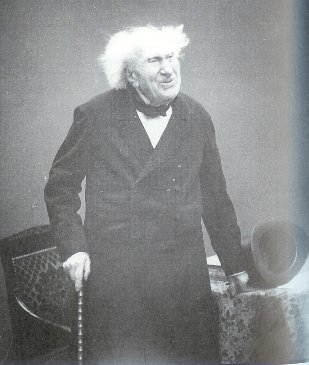
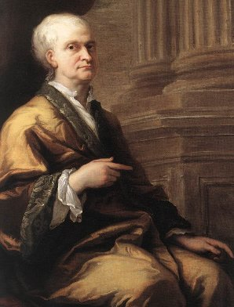
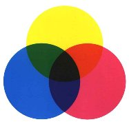
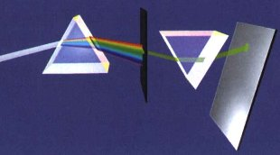
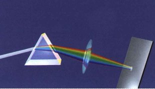
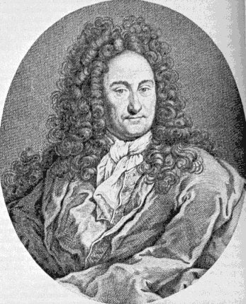
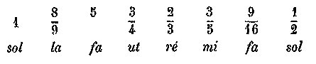
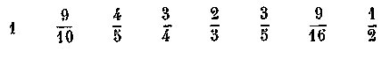
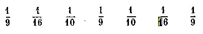

<!DOCTYPE html PUBLIC "-//W3C//DTD HTML 4.01 Transitional//EN">
<html>
<head><meta charset="utf-8">
  
  <title>chevreul_newton</title>
  <meta name="author" content="AstroResearch">

<link rel="stylesheet" href="../barre.css"><script src="../barre.js" defer></script></head>
<body style="background-image: url(back8.gif);"><div class="replica-note"><a href="../index.html">Hervé Delboy — alchimie</a> · <a href="../sommaire.html">Sommaire</a> · <a href="../recherche.html">Recherche</a> · <a href="../notice.html">Notice</a></div>
<div style="margin-left: 80px; font-family: verdana;">
<div style="text-align: center;"><span style="font-weight: bold;">CONSID&Eacute;RATIONS
G&Eacute;N&Eacute;RALES SUR LES M&Eacute;THODES SCIENTIFIQUES ET
APPLICATIONS</span><span style="font-weight: bold;"> A LA
M&Eacute;THODE A POSTERIORI DE NEWTON ET A LA M&Eacute;THODE A PRIORI
DE LEIBNITZ</span><br>
</div>
<br>
<div style="text-align: center;"><small><span style="font-weight: bold;">PAR
M. E. CHEVREUL</span></small><br>
</div>
<br>
<div style="text-align: center;">
<p><small><small>DOYEN DES &Eacute;TUDIANTS DE FRANCE.<br>
<br>
<br>
Michel Eug&egrave;ne Chevreul &agrave; 100 ans<br>
(clich&eacute; de Nadar, in. le Journal Illustr&eacute;, ao&ucirc;t
1886)<br>
</small></small></p>
<p><small><small><a href="../original/plan-chevreul.html"></a><a href="../original/liber-artephius.html"></a><br>
</small></small></p>
</div>
<br>
<font size="2">revu le 26 novembre 2004</font><br>
<font face="Verdana, Arial, Helvetica, sans-serif"> </font><br>
<hr style="width: 50%; height: 5px;"><br>
<div style="text-align: left;"><small><span
 style="font-style: italic; color: rgb(0, 0, 153);">On doit tendre avec
effort &agrave; l'infaillibilit&eacute; sans y pr&eacute;tendre.</span></small><br>
Malebranche.<br>
</div>
<br>
<br>
<small><small>&sect; I. <a href="#CONSID%C3%89RATIONS_G%C3%89N%C3%89RALES.">CONSID&Eacute;RATIONS
G&Eacute;N&Eacute;RALES</a>. ................ 293<br>
<br>
&sect; II.&nbsp; <a href="#NEWTON.">Newton</a>
........................ 296<br>
<br>
<a href="#Citations_propres_%C3%A0_montrer_que_l%C3%A9ther">Citations propres</a>
&agrave; montrer que l'&eacute;ther de Huygens n'&eacute;tait pas<br>
<br>
l'&eacute;ther de Newton. .................... 301<br>
<br>
Citations........................... 303<br>
<br>
<a href="#QUESTION_XXIX">Question XXIX</a> (citation textuelle de
Newton)........... 303<br>
<br>
<a href="#QUESTION_XIX">Question XIX</a> (citation textuelle de
Newton). ........... 304<br>
<br>
<a href="#QUESTION_XXI">Question XXI</a> (citation textuelle de
Newton). ........... 304<br>
<br>
<a href="#QUESTION_XXIII">Question XXIII</a> (citation textuelle de
Newton). .......... 305<br>
<br>
<a href="#QUESTION_XXIV">Question XXIV</a> (citation textuelle de
Newton)........... 305<br>
<br>
&sect; III.&nbsp; <a href="#NEWTON_ENVISAG%C3%89_AU_POINT_DE_VUE_DE_LA">Newton</a>
envisag&eacute; au point de vue de la m&eacute;thode &agrave;
posteriori. 307 <br>
<br>
<a href="#PREMIER_FAIT.">Premier fait</a>. ......................... 308<br>
<br>
<a href="#DEUXIEME_FAIT._">Deuxi&egrave;me fait</a>.
........................ 309<br>
<br>
<a href="#TROISI%C3%88ME_FAIT.">Troisi&egrave;me fait</a>.
...................... . 311<br>
<br>
&sect;IV. <a href="#LEIBNITZ.">Leibnitz</a>. .......................
315<br>
<br>
&sect; V.&nbsp; <a href="#NEWTON_ET_LEIBNITZ_AU_POINT_DE_VUE_DE_LA">Newton
et Leibnitz</a> au point de vue de la m&eacute;thode ..... 322<br>
<br>
<a href="#PREMIER_POINT">Premier point</a>.&nbsp; Extension de la
distinction des groupes des propri&eacute;t&eacute;s organoleptiqnes
d'avec les deux groupes de propri&eacute;t&eacute;s physiques et de
propri&eacute;t&eacute;s chimiques. ............ 332<br>
<br>
<a href="#DEUXI%C3%88ME_POINT">Deuxi&egrave;me point</a>.&nbsp; Ce que
Huygens
a appel&eacute; &eacute;ther est tout &agrave; fait diff&eacute;rent de
ce que Newton a appel&eacute; &eacute;ther, selon M. Chevreul. . 334<br>
<br>
A. <a href="#A._%C3%89ther_de_Huygens">&Eacute;ther de Huygens</a>.
..................... 335<br>
<br>
B. <a href="#B._%C3%89ther_de_Newton.">&Eacute;ther de Newton</a>.
..................... 335<br>
<br>
A. <a href="#A._Newton_et_la_m%C3%A9thode_a_posteriori.">Newton et la
m&eacute;thode &agrave; posteriori</a>. ........... . . 337<br>
<br>
<a href="#EN_R%C3%89SUM%C3%89.">D&eacute;finition rigoureuse</a> de la
m&eacute;thode &agrave; posteriori exp&eacute;rimentale telle que M.
Chevreul la con&ccedil;oit. ................ 343<br>
<br>
A. Newton et la <a href="#A._Newton_et_la_m%C3%A9thode_a_posteriori.">m&eacute;thode
&agrave; posteriori</a>. ............. 344<br>
<br>
B. Leibnitz et la <a href="#B._Leibnitz_et_la_m%C3%A9thode_%C3%A0_priori">m&eacute;thode
&agrave; priori</a>. ............... 345<br>
<br>
<a href="#POST-SCRIPTUM">Post-scriptum</a>. ........................ 349<br>
<br>
<a href="#PREMIER_DOCUMENT.">Premier document</a>.&nbsp; Lettre de M.
G. Govi &agrave; M. Chevreul. .... 353<br>
<br>
<a href="#DEUXI%C3%88ME_DOCUMENT.">Deuxi&egrave;me document</a>.&nbsp;
Note de M. Ed. Becquerel &agrave; M. Chevreul. . 363</small></small><br>
<br>
<hr style="width: 50%; height: 5px;"><br>
<span style="font-weight: bold;"><a  name="Introduction_"></a>Introduction
</span>: nous avons cru faire oeuvre utile en rendant plus accessible
ce texte de Chevreul. Il s'agit de la 2<sup>&egrave;me</sup> partie
d'un M&eacute;moire, paru aux <small style="font-weight: bold;"><span
 style="font-style: italic;">M&eacute;moires de l'Acad&eacute;mie des
Sciences de l'Institut de France</span></small>,
tome XLII, en 1883. Ce n'est point pour l'alchimie, encore que Chevreul
la cite, que nous avons &eacute;tudi&eacute; ce texte mais pour essayer
de d&eacute;crypter le processus de pens&eacute;e si particulier de
Chevreul, que Marcellin Berthelot ne supportait pas, cf. <small><a
 href="../original/chevreul.html">Eloge</a></small>.
Or, loin d'&ecirc;tre comme le suppose assez m&eacute;chamment
Berthelot, Chevreul &eacute;tait loin d'&ecirc;tre un esprit
born&eacute; et l'on peut m&ecirc;me assurer que ses connaissances,
li&eacute;es &agrave; ses activit&eacute;s, &agrave; son extr&ecirc;me
long&eacute;vit&eacute; et &agrave; stup&eacute;fiante m&eacute;moire,
&eacute;taient absolument encyclop&eacute;diques. Tr&egrave;s
curieusement, un ouvrage paru en 1997 sur Chevreul, Un Savant, des
Couleurs !, ne fait aucune r&eacute;f&eacute;rence aux travaux
d'histoire de l'alchimie entrepris par le chimiste. Dans ce site, on
s'est fait l'&eacute;cho, &agrave; de multiples reprises, de
l'activit&eacute; abondante de Chevreul dans ce domaine,
activit&eacute; partag&eacute;e, faut-il le dire, par Berthelot.
Voil&agrave; encore l'un de ces paradoxes remarquables que nous donne
l'histoire des sciences.<br>
Le texte de Chevreul n'est pas tr&egrave;s original en soi ; il met en
lumi&egrave;re - c'est le cas de le dire - l'int&eacute;r&ecirc;t du
chimiste pour la notion d'&eacute;ther - il compare le concept
d'&eacute;ther selon Newton puis selon Huygens -, la masse des rayons
lumineux - que l'on peut assimiler &agrave; leur longueur d'onde,
rapport&eacute;e aux circonstances historiques dans lesquelles Newton
d&eacute;crit la r&eacute;fraction des rayons rouge et violet ; enfin
pour la m&eacute;thode <small>A POSTERIORI</small> dont il fut le
champion.<br>
<br>
<br>
<br>
<hr style="width: 50%; height: 5px;"><br>
<span style="font-weight: bold;"><a  name="&sect;_I."></a>&sect; I.</span><br>
<br>
<a  name="CONSID&Eacute;RATIONS_G&Eacute;N&Eacute;RALES."></a><small><span
 style="font-weight: bold;">CONSID&Eacute;RATIONS
G&Eacute;N&Eacute;RALES.</span></small><br>
<br>
<a  name="317"></a><span style="font-weight: bold;">317</span>. Qu'on
pardonne quelques r&eacute;flexions &agrave; un homme dont la passion a
&eacute;t&eacute; constante pour l'&eacute;tude. Si le grand &acirc;ge
rapproche, comme on le dit g&eacute;n&eacute;ralement, le vieillard de
l'enfance, il faut, pour rester dans le domaine de la
v&eacute;rit&eacute;, ne pas m&eacute;conna&icirc;tre qu'il existe des
hommes chez lesquels la virilit&eacute; perd incontestablement de sa
force au double point de vue des facult&eacute;s physiques et
intellectuelles &agrave; mesure qu'ils avancent dans la carri&egrave;re
de la vie. Mais cette perte a des compensations puis&eacute;es dans
l'habitude m&ecirc;me de la m&eacute;ditation qui, fixant l'esprit sur
des id&eacute;es d'un int&eacute;r&ecirc;t incontestable,
l'&eacute;loigne d'id&eacute;es futiles quand elles ne seraient pas le
contraire de la v&eacute;rit&eacute;. Cette habitude a donc, avant
tout, l'avantage d'appeler l'attention sur des objets
int&eacute;ressants par les remarques et les r&eacute;flexions qu'ils
sugg&egrave;rent; mais ce n'est pas tout, l'habitude d'observer en tout
temps, loin de s'&eacute;teindre avec l'&acirc;ge, permet de profiter
du pr&eacute;sent, soit pour modifier des id&eacute;es acquises dans un
pass&eacute; inconnu du plus grand nombre des contemporains, soit pour
reconna&icirc;tre par des rapprochements ou des comparaisons d'un
v&eacute;ritable int&eacute;r&ecirc;t, comme choses nouvelles, qu'il
e&ucirc;t &eacute;t&eacute; impossible d'&eacute;tablir comme
v&eacute;rit&eacute; &agrave; des esprits &eacute;clair&eacute;s, mais
plus jeunes, auxquels le pass&eacute; dont nous parlons &eacute;tait
inconnu, enfin soit m&ecirc;me encore de d&eacute;couvrir des choses
absolument nouvelles &agrave; l'aide d'&eacute;l&eacute;ments anciens
inconnus des contemporains et qui, longtemps encore, auraient pu rester
st&eacute;riles. [<small><small style="color: rgb(0, 0, 200);">la
v&eacute;rit&eacute; oblige &agrave; dire que tr&egrave;s souvent, les
fonctions intellectuelles baissent sans que le sujet s'en
aper&ccedil;oive vraiment ; lorsqu'il ne s'agit pas de
d&eacute;t&eacute;rioration due &agrave; la maladie, la perte
physiologique des neurones influe fatalement sur les capacit&eacute;s
cognitives du sujet qui se r&eacute;fugie alors dans les souvenirs les
plus anciens, les r&eacute;cents lui &eacute;chappant comme bulles sur
l'eau, ou bien encore qui se r&eacute;fugie dans les grands principes :
c'est ce que l'on nomme par habitude l'&acirc;ge de la sagesse.
Chevreul, dans son grand &acirc;ge, c'est-&agrave;-dire &agrave; partir
de 80 ans, n'a point &eacute;chapp&eacute; &agrave; la r&egrave;gle ;
mais il avait tellement lu, et sur des sujets tellement divers, qu'il
lui &eacute;tait encore permis de r&eacute;aliser des synth&egrave;ses
remarquables qui, si elles ne brillaient plus par une nouveaut&eacute;
remarquable, permettaient de jeter des &eacute;clairages de points de
vue diff&eacute;rents sur des domaines o&ugrave;, de fa&ccedil;on quasi
instinctive, le savant retombait sur ses marottes, c'est-&agrave;-dire
sur la notion de synth&egrave;se a posteriori et sur les connaissances
primitives pass&eacute;es, au premier rang desquels toujours il avait
rang&eacute; l'alchimie. Voyez l'<a href="../original/idee-alchimique.html">Id&eacute;e
alchimique</a> et surtout, la <a href="../original/idee-alchimique-3.html">synth&egrave;se
des Connaissances Chimiques</a>. Voyez encore la <a
 href="../original/add-chevreul-hoefer.html">critique de l'Histoire de la Chimie</a>
de Ferdinand Hoefer par Chevreul -</small></small> ]<br>
<br>
<a  name="318"></a><span style="font-weight: bold;">318</span>. En
faisant une application de ces consid&eacute;rations
g&eacute;n&eacute;rales &agrave; mes propres travaux dont le plus grand
nombre ressortissent de l'exp&eacute;rience, ils ont &eacute;t&eacute;
l'occasion de remarques dont l'int&eacute;r&ecirc;t, loin de diminuer
avec le temps, n'a fait que s'enrichir, en me permettant de rendre
compte de la mani&egrave;re dont mon esprit proc&eacute;dait &agrave;
ses recherches ; et, &agrave; cette occasion, j'ajouterai que mes
&eacute;crits concernant des sujets relatifs &agrave; la critique,
&agrave; l'histoire, &agrave; la p&eacute;dagogie, n'osant dire
&agrave; la philosophie, m'ont pr&eacute;sent&eacute; les analogies les
plus grandes dans le mode de les accomplir, et plus tard je reviendrai
sur ce sujet en traitant de ce qu'on appelle la simple observation et
l'exp&eacute;rience. N'ayant jamais eu la moindre tendance &agrave;
m'occuper de litt&eacute;rature proprement dite, et ayant eu l'occasion
assez fr&eacute;quente de m'entretenir avec des po&egrave;tes et
des prosateurs purement lettr&eacute;s, je me sens dans
l'impossibilit&eacute; de faire aucune allusion &agrave; la
po&eacute;sie ni au roman vulgaire. Je mets le th&eacute;&acirc;tre de
c&ocirc;t&eacute; et le roman de mSurs, attachant le plus grand prix
&agrave; des oeuvres de l'&eacute;cole fond&eacute;e par
Moli&egrave;re,
un des &eacute;crivains philosophes dont le m&eacute;rite n'a
&eacute;t&eacute; d&eacute;pass&eacute; par personne. [<small><small
 style="color: rgb(0, 0, 200);">Chevreul faisait le plus grand cas de
Moli&egrave;re ; il y revient dans la <a href="../original/idee-alchimique-3.html">Connaissance
des sciences chimiques</a> depuis les philosophes les plus anciens
jusqu'&agrave; Lavoisier -</small></small>]<br>
<br>
<a  name="319"></a><span style="font-weight: bold;">319</span>.
Malgr&eacute; l'uniformit&eacute; de ma vie, j'ai bien observ&eacute;
la diff&eacute;rence de disposition o&ugrave; je me trouvais pour
m'occuper du m&ecirc;me sujet d'&eacute;tude un tel jour et un tel
autre ; mais parlant en g&eacute;n&eacute;ral j'ai senti la
n&eacute;cessit&eacute; de continuer un sujet tant qu'il me
pr&eacute;sentait des faits nouveaux &agrave; l'observation, jusqu'au
moment o&ugrave;, sentant cette ardeur se calmer, je passais &agrave;
un autre sujet de recherches ; mais apr&egrave;s un certain temps,
revenant aux anciennes avec de nouvelles id&eacute;es qui me
permettaient de les &eacute;tendre en
les approfondissant, ma conviction en leur exactitude, &agrave; ma
grande satisfaction, allait en croissant. C'est ainsi qu'apr&egrave;s
cinquante-deux ans d'&eacute;tude sur la vision des couleurs en repos,
je publiai apr&egrave;s f&eacute;vrier de l'an mil huit cent
soixante-dix-huit un premier &eacute;crit sur la vision des couleurs en
mouvement, intitul&eacute; : <small style="color: rgb(0, 0, 153);"><span
 style="font-weight: bold; font-style: italic;">Compl&eacute;ment
d'&eacute;tude sur la vision des couleurs</span></small>, 277 pages,
imprim&eacute; dans les m&eacute;moires de l'Acad&eacute;mie des
sciences, t.XLI. [<small><small style="color: rgb(0, 0, 200);">Chevreul
avait alors 95 ans. Il publiera encore une Note &agrave; l'<span
 style="font-weight: bold; font-style: italic;">Acad. Sci</span>
&agrave; 99 ans.</small></small>]<br>
<br>
<a  name="320"></a><span style="font-weight: bold;">320.</span> Ce
compl&eacute;ment est suivi d'un second &eacute;crit intitul&eacute; : <small
 style="color: rgb(0, 0, 153);"><span
 style="font-weight: bold; font-style: italic;">M&eacute;moire sur la
vision des couleurs mat&eacute;rielles en mouvement de rotation et des
vitesses num&eacute;riques de rotation de cercles dont une
moiti&eacute; diam&eacute;trale est color&eacute;e et l'autre blanche,
vitesse correspondant &agrave; trois p&eacute;riodes de leur mouvement,
&agrave; partir de l'extr&ecirc;me vitesse jusqu'au repos</span></small>.
Cet ouvrage imprim&eacute; fait partie du XLII volume des
m&eacute;moires de l'Acad&eacute;mie qui n'a point paru. Un examen
nouveau de l'<small style="color: rgb(0, 0, 153);"><span
 style="font-weight: bold; font-style: italic;">Optique</span></small>
de Newton m'a d&eacute;montr&eacute; que ce qu'il appelle Ether dans
les questions qui terminent le troisi&egrave;me livre de son <small
 style="color: rgb(0, 0, 153);"><span
 style="font-weight: bold; font-style: italic;">Optique</span></small>,
n'est point l'&Eacute;ther auquel Huygens rapporte la propagation
lumineuse des couleurs; et ce fait est l'objet de cet appendice. Je
n'en resterai pas l&agrave;, j'examinerai Newton au point de vue de la
m&eacute;thode a posteriori, et Leibnitz &agrave; celui de la
m&eacute;thode a priori la plus absolue. Enfin je donnerai comme
documents : <br>
- <span style="font-weight: bold;">1&deg;</span> une lettre que M.
Gilberto Govi m'a adress&eacute;e sur la correspondance des couleurs du
spectre solaire avec les tons musicaux; <br>
- <span style="font-weight: bold;">2&deg;</span> une note de M. Edmond
Becquerel.<br>
<br>
<span style="font-weight: bold;"><a  name="&sect;_II-"></a>&sect; II-</span><br>
<br>
<span style="font-weight: bold;"><a  name="NEWTON."></a>NEWTON.<br>
<br>
</span>
<div style="text-align: center;"><span style="font-weight: bold;"><br>
</span><small><a  name="FIGURE_I"></a>FIGURE I<span
 style="font-weight: bold;"><br>
</span>(<small>Sir Isaac Newton 1710, portrait par Sir James Thornhill</small>)</small></div>
<br>
<span style="font-weight: bold;"><a  name="321"></a>321</span>.
Jusqu'&agrave; ces derni&egrave;res ann&eacute;es o&ugrave; j'ai senti
la n&eacute;cessit&eacute; d'approfondir la lecture de l'<small
 color="rgb(0, 0, 153)" style="color: rgb(0, 0, 153);"><span
 style="font-weight: bold; font-style: italic;">Optique</span></small>
de Newton [<small><small style="color: rgb(0, 0, 200);"><span
 style="font-weight: bold; font-style: italic;">Opticks
or a Treatise of the Reflexions, Refractions, Inflexions and Colours of
Light. Also Two Treatrises of the Species and Magnitudes of Curvilinear
Figures</span>, London, 1704)</small></small>] pour mes
derni&egrave;res recherches, j'avais la conviction
qu'il existait deux th&eacute;ories de la lumi&egrave;re; la plus
ancienne profess&eacute;e par Huygens, dans un trait&eacute;
publi&eacute; en 1690. L'auteur attribue aux vibrations ou ondulations
d'un fluide excessivement rare dou&eacute; d'une
&eacute;lasticit&eacute; parfaite qui sous le nom d'Ether occupait tous
les espaces vides de la mati&egrave;re proprement dite. Suivant
l'auteur la lumi&egrave;re r&eacute;sulte des vibrations de
l'&eacute;ther, comme le son des vibrations ou des ondulations de
l'air; de sorte que de la lumi&egrave;re &eacute;teinte est de
l'&eacute;ther en repos comme le son &eacute;teint est le silence ou
l'air en repos. La seconde th&eacute;orie dite de l'&eacute;mission,
attribu&eacute;e
&agrave; Newton, a &eacute;t&eacute; consid&eacute;r&eacute;e comme
diam&eacute;tralement oppos&eacute;e &agrave; la premi&egrave;re. La
th&eacute;orie d'Huygens compte le plus de partisans, depuis les
travaux de Thomas Young et surtout ceux de Fresnel. [<small><small
 style="color: rgb(0, 0, 200);">Newton a commenc&eacute;
d'&eacute;laborer une th&eacute;orie corpusculaire de la
lumi&egrave;re, d&egrave;s l'&acirc;ge de 24 ans, en 1666. En utilisant
un prisme triangulaire, il observe que des angles de r&eacute;fraction
diff&eacute;rents correspondent &agrave; des couleurs
diff&eacute;rentes. Il r&eacute;alise une exp&eacute;rience - dite
cruciale - qui montre que les couleurs ne sont pas un effet des
surfaces travers&eacute;es par la lumi&egrave;re : en effet, un second
prisme ne d&eacute;compose pas la lumi&egrave;re monochromatique. Il
consid&egrave;re que la lumi&egrave;re solaire est form&eacute;e de
sept couleurs &eacute;l&eacute;mentaires auxquelles correspondent dans
un milieu donn&eacute;, des indices de r&eacute;fraction propre. En
1672, il est en mesure de postuler la nature corpusculaire de grains de
lumi&egrave;re se propageant &agrave; une vitesse &eacute;norme.</small></small>
<small><small style="color: rgb(0, 0, 200);">Pour Huygens, la
th&eacute;orie corpusculaire ne peut rendre compte de la propagation
rectiligne de la lumi&egrave;re. Et d'embl&eacute;e, Huygens se trouve
oblig&eacute; de postuler qu'il existe un milieu permettant de &laquo;
v&eacute;hiculer &raquo; des ondes de lumi&egrave;re ; milieu qu'il
nomme ETHER. Cette th&eacute;orie permet d'expliquer d'un coup et le
ph&eacute;nom&egrave;ne de r&eacute;flexion, et celui de
r&eacute;fraction. Huygens r&eacute;alise entre autre des
exp&eacute;riences avec un min&eacute;ral que nous avons
d&eacute;j&agrave; abord&eacute;, dans la section consacr&eacute;e
&agrave; la <a href="../original/reincrud.html">r&eacute;incrudation</a> : la
calcite.</small></small>]<br>
<br>
<span style="font-weight: bold;"><a  name="322"></a>322</span>. Les
citations que j'ai faites pr&eacute;c&eacute;demment dans cet
&eacute;crit (alin&eacute;as 187, 212 &agrave; 220), de passages
extraits des trente et une questions qui terminent le troisi&egrave;me
livre de l'<small><span style="font-weight: bold; font-style: italic;">Optique
</span></small>de Newton, sont tr&egrave;s claires, trop explicites et
trop nombreuses, pour croire, apr&egrave;s les avoir lues, que Newton
ne crut pas &agrave; la propagation de la lumi&egrave;re par des
vibrations ou des ondes, qu'il dit &ecirc;tre comparables &agrave;
celles de l'air, auxquelles nous attribuons les sensations <br>
du son. Je n'ai donc rien &agrave; ajouter &agrave; ce qui
pr&eacute;c&egrave;de, quant au mode de propagation de la
lumi&egrave;re. Mais, &agrave; l'&eacute;poque dont je parle, je ne
m'&eacute;tais pas aper&ccedil;u que le milieu vibrant du foyer
lumineux dont Newton parlait, n'&eacute;tait pas l'&eacute;ther auquel
Huygens, dans son trait&eacute; de la lumi&egrave;re, attribuait la
propri&eacute;t&eacute; de produire en nous les sensations de la
blancheur et des couleurs. [<small><small style="color: rgb(0, 0, 200);">l'ETHER
de Newton correspond &agrave; un
milieu d'une extr&ecirc;me subtilit&eacute; dont on trouve trace chez
les vieux auteurs du Moyen &Acirc;ge. Faute de ce milieu qui
p&eacute;n&egrave;tre tout, la th&eacute;orie corpusculaire de la
lumi&egrave;re s'effondre. De fa&ccedil;on semblable, mais pour
l&eacute;gitimer une conception ondulatoire pure de la lumi&egrave;re,
Huygens, partant des travaux de Descartes, va lui aussi &ecirc;tre
amen&eacute; &agrave; d&eacute;velopper son propre ETHER. Mais Huygens
ne s'explique pas plus que Newton sur la nature de l'&eacute;ther. Une
difficult&eacute; d'ailleurs surgit : si l'&eacute;ther exsite, il doit
opposer une r&eacute;sistance m&eacute;canique aux mouvements des
astres ; or les calculs montraient que les astres se mouvaient sans
r&eacute;sistance d'un quelconque milieu. Il y a plue : l'&eacute;ther
de Huygens se devait de transmettre les perturbations lumineuses et
dans le m&ecirc;me temps, de ne pas s'opposer aux mouvements des
astres... Newton ne voit pas d'autre explication - en fait, il ne feint
point d'hypoth&egrave;ses, cf. le c&eacute;l&egrave;bre hypothses non
fingo - qu'une cause divine pour renouveler l'impulsion
n&eacute;cessaire &agrave; la conservation des mouvements. L'ETHER est
v&eacute;ritablement le centre du probl&egrave;me
&eacute;pistomologique et renvoie &agrave; deux attitudes
enti&egrave;rement diff&eacute;rentes : le m&eacute;canisme d'une part
et l'intervention divine d'autre part.</small></small>]<br>
<br>
<div style="text-align: center;"><br>
<small style="color: rgb(102, 0, 0);">prisme s&eacute;parant la
lumi&egrave;re blanche en sept rayons</small><br>
</div>
<br>
<span style="font-weight: bold;"><a  name="323."></a>323.</span> Newton
avait &eacute;t&eacute; conduit par l'exp&eacute;rience &agrave;
admettre qu'un rayon de lumi&egrave;re blanche r&eacute;sulte d'un
m&eacute;lange de sept rayons produisant en nous la sensation de sept
couleurs diff&eacute;rentes, lorsque ces rayons avaient
&eacute;t&eacute; s&eacute;par&eacute;s au moyen d'un prisme, et chacun
d'eux lui paraissait simple, lorsqu'il conservait la m&ecirc;me action
sur la vue, quel que f&ucirc;t le nombre de r&eacute;flexions ou de
r&eacute;fractions qu'il lui f&icirc;t subir. Le rayon le plus
r&eacute;flexible ou le plus r&eacute;frangible nous affectait de la
couleur violette, et le
moins r&eacute;flexible ou r&eacute;frangible nous affectait de la
couleur rouge; les rayons compris entre les deux extr&ecirc;mes, en
allant du rouge au violet, nous affectaient de l'orang&eacute;, du
jaune, du vert, du bleu et de l'indigo.<br>
<br>
Newton reconnut que :<br>
<br>
Le rayon rouge et le rayon jaune m&ecirc;l&eacute;s nous affectaient de
la sensation de l'orang&eacute;;<br>
Le rayon rouge et bleu, de la sensation du violet;<br>
Les rayons jaune et bleu, de la sensation du vert;<br>
<br>
<div style="text-align: center;"><br>
<table
 style="margin-left: auto; margin-right: auto; text-align: left; width: 298px; height: 190px;"
 border="0" cellpadding="2" cellspacing="10">
  <tbody>
    <tr>
      <td style="vertical-align: top;"><br>
      <div style="text-align: center;"><small
 style="color: rgb(102, 0, 0);">rayons rouge, bleu et jaune</small><br>
      </div>
      </td>
      <td style="vertical-align: top;"><br>
      <div style="text-align: center;"><small
 style="color: rgb(102, 0, 0);">rayons orang&eacute;, violet et vert</small><br>
      </div>
      </td>
    </tr>
  </tbody>
</table>
<small style="color: rgb(102, 0, 0);">m&eacute;tamorphose des rayons</small><br>
</div>
<br>
II reconnut en outre que ces m&eacute;langes soumis &agrave; une
nouvelle r&eacute;fraction &eacute;taient r&eacute;duits &agrave; leurs
rayons simples, en quoi ils diff&eacute;raient de l'orang&eacute;, du
violet et du vert, du spectre solaire, qui conservaient leur
simplicit&eacute;.<br>
<br>
<div style="text-align: center;"><br>
<small style="color: rgb(102, 0, 0);">deuxi&egrave;me r&eacute;fraction</small><br>
</div>
<br>
<span style="font-weight: bold;"><a  name="324"></a>324</span>. Je fais
remarquer avec satisfaction que Newton a donn&eacute; le premier au
monde savant l'id&eacute;e de l'esp&egrave;ce dans le monde inorganique
&agrave; une &eacute;poque o&ugrave; la chimie n'existait pas, cette
science m&ecirc;me dont le caract&egrave;re essentiel,
conform&eacute;ment &agrave; la remarque que j'en ai faite, est de
r&eacute;duire la mati&egrave;re en des types d&eacute;finis &agrave;
l'&eacute;tat de puret&eacute;, chacun caract&eacute;ris&eacute; par un
ensemble de propri&eacute;t&eacute;s qui n'appartient qu'&agrave; ce
type, et ce type ainsi d&eacute;fini est une esp&egrave;ce chimique.
Nous laissons &agrave; Newton la gloire d'avoir r&eacute;duit la
lumi&egrave;re blanche en sept rayons qui nous affectent chacun en
produisant la sensation d'une couleur d&eacute;termin&eacute;e, et, en
outre, d'avoir distingu&eacute; les propri&eacute;t&eacute;s que sont
en nous, comme les couleurs, d'avec les propri&eacute;t&eacute;s dont
nous rapportons la cause sans h&eacute;sitation au monde
ext&eacute;rieur.<br>
<br>
Par exemple : S'agit-il de la r&eacute;flexion de la lumi&egrave;re par
une surface mat&eacute;rielle? Sans h&eacute;sitation nous suivons hors
de nous le rayon lumineux cause de la blancheur ou de la couleur, qui
tombe obliquement sur cette surface et nous constatons que son angle de
r&eacute;flexion est &eacute;gal &agrave; son angle d'incidence, et que
le ph&eacute;nom&egrave;ne est hors de nous. M&ecirc;me r&eacute;sultat
quand le rayon sortant d'un milieu transparent se r&eacute;fracte dans
un second milieu transparent. &Eacute;videmment tous ces
ph&eacute;nom&egrave;nes de r&eacute;flexion et de r&eacute;fraction se
passent hors de nous, et dans un m&ecirc;me plan ext&eacute;rieur.<br>
<br>
<span style="font-weight: bold;"><a  name="325"></a>325</span>. Il n'en
est plus de m&ecirc;me des rayons lumineux : r&eacute;unis et agissant
au nombre de sept; ils nous affectent de la blancheur, tandis que
chacun d'eux agissant seul, produit en nous la sensation d'une des sept
couleurs, le rouge, l'orang&eacute;, le jaune, le vert, le bleu,
l'indigo ou le violet. La blancheur et les couleurs sont donc en nous,
et non dans la lumi&egrave;re, et Newton distingue la blancheur et les
couleurs, d'avec les propri&eacute;t&eacute;s attribu&eacute;es
&agrave;
ces rayons lorsque, tombant obliquement sur des surfaces, ils sont
r&eacute;fl&eacute;chis, ou que passant obliquement d'un milieu
transparent dans un autre, ils se r&eacute;fractent diff&eacute;remment
suivant leur
esp&egrave;ce.<br>
<br>
<span style="font-weight: bold;"><a  name="326"></a>326</span>. Je
reviendrai dans le paragraphe suivant (alin&eacute;as <a href="#330.">330</a>,
<a href="#334">334</a> et <a href="#335">335</a>, &sect; III), sur la
distinction faite par Newton entre une propri&eacute;t&eacute; physique
ou une
propri&eacute;t&eacute; chimique, se manifestant dans le monde
ext&eacute;rieur par un ph&eacute;nom&egrave;ne que nous jugeons
ind&eacute;pendant de nous, quoique nous l'apercevions par quelqu'un de
nos sens, mais nous ne pouvons le confondre avec les
ph&eacute;nom&egrave;nes de la blancheur ou de la couleur, sensations
qui sont en nous et dont la cause est la lumi&egrave;re. Newton le
premier &agrave; distinguer cette propri&eacute;t&eacute; de la
lumi&egrave;re en
faisant l'observation explicite, que ses rayons r&eacute;unis
produisent en nous la blancheur et que s&eacute;par&eacute;s les
couleurs. La blancheur et
les couleurs simples effets, sensations sont en nous, je les appelle
propri&eacute;t&eacute;s organoleptiques ;
telles sont encore les odeurs, les saveurs, etc. (Voir plus loin
alin&eacute;as <a href="#334">334</a>
et <a href="#335">335</a>.) [<small><small
 style="color: rgb(0, 0, 200);">cette distinction
g&eacute;n&eacute;ralis&eacute;e semblait encore nouvelle pour
l'&eacute;poque et traduit d&eacute;j&agrave; le souci d'explications
touchant aux neuro-sciences. C'est un point qui fut totalement
pass&eacute; sous silence par Berthelot dans l'<a href="../original/chevreul.html">hommage</a>
qu'il rendit &agrave; Chevreul</small></small>]<br>
<br>
<span style="font-weight: bold;"><a  name="327"></a>327</span>. Mais je
n'ai pas fini d'exposer les opinions de Newton ; il me reste &agrave;
parler de la mani&egrave;re dont il se
repr&eacute;sentait la constitution d'une esp&egrave;ce de rayon de
lumi&egrave;re. Pour Newton, la diff&eacute;rence r&eacute;sidait dans
la grosseur des corpuscules qu'il admettait comme constituant chaque
esp&egrave;ce de rayon. Ces corpuscules lumineux allaient en diminuant
de grandeur progressivement du rayon rouge au rayon violet. Les plus
gros corpuscules, les rouges, &eacute;taient les moins
r&eacute;flexibles et les moins r&eacute;frangibles, les corpuscules
violets, les moins gros et d&egrave;s lors les plus r&eacute;flexibles
comme les
plus r&eacute;frangibles, et les vibrations ou les ondes lumineuses
diminuaient de grandeur progressivement du rouge ou du violet. On voit
donc que, par la diff&eacute;rence de grandeur des corpuscules,
il expliquait la cause des propri&eacute;t&eacute;s
organoleptiques de la lumi&egrave;re, en les rapportant &agrave; des
causes
inh&eacute;rentes &agrave; leurs propri&eacute;t&eacute;s physiques et
d&egrave;s
lors il ne consid&eacute;rait point les rayons de lumi&egrave;re comme
color&eacute;s, mais
comme causes des couleurs, et cela par une cons&eacute;quence de
l'in&eacute;galit&eacute; de la grandeur de leurs corpuscules. [<small><small
 style="color: rgb(0, 0, 200);">de fait, la notion de masse de
corpuscule se traduit aujourd'hui par celle d'&eacute;nergie : les
rayons rouges ont une &eacute;nergie plus faible que les rayons
violets, lesquels pr&eacute;c&egrave;dent l'ultra violet ainsi que les
rayons X utilis&eacute;s en radiologie et les rayons gamma qui
proviennent du soleil</small></small>]<br>
<br>
<a  name="328"></a><span style="font-weight: bold;">328</span>. Certes,
s'il existe un fait int&eacute;ressant dans l'histoire des sciences,
c'est assur&eacute;ment celui qui a
&eacute;chapp&eacute;, durant un bien long temps, aux personnes dont la
vision a &eacute;t&eacute; un sujet d'&eacute;tude; je ne puis me
l'expliquer qu'en l'attribuant &agrave; l'ignorance des contemporains
de Newton, de la science chimique, et cons&eacute;quemment de l'objet
qu'elle se propose de r&eacute;duire la mati&egrave;re en des types
d&eacute;finis sous la d&eacute;nomination d'esp&egrave;ces chimiques.
En effet, une fois l'&eacute;ther de Huygens admis, l'explication de la
propagation de la lumi&egrave;re par des vibrations ou des ondes
lumineuses se pr&eacute;sentait clairement &agrave; l'esprit, en
consid&eacute;rant
l'air propageant les sons par des vibrations ou des ondes sonores, et
rien ne semblait plus simple que d'attribuer l'obscurit&eacute;
&agrave; la cessation du mouvement de l'&eacute;ther, comme le silence
&agrave; la cessation des vibrations ou des ondes de l'air. En outre,
Newton, reconnaissant explicitement des corpuscules dans la
lumi&egrave;re, ajoutait &eacute;videmment &agrave; l'analogie
de l'&ecirc;tre lumineux avec l'&ecirc;tre sonore, mais analogie qui
&agrave; mon sens
n'est pas compl&egrave;te eu &eacute;gard &agrave; l'&ecirc;tre
lumineux d&eacute;cid&eacute;ment complexe tandis que l'&ecirc;tre
sonore ne l'est pas de la m&ecirc;me mani&egrave;re.<br>
<br>
<small><span style="font-weight: bold;"><a
  name="Citations_propres_&agrave;_montrer_que_l&eacute;ther"></a>Citations propres
&agrave;
montrer que l'&eacute;ther de Huygens n'&eacute;tait pas l'&eacute;ther
de Newton.</span></small><br>
<br>
<span style="font-weight: bold;"><a  name="329"></a>329</span>. Je dois
revenir sur deux passages ant&eacute;rieurs o&ugrave; j'ai parl&eacute;
des opinions de Newton relativement &agrave; la composition de la
lumi&egrave;re et &agrave; son mode de propagation (<small><small
 style="color: rgb(0, 0, 153);">Passage page 139, &sect; II,
d&eacute;finition des couleurs,
alin&eacute;a 137, questions XIII, XVIII, XIX, XXIII, XXIV,
indiqu&eacute;es.</small></small> <small style="color: rgb(0, 0, 153);"><small>Passage
pages 197 et 198, alin&eacute;a 213, questions XIII et XXIII
textuellement reproduites. </small></small>). J'ai remarqu&eacute;
qu'on avait exag&eacute;r&eacute; la
diff&eacute;rence existant entre la th&eacute;orie de
l'&eacute;mission, telle qu'on, l'avait
attribu&eacute;e &agrave; Newton, et la th&eacute;orie
g&eacute;n&eacute;ralement admise
aujourd'hui, dite des ondulations ou vibrations, attribu&eacute;e
&agrave; Huygens et perfectionn&eacute;e successivement par Thomas
Young et surtout par Fresnel. Apr&egrave;s avoir lu et relu
attentivement dans ces derniers temps les trente et une questions qui
terminent l'<small><span style="font-weight: bold; font-style: italic;">Optique
</span></small>traduites par Goste, non seulement mon opinion a
&eacute;t&eacute; confirm&eacute;e eu &eacute;gard
&agrave; l'opposition qu'on a pr&eacute;tendu exister entre les deux
th&eacute;ories de la propagation de la lumi&egrave;re, mais je suis
convaincu aujourd'hui que le milieu &eacute;th&eacute;r&eacute; ou
l'&eacute;ther de
Huygens est tout &agrave; fait diff&eacute;rent de ce que Newton a
appel&eacute; &eacute;ther (ou
milieu &eacute;th&eacute;r&eacute;e, traduction de Coste).
Effectivement, les
citations suivantes montreront &agrave; tous la r&eacute;alit&eacute;
de cette
diff&eacute;rence. [<small><small style="color: rgb(0, 0, 200);">Fresnel
anticipera sur l'espace-temps d'Einstein en montrant que
l'&eacute;ther, au passage d'une masse telle qu'une plan&egrave;te ou
une &eacute;toile, doit &ecirc;tre &laquo; agit&eacute; &raquo; et que
donc, un certain mouvement curviligne des rayons lumineux doit pouvoir
&ecirc;tre d&eacute;cel&eacute;.</small></small>] Mais, avant de passer
outre, je ferai remarquer que Newton, exposant
des opinions qui, selon lui, n'&eacute;taient pas absolument
d&eacute;montr&eacute;es, les publiait avec
r&eacute;serve sous la forme de questions. En les reproduisant telles
que j'en con&ccedil;ois le sens, qui selon moi n'est pas celui qu'un
certain nombre de savants y ont attach&eacute;, je croirais manquer
&agrave; la
modestie de mon titre de doyen des &eacute;tudiants de France en
pr&ecirc;tant &agrave; faire croire que je les donne en juge de Newton
; loin de l&agrave; ! si &agrave; mon grand regret on les jugeait trop
nombreuses, il faudrait en attribuer la cause &agrave; mes scrupules de
justifier par le plus de preuves possible l'interpr&eacute;tation que
je leur donne, et si l'on trouvait que la forme sous laquelle je les
pr&eacute;sente p&egrave;che par trop de dogmatisme pour ce que le
grand homme a donn&eacute; sous la forme de simples questions, je
r&eacute;pondrais que ma faute s'explique par l'intention d'avoir
&eacute;t&eacute; le plus concis possible.<br>
<br>
<small><span style="font-weight: bold;">Citations</span><br
 style="font-weight: bold;">
</small><br>
- <span style="font-weight: bold;">1&deg;</span> Newton n'a jamais
cess&eacute; de consid&eacute;rer la
lumi&egrave;re (l'&ecirc;tre lumi&egrave;re) que comme un milieu
compos&eacute; de
sept esp&egrave;ces de lumi&egrave;res caract&eacute;ris&eacute;es
chacune par la
facult&eacute; de produire en nous une sensation de couleur
d&eacute;termin&eacute;e en agissant
sur l'organe de la vision par des corpuscules lumineux de grandeurs
diverses suivant la couleur, corpuscules inh&eacute;rents &agrave;
chaque esp&egrave;ce de rayon qu'il disait aller en
diminuant de grandeur du rouge au violet. [<small><small
 style="color: rgb(0, 0, 200);">les longueurs d'onde diminuent
effectivement depuis les rayons violets jusqu'aux rayons rouges ; c'est
en ces termes que parle Newton quand il &eacute;voque les &laquo;
masses &raquo; diff&eacute;rentes des corpuscules de lumi&egrave;re.</small></small>]<br>
<br>
<small><span style="font-weight: bold;"><a  name="QUESTION_XXIX"></a>QUESTION
XXIX</span></small> <br>
<br>
<small style="color: rgb(102, 0, 0);"><span style="font-style: italic;">&laquo;
Les rayons de Lumi&egrave;re, ne sont-ce pas de fort petits </span><br
 style="font-style: italic;">
<span style="font-style: italic;">&laquo; Corpuscules &eacute;lancez ou
poussez hors des Corps lumineux ? </span><br
 style="font-style: italic;">
<span style="font-style: italic;">&laquo; Car de tels Corpuscules
passeront fort bien &agrave; travers </span><br
 style="font-style: italic;">
<span style="font-style: italic;">&laquo; des Milieux uniformes en
Ligne droite sans se plier vers </span><br style="font-style: italic;">
<span style="font-style: italic;">&laquo; l'Ombre, comme il arrive
constamment aux Rayons de </span><br style="font-style: italic;">
<span style="font-style: italic;">&laquo; Lumi&egrave;re. Ils pourront
aussi avoir plusieurs proprietez, </span><br
 style="font-style: italic;">
<span style="font-style: italic;">&laquo; et les conserver en passant
&agrave; travers diff&eacute;rens
Milieux, </span><br style="font-style: italic;">
<span style="font-style: italic;">&laquo; ce qui convient encore aux
Rayons de Lumi&egrave;re .</span><br style="font-style: italic;">
<br style="font-style: italic;">
<span style="font-style: italic;">&laquo; Ainsi il ne faut, pour
produire toutes les diff&eacute;rentes </span><br
 style="font-style: italic;">
<span style="font-style: italic;">&laquo; Couleurs de la Lumi&egrave;re
et tous ses diff&eacute;rens
degrez de </span><br style="font-style: italic;">
<span style="font-style: italic;">&laquo; refrangibilit&eacute;, si ce
n'est que les Rayons de
Lumi&egrave;re </span><br style="font-style: italic;">
<span style="font-style: italic;">&laquo; soient des Corpuscules de
diff&eacute;rentes grosseurs; que les</span><br
 style="font-style: italic;">
<span style="font-style: italic;">&laquo; plus petits de ces
Corpuscules produisent le Violet (la </span><br
 style="font-style: italic;">
<span style="font-style: italic;">&laquo; plus foible et la plus sombre
de toutes les Couleurs) et </span><br style="font-style: italic;">
<span style="font-style: italic;">&laquo; soient le plus
ais&eacute;ment d&eacute;tournez du droit chemin
par </span><br style="font-style: italic;">
<span style="font-style: italic;">&laquo; les surfaces
r&eacute;fringentes; et que les autres, &agrave;
mesure </span><br style="font-style: italic;">
<span style="font-style: italic;">&laquo; qu'ils sont plus gros,
produisent les Couleurs les plus </span><br style="font-style: italic;">
<span style="font-style: italic;">&laquo; fortes et les plus
&eacute;clatantes, le Bleu, le Vert, le
Jaune, </span><br style="font-style: italic;">
<span style="font-style: italic;">&laquo; et le Rouge, et qu'&agrave;
proportion de leur grosseur, ils </span><br style="font-style: italic;">
<span style="font-style: italic;">&laquo; soient toujours plus
difficilement d&eacute;tournez du droit </span><br
 style="font-style: italic;">
<span style="font-style: italic;">&laquo; chemin. &raquo;</span></small><span
 style="color: rgb(102, 0, 0);">
</span><br>
<br>
-<span style="font-weight: bold;">2&deg;</span> l'&eacute;ther de
Newton existe ind&eacute;pendamment
de l'&ecirc;tre lumi&egrave;re comme les citations suivantes le
d&eacute;montrent indubitablement.<br>
<br>
<small><span style="font-weight: bold;"><a  name="QUESTION_XIX"></a>QUESTION
XIX</span></small><br>
<br>
<small style="color: rgb(102, 0, 0);"><span style="font-style: italic;">&laquo;
La R&eacute;fraction de la Lumi&egrave;re ne provient-elle pas
de la </span><br style="font-style: italic;">
<span style="font-style: italic;">&laquo; diff&eacute;rente
densit&eacute; de ce MILIEU
&Eacute;TH&Eacute;R&Eacute;E en diff&eacute;rens en-</span><br
 style="font-style: italic;">
<span style="font-style: italic;">&laquo; droits, la Lumi&egrave;re
s'&eacute;loignant toujours des
parties du </span><br style="font-style: italic;">
<span style="font-style: italic;">&laquo; Milieu qui sont les plus
denses ? &raquo;</span></small><br style="color: rgb(102, 0, 0);">
<br>
II est &eacute;vident que la lumi&egrave;re qui se r&eacute;fracte
n'est pas le milieu dans lequel elle se r&eacute;fracte.<br>
<br>
<small><span style="font-weight: bold;"><a  name="QUESTION_XXI"></a>QUESTION
XXI</span></small><br>
<br>
<small style="color: rgb(102, 0, 0);"><span style="font-style: italic;">&laquo;
Ce Milieu n'est-il pas plus rare dans les Corps denses </span><br
 style="font-style: italic;">
<span style="font-style: italic;">&laquo; du Soleil, des
&Eacute;toiles, des Plan&egrave;tes, et des
Com&egrave;tes, que </span><br style="font-style: italic;">
<span style="font-style: italic;">&laquo; dans les Espaces
C&eacute;lestes vuides qui sont entre ces </span><br
 style="font-style: italic;">
<span style="font-style: italic;">&laquo; Corps-l&agrave; ? Et en
passant de ces Corps dans des Espaces </span><br
 style="font-style: italic;">
<span style="font-style: italic;">&laquo; fort &eacute;loignez, ne
devient-il pas continuellement plus </span><br
 style="font-style: italic;">
<span style="font-style: italic;">&laquo; dense et par l&agrave;
n'est-il pas cause de la gravitation
r&eacute;ci-</span><br style="font-style: italic;">
<span style="font-style: italic;">&laquo; proque de ces vastes Corps,
et de celle de leurs parties </span><br style="font-style: italic;">
<span style="font-style: italic;">&laquo; vers les Corps m&ecirc;mes.
&raquo;</span></small><span style="color: rgb(102, 0, 0);">
</span><br>
<br>
Si l'&eacute;ther de Huygens est l'&eacute;ther admis du plus grand
nombre des physiciens comme &eacute;tant l'&ecirc;tre lumineux, comment
s'imaginer que Newton aurait pu consid&eacute;rer cet &eacute;ther
lumi&egrave;re comme la cause de la pesanteur et qu'il lui e&ucirc;t
attribu&eacute; une force &eacute;lastique de plus de 490 000 000 000
plus grande que celle de la force &eacute;lastique de l'air ?<br>
<br>
<small><span style="font-weight: bold;"><a  name="QUESTION_XXIII"></a>QUESTION
XXIII</span></small><br>
<br>
-<span style="font-weight: bold;">3&deg;</span>&nbsp; Cette question,
cit&eacute;e textuellement (alin&eacute;a 213,
page 198), ne donnera-t-elle pas la preuve que l'&eacute;ther de Newton
&eacute;tait absolument distinct de l'&eacute;ther lumineuse, puisqu'il
dit en propre terme que ce qu'il appelle milieu
&eacute;th&eacute;r&eacute;
&eacute;tait au fond de l'Sil et que l&agrave;, mis en vibration par
les rayons de lumi&egrave;re, il propageait la cause de la
lumi&egrave;re par les
fibrilles solides, diaphanes et uniformes des nerfs optiques jusqu'au
lieu des
sensations, et il ajoutait : L'ou&iuml;e n'est-elle pas aussi produite
par les vibrations de ce milieu, ou de QUELQUE AUTRE, excit&eacute;es
dans les nerfs acoustiques par les
tr&eacute;moussements de l'air..... et ainsi des autres sens.<br>
<br>
<small><span style="font-weight: bold;"><a  name="QUESTION_XXIV"></a>QUESTION
XXIV</span></small><br>
<br style="font-weight: bold;">
<span style="font-weight: bold;">-</span>4&deg; Mais la question XXIV
dissiperait tous les doutes, s'il en restait encore apr&egrave;s avoir
lu ce qui
pr&eacute;c&egrave;de (question XXIII).<br>
<br>
<small style="color: rgb(102, 0, 0);"><span style="font-style: italic;">&laquo;
Le mouvement animal n'est-il pas produit par les vi-</span><br
 style="font-style: italic;">
<span style="font-style: italic;">&laquo; brations de ce Milieu,
excit&eacute;es dans le Cerveau par la
puis-</span><br style="font-style: italic;">
<span style="font-style: italic;">&laquo; sance de la Volont&eacute;,
et propag&eacute;es de l&agrave;,
par les fibrilles </span><br style="font-style: italic;">
<span style="font-style: italic;">&laquo; solides, diaphanes et
uniformes des Nerfs, jusqu'aux </span><br style="font-style: italic;">
<span style="font-style: italic;">&laquo; muscles pour les contracter
et les dilater ? Je suppose </span><br style="font-style: italic;">
<span style="font-style: italic;">&laquo; que les fibrilles des Nerfs
sont chacune &agrave; part solides </span><br
 style="font-style: italic;">
<span style="font-style: italic;">&laquo; et uniformes; et que les
vibrations du Milieu
&eacute;th&eacute;r&eacute; </span><br style="font-style: italic;">
<span style="font-style: italic;">&laquo; peuvent &ecirc;tre
propag&eacute;es le long de ces fibrilles
d'un bout </span><br style="font-style: italic;">
<span style="font-style: italic;">&laquo; &agrave; l'autre, d'une
mani&egrave;re uniforme, et sans aucune
inter-</span><br style="font-style: italic;">
<span style="font-style: italic;">&laquo; ruption, car les obstructions
dans les nerfs produisent </span><br style="font-style: italic;">
<span style="font-style: italic;">&laquo; des paralysies. &raquo;</span></small>
[<small><small style="color: rgb(0, 0, 200);">ne serait-ce pas
l&agrave; &eacute;voquer ce qui ressortit de l'influx nerveux ? Et cet
&eacute;ther ne serait-il point l&agrave; l'une des manifestations des
prorpi&eacute;t&eacute;s organoleptiques ? Chevreul n'en dira mot.</small></small>]<br>
<br>
Lorsque j'&eacute;crivais le r&eacute;sum&eacute; de cet &eacute;crit
suivi de consid&eacute;rations concernant les analogies et les
diff&eacute;rences des
sons et des couleurs, je partageais l'opinion commune que le mot
&eacute;ther employ&eacute; par Huygens et Newton avait le m&ecirc;me
sens pour les deux auteurs ; ce n'est qu'apr&egrave;s l'impression que
j'ai reconnu l'erreur de cette opinion, et, chose remarquable, en
citant dans l'alin&eacute;a 213 la question XXI o&ugrave; Newton dit
dans la traduction par Goste (pages 496 et 497) :<br>
<br>
<small style="color: rgb(102, 0, 0);"><span style="font-style: italic;">
&laquo; Ains, si l'on suppose que
l'&eacute;ther, </span><br style="font-style: italic;">
<span style="font-style: italic;">&laquo; comme notre air, soit
compos&eacute; de particules qui
t&acirc;chent </span><br style="font-style: italic;">
<span style="font-style: italic;">&laquo; &agrave; s'&eacute;carter les
unes des autres (car je ne sais
ce que c'est </span><br style="font-style: italic;">
<span style="font-style: italic;">&laquo; que cet &eacute;ther) et que
ses particules soient
excessivement </span><br style="font-style: italic;">
<span style="font-style: italic;">&laquo; plus petites que celles de
l'air, ou M&Ecirc;ME QUE CELLES DE </span><br
 style="font-style: italic;">
<span style="font-style: italic;">&laquo; LA LUMI&Egrave;RE,
l'excessive petitesse de ses particules peut
</span><br style="font-style: italic;">
<span style="font-style: italic;">&laquo; contribuer &agrave; la
grandeur de la force par laquelle ces </span><br
 style="font-style: italic;">
<span style="font-style: italic;">&laquo; particules peuvent
s'&eacute;carter les unes des autres; et par
</span><br style="font-style: italic;">
<span style="font-style: italic;">&laquo; l&agrave; rendre ce milieu
excessivement plus rare et plus
&eacute;las-</span><br style="font-style: italic;">
<span style="font-style: italic;">&laquo; tique que l'air, et par
cons&eacute;quent excessivement moins </span><br
 style="font-style: italic;">
<span style="font-style: italic;">&laquo; capable de r&eacute;sister au
mouvement des corps
jett&eacute;z, et </span><br style="font-style: italic;">
<span style="font-style: italic;">&laquo; excessivement plus capable de
presser les corps gros-</span><br style="font-style: italic;">
<span style="font-style: italic;">&laquo; siers, par l'effort qu'il
fait pour se dilater. &raquo;</span></small><br>
<br>
<br>
<span style="font-weight: bold;"><a  name="&sect;_III-"></a>&sect; III-</span><br>
<br style="font-weight: bold;">
<small><span style="font-weight: bold;"><a
  name="NEWTON_ENVISAG&Eacute;_AU_POINT_DE_VUE_DE_LA"></a>NEWTON
ENVISAG&Eacute; AU POINT DE VUE DE LA M&Eacute;THODE A POSTERIORI.</span></small><br>
<br>
<span style="font-weight: bold;"><a  name="330."></a>330.</span> Que le
lecteur me permette de donner &agrave; deux faits
g&eacute;n&eacute;raux du paragraphe pr&eacute;c&eacute;dent (<a
 href="#%C2%A7_II-">&sect;
II</a>) le d&eacute;veloppement propre &agrave; en faire sentir toute
l'importance, et d'en ajouter un troisi&egrave;me eu &eacute;gard
&agrave; Newton fondateur
d'une des bases fondamentales de la chimie. <br>
<br>
- Le premier fait est l'analyse de la lumi&egrave;re en sept
esp&egrave;ces de rayons simples produisant en nous ces sensations de
sept couleurs diff&eacute;rentes, et la confirmation du fait par la
synth&egrave;se des sept rayons color&eacute;s
reconstituant la lumi&egrave;re blanche.<br>
- Le second fait est la distinction des propri&eacute;t&eacute;s que
j'ai
qualifi&eacute;es d'organoleptiques d'avec les
propri&eacute;t&eacute;s physiques et les propri&eacute;t&eacute;s
chimiques que nous rapportons au monde ext&eacute;rieur, tandis que les
propri&eacute;t&eacute;s organoleptiques, pures sensations, sont en
nous ; par exemple la blancheur, les couleurs, les saveurs, les odeurs,
etc. Si l'on me reprochait de tomber dans la r&eacute;p&eacute;tition,
je
renverrais le critique &agrave; la lecture de la XXXI&deg; question, la
derni&egrave;re de l'<small><span
 style="font-weight: bold; font-style: italic;">Optique</span></small>,
dans laquelle le lecteur verrait la grandeur du g&eacute;nie de Newton
ayant pos&eacute; d'une mani&egrave;re incontestable une des bases de
la chimie, eu &eacute;gard aux actions mol&eacute;culaires accomplies
au contact apparent, et, en
raison de l'importance de ce fait, avoir montr&eacute; &agrave;
tous la grandeur de la perte caus&eacute;e &agrave; l'esprit humain par
Diamant, le petit chien ch&eacute;ri de Newton, l'auteur de la
destruction de l'oeuvre du grand homme concernant la science
physico-chimique ! [<small><small style="color: rgb(0, 0, 200);">s'agit-il
de circonstances ayant trait &agrave; la destruction accidentelle de
certains papiers alchimiques que Newton conservait dans son laboratoire
? Westphall ne pense pas, quoi qu'il en soit, que la perte de ces
papiers ait engendr&eacute; la grave d&eacute;pression qui l'accabla
alors, o&ugrave; Newton pr&eacute;sentait des traits typiques d'une
psychose d&eacute;lirante</small></small>] C'est dire que nous
ajouterons : <br>
- Un troisi&egrave;me
fait : Newton, auteur d'une des bases fondamentales de la chimie,
l'attraction mol&eacute;culaire au contact apparent.<br>
<br>
<small><span style="font-weight: bold;"><a  name="PREMIER_FAIT."></a>PREMIER
FAIT.</span></small><br>
<br>
<span style="font-weight: bold;"><a  name="331"></a>331</span>.
O&ugrave;, &agrave; mon sens, Newton a fait preuve du g&eacute;nie
chimique le plus &eacute;lev&eacute;, c'est dans la mani&egrave;re dont
il a proc&eacute;d&eacute; apr&egrave;s avoir r&eacute;duit par
l'analyse
exp&eacute;rimentale la lumi&egrave;re blanche en un nombre de couleurs
qui ne subissaient plus de changement, quel que f&ucirc;t le nombre de
r&eacute;fractions qu'il leur f&icirc;t subir ; il eut recours &agrave;
la synth&egrave;se et reproduisit de la lumi&egrave;re blanche en
r&eacute;unissant les
rayons qu'il avait s&eacute;par&eacute;s et qui affectaient les yeux de
couleurs diverses, de sorte qu'il confirma par la synth&egrave;se
exp&eacute;rimentale le r&eacute;sultat de son analyse
exp&eacute;rimentale. Du point &eacute;lev&eacute; o&ugrave; j'envisage
Newton, il importe
peu qu'il n'ait employ&eacute; qu'un moyen physique, le prisme de
verre, pour son analyse, et des moyens analogues pour sa
synth&egrave;se, puisque la lumi&egrave;re blanche est non une
combinaison, mais un simple m&eacute;lange d'esp&egrave;ces diverses de
rayons causes des diff&eacute;rentes couleurs qu'ils &eacute;veillent
en nous lorsqu'ils agissent s&eacute;par&eacute;ment. Ce que je trouve
d'admirable dans ce m&ecirc;me travail, c'est la distinction des
PROPRI&Eacute;T&Eacute;S PHYSIQUES, la
r&eacute;flexibilit&eacute; et la r&eacute;frangibilit&eacute; des
diff&eacute;rents
rayons, causes des couleurs distingu&eacute;es les unes des autres par
ces propri&eacute;t&eacute;s
physiques inh&eacute;rentes &agrave; leur nature et
ind&eacute;pendantes de
leur action directe sur les organes de la vue. Et ici mon admiration ne
porte pas sur un nombre qui dut &ecirc;tre sept, indiff&eacute;rent
&agrave; mon sens. [<small><small style="color: rgb(0, 0, 200);">le
nombre 7 est lourd de cabale ! Est-il besoin de rappeler que les
Anciens connaissaient 7 plan&egrave;tes, qu'on connaissait 7
m&eacute;taux, etc. Nous avons discut&eacute; de cela bien souvent dans
ces pages</small></small>]<br>
<br>
<small><span style="font-weight: bold;"><a  name="DEUXIEME_FAIT._"></a>DEUXIEME
FAIT.</span><br style="font-weight: bold;">
</small><br>
<small><span style="font-weight: bold;"><a  name="332"></a>332</span></small>.
Selon moi, une exp&eacute;rience qui n'est faite qu'une fois ne peut
&ecirc;tre consid&eacute;r&eacute;e au point de vue
scientifique que comme une observation, le contr&ocirc;le seul est
indispensable pour lui imprimer le caract&egrave;re scientifique; et
celui-ci n'est complet qu'&agrave; la condition d'avoir prouv&eacute;
l'exactitude de l'exp&eacute;rience au double point de vue de
l'ex&eacute;cution d'abord, et ensuite de l'interpr&eacute;tation.
Ainsi, lorsqu'il s'agit
de corps pesants, ce qui est essentiellement du ressort de la chimie,
une balance de pr&eacute;cision est d'une absolue
n&eacute;cessit&eacute;, soit pour l'analyse, soit pour la
synth&egrave;se.
Newton, en recourant &agrave; l'exp&eacute;rience, a &eacute;t&eacute;
fid&egrave;le, ou plut&ocirc;t a &eacute;t&eacute; le promoteur de
cette m&eacute;thode; lorsqu'il s'est occup&eacute; de la composition
de la lumi&egrave;re, il a commenc&eacute; par l'analyser au moyen du
prisme de verre, et il a confirm&eacute; ses conclusions en
r&eacute;unissant les rayons s&eacute;par&eacute;s par une
op&eacute;ration de synth&egrave;se.<br>
<br>
<div style="text-align: center;"><br>
<small style="color: rgb(102, 0, 0);">op&eacute;ration de la
synth&egrave;se de la lumi&egrave;re blanche</small><br>
</div>
<br>
<span style="font-weight: bold;"><a  name="333"></a>333</span>. J'ai
h&acirc;te de pr&eacute;venir toutes les erreurs possibles, et je parle
du sujet qui m'est le plus familier: c'est de la m&eacute;thode
&agrave; POSTERIORI exp&eacute;rimentale, eu
&eacute;gard au jugement que l'on porte du m&ecirc;me homme en le
jugeant &agrave; des
&eacute;poques post&eacute;rieures &agrave; celles o&ugrave; il a
v&eacute;cu.
Une r&egrave;gle &agrave; observer est de prendre en
consid&eacute;ration dans le temps o&ugrave; il vivait l'&eacute;tat
des connaissances humaines en
g&eacute;n&eacute;ral et les secours qu'il pouvait trouver dans les
appareils et les instruments de pr&eacute;cision dont il pouvait
disposer. [<small><small style="color: rgb(0, 0, 200);">peu de
scientifiques, &agrave; l'&eacute;poque de Chevreul, ont fait montre de
cette clairvoyance historique, visant &agrave; rappeler le paradigme de
l'&eacute;poque actuelle : ainsi un alchimiste du XIII<sup>e</sup>
si&egrave;cle
devait trouver tout naturel, par un changement de couleur
&eacute;prouv&eacute; lors d'un ph&eacute;nom&egrave;ne
d'oxydo-r&eacute;duction, qu'un m&eacute;tal soit converti en un autre
: exemple, transformation du vitriol vert en vitriol calcin&eacute; en
blancheur o&ugrave; le fer pouvait donner l'impression d'&ecirc;tre
transmut&eacute; en &eacute;tain</small></small>] Par exemple, qu'il
s'agisse de Newton et des sept couleurs
qu'il a admises comme simples. Eh bien ! je suppose qu'un savant du nom
de Brewster [<small><small style="color: rgb(0, 0, 200);">Brewster,
David
<span style="font-weight: bold; font-style: italic;">On a new analysis
of solar light, indicating three primary colours,
forming coincident spectra of equal lenght</span> (Transactions of the
Royal
Society of Edinburgh XII 1831) ; <span
 style="font-weight: bold; font-style: italic;">A treatise on optics</span>
(Lea &amp; Blanchard, Lontoo &amp; Philadelphia 1838)</small></small>]
ait mis hors de doute qu'il n'existe en
r&eacute;alit&eacute; que trois couleurs simples, le rouge, le jaune et
le bleu, parce qu'il serait parvenu &agrave;
r&eacute;duire les couleurs binaires des artistes &agrave; ces trois
couleurs en les faisant passer dans des liquides qui les eussent,
ramen&eacute;es aux trois couleurs simples. De tels r&eacute;sultats ne
seraient point un motif pour amoindrir en quoi que ce soit la gloire de
Newton; Newton &eacute;tant &agrave; mon sens
irr&eacute;prochable d'avoir consid&eacute;r&eacute; comme simples les
couleurs rouge, orang&eacute;e, jaune, verte, bleue et violette.<br>
<br>
<span style="font-weight: bold;"><a  name="334"></a>334</span>. Personne
plus que moi n'appr&eacute;cie la distinction &eacute;tablie par
Newton, d'une part entre des
propri&eacute;t&eacute;s qui, comme celles de l'ordre physique et de
l'ordre chimique, inh&eacute;rentes aux corps, sont attribu&eacute;es
sans erreur
&agrave; ces m&ecirc;mes corps, et je parle des
propri&eacute;t&eacute;s qu'il est
possible. d'appr&eacute;cier d'une mani&egrave;re pr&eacute;cise au
moyen de la
balance ou de tout autre instrument, et d'une autre part de
propri&eacute;t&eacute;s &eacute;quivalentes &agrave; de pures
sensations,
telles sont les couleurs, les odeurs, les saveurs, et j'ajouterai, pour
dire toute ma pens&eacute;e, les propri&eacute;t&eacute;s des aliments
indispensables &agrave; la vie de tout &ecirc;tre organis&eacute;,
celles des
m&eacute;dicaments, des poisons, en un mot toutes les
propri&eacute;t&eacute;s appartenant
&agrave; des corps qui agissent d'une mani&egrave;re quelconque sur les
organes externes ou internes des &ecirc;tres vivants.<br>
<br>
<span style="font-weight: bold;"><a  name="335"></a>335</span>. J'ai
distingu&eacute;, de 1818 &agrave; 1826, sous la
d&eacute;nomination d'organoleptiques, l'ensemble de ces
propri&eacute;t&eacute;s comme formant un troisi&egrave;me ordre
distinct des
propri&eacute;t&eacute;s physiques et des propri&eacute;t&eacute;s
chimiques, avec lesquelles on
n'avait pas cess&eacute; de les confondre jusqu'&agrave; cette
&eacute;poque, o&ugrave; Newton fut si bien inspir&eacute; de dire les
couleurs sont en nous et non dans la lumi&egrave;re qui les fait
na&icirc;tre en nous. C'est surtout en parlant de Leibnitz que nous
appr&eacute;cierons l'importance de la distinction faite par Newton des
propri&eacute;t&eacute;s inh&eacute;rentes &agrave; la lumi&egrave;re
comme la diff&eacute;rence
de r&eacute;flexibilit&eacute; et de r&eacute;frangibilit&eacute; de
ses divers rayons, et la
propri&eacute;t&eacute; sp&eacute;ciale &agrave; ces rayons qui ne sont
pas color&eacute;s, de produire
chacun en nous une sensation qui est sp&eacute;ciale &agrave; chacun
d'eux. [<small><small style="color: rgb(0, 0, 200);">ceci nous
am&egrave;ne d'ailleurs, tout naturellement, aux
propri&eacute;t&eacute;s organoleptiques si particuli&egrave;res,
d&eacute;clench&eacute;es par les effets d'ast&eacute;risme et bien
d'autres encore des pierres gemmes taill&eacute;es ; d&eacute;j&agrave;
nous &eacute;prouvons un plaisir singulier &agrave; contempler une
am&eacute;thyste dans sa gangue de quartz. Quelle en est la raison ?
Pourquoi de telles couleurs d&eacute;clenchent-elles en nous des
sentiments relevant de l'esth&eacute;tisme ?</small></small>]<br>
<br>
<small><span style="font-weight: bold;"><a  name="TROISI&Egrave;ME_FAIT."></a>TROISI&Egrave;ME
FAIT.</span></small><br>
<br>
Newton auteur d'une des bases fondamentales de la chimie, l'attraction
mol&eacute;culaire au contact apparent.<br>
<br>
<span style="font-weight: bold;"><a  name="336"></a>336</span>. Newton
est le premier qui ait mis hors de doute l'attraction
mol&eacute;culaire au contact apparent comprenant la coh&eacute;sion,
quand des mol&eacute;cules homog&egrave;nes
simples ou complexes sont solides ou liquides, et l'affinit&eacute;,
quand des mol&eacute;cules de nature diff&eacute;rente se combinent ou
s'unissent pour former des compos&eacute;s en proportions
d&eacute;finies ou en combinaisons ind&eacute;finies, au nombre
desquelles je comprends les compos&eacute;s r&eacute;sultant d'une
affinit&eacute;
capillaire, quand un corps solide s'unit &agrave; un autre corps en
conservant sa forme solide et quelques autres des
propri&eacute;t&eacute;s qu'il pr&eacute;sentait avant la combinaison.<br>
<br>
<span style="font-weight: bold;"><a  name="337"></a>337</span>.
D'apr&egrave;s cette mani&egrave;re de voir, doit-on
s'&eacute;tonner que je n'aie pas &eacute;t&eacute; vivement
frapp&eacute; de
l'&eacute;minence du g&eacute;nie de Newton &agrave; une
&eacute;poque o&ugrave; la
chimie n'existait pas encore, de le voir en devancer l'esprit, eu
&eacute;gard &agrave; la
lumi&egrave;re qu'il envisage comme un &ecirc;tre complexe quant aux
sept esp&egrave;ces de lumi&egrave;res simples constituant la
lumi&egrave;re
blanche par leur ensemble ? Compl&eacute;tons ce qu'il y a de
remarquable, selon moi, dans l'esprit de Newton.<br>
La r&eacute;duction de la lumi&egrave;re en sept rayons simples lui
sugg&eacute;rant la pens&eacute;e que les couleurs ne sont point
inh&eacute;rentes &agrave; la lumi&egrave;re, mais que pures sensations
elles sont
en nous, et que leur cause r&eacute;side dans les rayons simples,
diff&eacute;rant les uns des autres par la r&eacute;flexibilit&eacute;
et par la r&eacute;frangibilit&eacute;, propri&eacute;t&eacute;s qu'il
fait
d&eacute;pendre des grandeurs respectives des corpuscules lumineux,
leurs grandeurs allant en d&eacute;croissant graduellement du rouge,
dont les corpuscules sont les plus gros, jusqu'au violet, dont les
corpuscules sont les plus petits. [<small><small
 style="color: rgb(0, 0, 200);">rappelons que l&agrave; o&ugrave;
Newton pense &laquo; masse &raquo;, il faut comprendre longueur d'onde</small></small>]<br>
<br>
<span style="font-weight: bold;"><a  name="338"></a>338</span>. Newton,
en distinguant les propri&eacute;t&eacute;s physiques de la
lumi&egrave;re, qui sont inh&eacute;rentes &agrave; ses rayons, la
r&eacute;flexibilit&eacute; et la r&eacute;frangibilit&eacute;, d'avec
les couleurs pures,
sensations dont les diff&eacute;rents rayons sont les causes, a, le
premier, eu le m&eacute;rite de distinguer les propri&eacute;t&eacute;s
que j'ai
qualifi&eacute;es, de 1818 &agrave; 1826, de propri&eacute;t&eacute;s
organoleptiques,
purs effets de causes qui sont dans les rayons incolores en dehors de
nous et que, par une mani&egrave;re de parler inexacte, nous qualifions
par l'effet dont chacun est la cause. Je d&eacute;velopperai plus loin,
en parlant de Leibnitz, l'importance de la distinction des
propri&eacute;t&eacute;s organoleptiques, appartenant aux &ecirc;tres
vivants, d'avec les
propri&eacute;t&eacute;s physiques et les propri&eacute;t&eacute;s
chimiques que nous observons bien avec nos sens, mais dont les actions
qu'ils ressentent sont rapport&eacute;es sans h&eacute;sitation comme
des manifestations qui
ont lieu hors de nous.<br>
<br>
<a  name="339"></a><span style="font-weight: bold;">339</span>. En
relisant encore r&eacute;cemment la question XXXIe, la derni&egrave;re
de l'<small><span style="font-weight: bold; font-style: italic;">Optique</span></small>,
mon &eacute;tonnement s'est accru du nombre et de l'importance des
observations qu'il a faites en ce qui ressortit &agrave; la chimie,
cette science qui, &agrave; cette
&eacute;poque, &eacute;tait enti&egrave;rement &agrave; cr&eacute;er.
On ne peut m&eacute;conna&icirc;tre en lui un g&eacute;nie
cr&eacute;ateur en lisant la mani&egrave;re dont
il rattache &agrave; l'attraction mol&eacute;culaire, au contact
apparent, ce
qu'on a appel&eacute; apr&egrave;s lui l'affinit&eacute;
&eacute;lective, une des bases de la chimie, puisque c'est elle qui
permet, avec le concours des forces physiques, de faire l'analyse des
corps compos&eacute;s, en &eacute;liminant un de leurs composants par
un autre corps qui en prend la place. [<small><small
 style="color: rgb(0, 0, 200);">cette affinit&eacute; &eacute;lective
fut le but de sa recherche en chimie et l'a conduit &agrave;
&eacute;valuer les postulats de l'alchimie : comme nous l'avons
&eacute;crit dans la section sur les <a href="../original/symb-dir-prim.html">Principes</a>,
il a cru trouver dans le r&eacute;gule &eacute;toil&eacute;
d'antimoine, l'une de ces affinit&eacute;s ou d'attraction
particuli&egrave;re</small></small>]<br>
<br>
<a  name="340"></a><span style="font-weight: bold;">340</span>. Le temps
&eacute;coul&eacute; depuis Newton jusqu'&agrave; nos
jours a &eacute;t&eacute; favorable &agrave; ses distinctions de la
lumi&egrave;re en diverses esp&egrave;ces de rayons. Non seulement
beaucoup d'actions inconnues de son temps ont &eacute;t&eacute;
d&eacute;couvertes, parmi lesquelles il
s'en est trouv&eacute; dont les diff&eacute;rences &eacute;taient
grandes, eu
&eacute;gard aux couleurs que les rayons causes de ces actions
d&eacute;terminent en nous, et fait remarquable sur des corps
inorganiques et sur des
&ecirc;tres vivants, actions qui ont conduit les savants les plus
s&eacute;v&egrave;res &agrave; d&eacute;signer ces rayons par
les couleurs sp&eacute;ciales dont ils nous affectent; de l&agrave;
l'expression de rayons violets donn&eacute;e surtout &agrave; ceux qui
sont le plus
dispos&eacute;s &agrave; agir chimiquement sur les corps, et nous ne
pouvons trop insister sur l'influence de la lumi&egrave;re en
photographie, la grande d&eacute;couverte de Nic&eacute;phore
Ni&eacute;pce. [<small><small style="color: rgb(0, 0, 200);">il se
pourrait que Chevreul ait mis la
main, sans qu'il s'en f&ucirc;t aper&ccedil;u, sur la radio
activit&eacute; naturelle car il employait des sels d'uranium ; il fait
&eacute;tat de leur luminescence et de leur activit&eacute; dans la
nuit... plus de trente ann&eacute;es avant Becquerel</small></small>]
Enfin, n'est-il pas de toute justice de rappeler l'importance des
rayons dans les spectres lumineux de couleurs d&eacute;termin&eacute;es
servant de moyen de reconna&icirc;tre
l'esp&egrave;ce chimique du corps dans lequel on les observe ? Sans
exag&eacute;rer ces ph&eacute;nom&egrave;nes, il est
impossible d'en nier l'importance.<br>
<br>
<a  name="341"></a><span style="font-weight: bold;">341</span>. Si nous
avons sans h&eacute;sitation exprim&eacute; notre admiration pour les
travaux de Newton, nous ne garderons pas le silence sur deux points
o&ugrave; le grand homme, en subissant l'influence de son
si&egrave;cle, admet des opinions populaires que partageaient un grand
nombre de personnes distingu&eacute;es appartenant &agrave; toutes les
professions
lib&eacute;rales de la soci&eacute;t&eacute;. [<small><small
 style="color: rgb(0, 0, 200);">Chevreul introduit ici l'un de ses
sujets favoris : l'alchimie. Remarquons &agrave; nouveau combien il est
singulier qu'un savant professant que l'alchimie est toute
enti&egrave;re chim&eacute;rique, ait &eacute;crit tant de lignes sur
les vieux alchimistes dont il poss&eacute;dait une biblioth&egrave;que
consid&eacute;rable dans la biblioth&egrave;que de son bureau du jardin
botanique, cf. <a href="../original/bnf-manus-alch.html">fonds Chevreul</a></small></small>]<br>
<br>
- Le premier point concernait l'influence des nombres. Le nombre 7 fixa
l'attention de Newton &agrave; diverses &eacute;poques de sa vie. Il
s'agissait d'une concordance harmonique entre les sept tons musicaux et
les couleurs simples au nombre de sept, selon Newton. N'ayant jamais
partag&eacute; cette mani&egrave;re de voir, j'ai eu recours &agrave;
l'amiti&eacute;
de M. Gilberto Govi, juge si &eacute;clair&eacute; dans l'histoire des
sciences
et des arts du moyen &acirc;ge, et, &agrave; ma grande satisfaction, il
m'a adress&eacute; une lettre d&eacute;taill&eacute;e
accompagn&eacute;e d'une figure colori&eacute;e qui rend sensibles aux
yeux cinq opinions diverses que Newton a eues &agrave;
diff&eacute;rentes &eacute;poques de sa vie,
preuve en d&eacute;finitive qu'il n'a jamais eu de mani&egrave;re de
voir
d&eacute;cid&eacute;ment arr&ecirc;t&eacute;e sur ce sujet. Tout le
monde partagera cette opinion apr&egrave;s la lecture de la lettre que
M. Govi a bien voulu m'&eacute;crire. [<small><small
 style="color: rgb(0, 0, 200);">le symbolisme du nombre 7
d&eacute;passe, on s'en doute, celui, assez circonscrit finalement, de
l'alchimie. Nous laissons au lecteur effectuer des recherches
sp&eacute;cifiques sur ce site,cf. <a href="#" title="lien mort dans l'archive">index</a></small></small>]<br>
- Le deuxi&egrave;me point concerne l'alchimie. Cette pr&eacute;tendue
science dont le but &eacute;tait la transmutation de mati&egrave;res de
vil prix en mati&egrave;res des plus
pr&eacute;cieuses, telles que or, argent, diamant m&ecirc;me, elle
captivait des hommes appartenant &agrave; toutes les classes de la
soci&eacute;t&eacute;, du moment o&ugrave; il s'agissait de convertir
des substances sans valeur en mati&egrave;res les plus
pr&eacute;cieuses pour la soci&eacute;t&eacute; humaine. A la
v&eacute;rit&eacute;, ce
n'&eacute;tait pas cette transmutation que cherchait Newton, mais dans
sa XXXe question il &eacute;crit :<br>
<br>
<small style="color: rgb(102, 0, 0);"><span style="font-style: italic;">&laquo;
Pour ce qui est du changement des corps en lumi&egrave;re </span><br
 style="font-style: italic;">
<span style="font-style: italic;">&laquo; et de la lumi&egrave;re en
corps, c'est une chose tr&egrave;s
conforme </span><br style="font-style: italic;">
<span style="font-style: italic;">&laquo; au cours de la nature qui
semble se plaire aux transfor-</span><br style="font-style: italic;">
<span style="font-style: italic;">&laquo; mations. &raquo;</span></small><br>
<br>
Enfin les derni&egrave;res lignes de la XXXe question sont celles-ci :<br>
<br>
<small style="color: rgb(0, 0, 153);"><span
 style="font-style: italic; color: rgb(102, 0, 0);">&laquo;
Or, parmi toutes ces transformations si diverses et </span><br
 style="font-style: italic; color: rgb(102, 0, 0);">
<span style="font-style: italic; color: rgb(102, 0, 0);">&laquo; si
&eacute;tranges, pourquoi
la nature ne changerait-elle pas </span><br
 style="font-style: italic; color: rgb(102, 0, 0);">
<span style="font-style: italic;"><span style="color: rgb(102, 0, 0);">&laquo;
aussi les corps en
lumi&egrave;re et la lumi&egrave;re en des
corps ? &raquo;</span><br>
<br>
</span><big>[<small><small style="color: rgb(0, 0, 200);">A cela nous
ajouterons que le lecteur fera bien de lire ce que Chevreul
&eacute;crit au &sect; 84 de son <a href="../original/idee-alchimique-3.html"
 style="font-weight: bold; font-style: italic;">Histoire des
Connaissances chimiques</a>, o&ugrave; il fait lui-m&ecirc;me la part
de l'alchimie positive et de l'alchimie chim&eacute;rique. Ce n'est pas
pour rien, certainement, qu'il a &eacute;galement consacr&eacute; de
longs articles &agrave; <a href="../original/liber-artephius.html">Artephius</a>
et &agrave; <a href="../original/cambriel.html">Cambriel</a>, o&ugrave; il a, dans
ce dernier cas, pouss&eacute; la virtuosit&eacute; &agrave;
&eacute;crire une v&eacute;ritable histoire de l'alchimie, en ne
commentant nullement les 19 Le&ccedil;ons d'Alchiie de Cambriel dont,
de son propre aveu, il n'y avait rien &agrave; tirer...</small></small>]</big><span
 style="font-style: italic;"><br>
</span></small><br>
<span style="font-weight: bold;"><a  name="&sect;_IV"></a>&sect; IV</span><br>
<br style="font-weight: bold;">
<span style="font-weight: bold;"><a  name="LEIBNITZ."></a>LEIBNITZ.<br>
<br>
</span>
<div style="text-align: center;"><span style="font-weight: bold;"><br>
</span><small>FIGURE II<br>
(Leibniz)</small><span style="font-weight: bold;"><br>
</span></div>
<br>
<span style="font-weight: bold;"><a  name="342"></a>342</span>. Je ne
puis, apr&egrave;s avoir parl&eacute; de Newton, garder le silence sur
Leibnitz; car me taire sur le g&eacute;nie de l'homme qui fut &agrave;
juste titre consid&eacute;r&eacute; comme digne de lui
&ecirc;tre compar&eacute;, serait manquer aux raisons qui m'ont
d&eacute;termin&eacute; &agrave; parler de Newton eu &eacute;gard
&agrave; son g&eacute;nie
exp&eacute;rimental et &agrave; la m&eacute;thode qu'il appliqua
&agrave; la. philosophie
naturelle. C'est surtout &agrave; ce point de vue qu'il diff&egrave;re
de Leibnitz et
que je me f&eacute;licite d'&ecirc;tre de l'opinion
&eacute;nonc&eacute;e
par M, Biot dans l'excellent article Leibnitz de la Biographie ancienne
et moderne des fr&egrave;res Michaud, article dont M. Biot fut
collaborateur avec Maine de Biran, Stapfer et Duvau. Voici les paroles
de Biot que je reproduis avec la conviction parfaite
de leur justesse :<br>
<br>
<small style="color: rgb(0, 0, 153);"><span
 style="font-style: italic; color: rgb(102, 0, 0);">&laquo;
..... qu'ainsi il faut en revenir &agrave; la simple discussion
</span><br style="font-style: italic; color: rgb(102, 0, 0);">
<span style="font-style: italic; color: rgb(102, 0, 0);">&laquo; des
preuves positives, et si
nous ne nous sommes pas fait </span><br
 style="font-style: italic; color: rgb(102, 0, 0);">
<span style="font-style: italic; color: rgb(102, 0, 0);">&laquo;
illusion dans l'exposition
que nous avons donn&eacute;e plus </span><br
 style="font-style: italic; color: rgb(102, 0, 0);">
<span style="font-style: italic; color: rgb(102, 0, 0);">&laquo; haut,
celles-ci s'accordent
tr&egrave;s bien entre elles pour </span><br
 style="font-style: italic; color: rgb(102, 0, 0);">
<span style="font-style: italic; color: rgb(102, 0, 0);">&laquo;
montrer que Newton et
Leibnitz ont trouv&eacute; tous deux </span><br
 style="font-style: italic; color: rgb(102, 0, 0);">
<span style="font-style: italic; color: rgb(102, 0, 0);">&laquo; le
calcul
infinit&eacute;simal ind&eacute;pendamment l'un de
l'autre </span><br style="font-style: italic; color: rgb(102, 0, 0);">
<span style="font-style: italic; color: rgb(102, 0, 0);">&laquo; par
leurs propres efforts et
m&ecirc;me par des
consid&eacute;rations </span><br
 style="font-style: italic; color: rgb(102, 0, 0);">
<span style="font-style: italic;"><span style="color: rgb(102, 0, 0);">&laquo;
qui n'ont rien de commun.
&raquo;</span><br>
<br>
</span><big>[<small><small style="color: rgb(0, 0, 200);">Au-del&agrave;
de la querelle concernant l'invention du calcul infinit&eacute;simal -
on sait que Newton et Leibniz l'ont d&eacute;couvert
s&eacute;par&eacute;ment, Newton ayant appel&eacute; sa m&eacute;thode
la th&eacute;orie des fluxions - on peut voir une diff&eacute;rence
conceptuelle fondamentale entre les deux : pour Newton, l'espace est
l'organe dont Dieu se sert pour sentir les choses ; c'est ce qu'il
appelle le <span style="font-style: italic; font-weight: bold;">Sensorium
Dei</span>, que nous avons d&eacute;j&agrave; vu lors de la section
consacr&eacute;e &agrave; <small><a href="#" title="lien mort dans l'archive">Chevreul,
critique de Salverte</a></small>. Mais le dieu de Newton laisse libre
cours &agrave; sa cr&eacute;ation et n'intervient plus. En ce sens, il
s'agit de notre Fiat Lux qui caract&eacute;rise ce que les physiciens
modernes appellent le Big Bang... Tout autre est la conception de
Leibniz, pour qui Dieu a tout vu, tout pr&eacute;vu et qui n'accepte de
se manifester que par sa gr&acirc;ce. Il y a plus : on peut montrer que
ce d&eacute;bat n'est pas clos. En effet, on trouve dans certaines
philosophies des sciences, l&agrave; encore, modernes, une
th&eacute;orie dite de l'anthropomorphisme selon laquelle nous
n'existerions pas si certaines constantes n'&eacute;taient pas ce
qu'elles sont : constante de Planck, nombre d'Avogadro, etc. Par
l&agrave; se retrouve le dieu de Leibniz. Il y a lieu de croire
qu'Einstein devait d&eacute;fendre un dieu beaucoup plus proche de
celui de Newton. Qu'est, en effet, notre espace-temps, si ce n'est le <span
 style="font-weight: bold; font-style: italic;">Sensorium Dei</span> de
Newton ?</small></small>]</big><span style="font-style: italic;"><br>
</span></small><br>
<span style="font-weight: bold;"><a  name="343."></a>343.</span>
Leibnitz subordonne tout &agrave; l'id&eacute;e de force ou de cause,
et &agrave; l'un ou l'autre de ces mots il rattache
l'id&eacute;e d'effet ou de ph&eacute;nom&egrave;ne dont cette force ou
cette cause
est capable ; la v&eacute;ritable force active renferme l'action en
elle-m&ecirc;me; elle est ent&eacute;l&eacute;chie. [<small><small
 style="color: rgb(0, 0, 200);">i.e. un accomplissement ; les
Chr&eacute;tiens diraient : la parousie ; les disciples de Bouddha, le
Nirvana, etc.</small></small>] Une cons&eacute;quence de cette
mani&egrave;re de voir est que tout ce qui existe poss&egrave;de en soi
l'activit&eacute;, ainsi que les
effets ou ph&eacute;nom&egrave;nes dont cette force ou cette cause est
capable. Tout ce qui existe dans le monde est donc actif. D&egrave;s
lors, l'inertie d'une mati&egrave;re est une erreur. Par exemple, si le
min&eacute;ral est en repos, ce n'est point en vertu de
l'inertie; ce min&eacute;ral est sans cesse actif, mais des forces
ext&eacute;rieures font &eacute;quilibre &agrave; son activit&eacute;
qui agit constamment. L'expression qu'un corps donne le mouvement
&agrave; un autre est fausse; le mouvement &eacute;tant inh&eacute;rent
au corps, il se meut d&egrave;s que les forces ext&eacute;rieures qui
lui
faisaient &eacute;quilibre cessent d'agir. [<small><small
 style="color: rgb(0, 0, 200);">raisonnement qui, s'il ne s'applique
que bien difficilement aux corps macroscopiques, prend tout son sens si
l'on consid&egrave;re le mouvement brownien, ou m&ecirc;me et qui plus
est, les inter actions chimiques et les liaisons ioniques. Mais
&agrave; partir de l&agrave;, ce n'est plus la force de gravitation qui
intervient, et rien ne dit que Newton eut &eacute;t&eacute; d'accord
avec Leibniz sur la nature de la force pr&eacute;valent dans ces
inter-actions.</small></small>]<br>
<br>
<a  name="344"></a><span style="font-weight: bold;">344</span>. La
science de I'&Ecirc;TRE est supr&ecirc;me; Leibnitz y rattache toutes
les conceptions et les faits de la nature externe et de la nature
interne. La v&eacute;rit&eacute; et la r&eacute;alit&eacute; n'existent
que dans
les abstraits, et non dans les concrets dont on attribue la perception
&agrave; nos sens. Cette proposition est absolument oppos&eacute;e
&agrave; la
m&eacute;thode a posteriori exp&eacute;rimentale.<br>
<br>
<span style="font-weight: bold;"><a  name="345."></a>345.</span> La plus
grande intimit&eacute; existe entre les math&eacute;matiques et la
m&eacute;taphysique, science des r&eacute;alit&eacute;s,
dit Leibnitz, lorsqu'on sera parvenu au moyen de signes parfaitement
d&eacute;finis, comme le sont les signes math&eacute;matiques, &agrave;
exprimer tous les rapports d'union dans les derniers abstraits,
repr&eacute;sentant &agrave; la fois les derni&egrave;res raisons de
l'entendement et les premiers &eacute;l&eacute;ments de toutes nos
id&eacute;es.<br>
<br>
<span style="font-weight: bold;"><a  name="346"></a>346</span>. Les
cons&eacute;quences de cette mani&egrave;re de voir sont : que le
possible est avant l'actuel;l'abstrait
avant le concret; la notion universelle avant la notion
particuli&egrave;re. Ces expressions pr&eacute;sentent un sens
absolument contraire &agrave;
l'esprit de la m&eacute;thode a posteriori
exp&eacute;rimentale,<br>
<br>
<span style="font-weight: bold;"><a  name="347"></a>347</span>. Tout ce
que je viens de dire de Leibnitz est le r&eacute;sum&eacute; aussi
fid&egrave;le que j'ai pu le faire de la
partie de l'article consacr&eacute; &agrave; ce grand homme dans la
Biographie ancienne et moderne des fr&egrave;res Michaud. Cette partie
de l'article r&eacute;dig&eacute;e par Maine de Biran, dont
l'admiration pour le philosophe allemand ne peut &ecirc;tre mise en
doute par personne, est importante selon moi par le jugement qu'il en
porte lorsqu'il fait la remarque fond&eacute;e que le philosophe, le
plus spiritualiste en r&eacute;alit&eacute;, l'auteur de
la Monadologie, est arriv&eacute; &agrave; une conclusion qui, au fond,
rappelle celle de Spinosa favorable au panth&eacute;isme. Citons les
paroles de Maine de Biran (<small style="color: rgb(0, 0, 153);">Biographie
des fr&egrave;res Michaud, tome XXIII, imprim&eacute;e
en 1819, article Leibnitz, page 606, colonne 2e.</small>) :<br>
<br>
<small style="color: rgb(102, 0, 0);"><span style="font-style: italic;">&laquo;
Aux yeux de Leibnitz, en effet, comme, &agrave; ceux de </span><br
 style="font-style: italic;">
<span style="font-style: italic;">&laquo; Spinosa, l'ordre et la
liaison r&eacute;guli&egrave;re
&eacute;tablie entre les </span><br style="font-style: italic;">
<span style="font-style: italic;">&laquo; notions ou les termes
correspondent parfaitement, ou </span><br style="font-style: italic;">
<span style="font-style: italic;">&laquo; m&ecirc;me sont identiques
&agrave; l'ordre et &agrave; la
liaison r&eacute;elle des </span><br style="font-style: italic;">
<span style="font-style: italic;">&laquo; choses
de la nature des &ecirc;tres tels qu'ils sont. C'est sur
</span><br style="font-style: italic;">
<span style="font-style: italic;">&laquo; la m&ecirc;me supposition que
se fondent et la monadologie </span><br style="font-style: italic;">
<span style="font-style: italic;">&laquo; et le panth&eacute;isme...
&raquo; </span></small><br>
<br>
Je renvoie la suite au texte
original. [<small><small style="color: rgb(0, 0, 200);">On pourrait
dire que la diff&eacute;rence de conception du monde entre Leibniz et
Newton est &agrave; l'&eacute;gale de celle qui s&eacute;pare Platon
d'Aristote ; et l'on pourrait prendre exemple sur un
th&eacute;or&egrave;me de math&eacute;matiques. Ne peut-on point dire,
en effet, que la substance m&ecirc;me de ce th&eacute;or&egrave;me
existe de toute &eacute;ternit&eacute; et que le cocnept qu'il
v&eacute;hicule est ind&eacute;pendant de l'esprit humain, puisque par
d&eacute;finition, s'il est d&eacute;montrable, c'est que, en soi, il
existe de toute &eacute;ternit&eacute; ?</small></small>]<br>
<br>
<span style="font-weight: bold;"><a  name="348."></a>348.</span> Dans
l'int&eacute;r&ecirc;t de la m&eacute;thode A POSTERIORI
exp&eacute;rimentale, et sans h&eacute;sitation dans
l'int&eacute;r&ecirc;t de la
V&Eacute;RIT&Eacute;, je ne puis m'emp&ecirc;cher de faire les
r&eacute;flexions que le passage pr&eacute;c&eacute;dent me
sugg&egrave;re de la part d'un spiritualiste
aussi convaincu que l'&eacute;tait Maine de Biran, et de l'opinion si
sinc&egrave;re qu'il avait de la grandeur du g&eacute;nie de Leibnitz,
en voyant ce m&ecirc;me Leibnitz se livrer &agrave; une critique de
l'enthym&eacute;me c&eacute;l&egrave;bre de Descartes : Je pense, donc
je suis. Certes! Leibnitz, en se livrant &agrave; une critique aussi
d&eacute;taill&eacute;e et aussi grave qu'elle l'est dans les termes
dont il l'exprime, montrait qu'en l'&eacute;crivant il devait
&ecirc;tre bien
&eacute;loign&eacute; de pr&eacute;voir qu'un de ses grands
admirateurs, Maine de Biran, en ferait l'application &agrave;
lui-m&ecirc;me, Leibnitz, dans le XIXe si&egrave;cle ! Et en rappelant
encore que le p&egrave;re Malebranche, spiritualiste aussi absolu que
Leibnitz, fut le sujet de la m&ecirc;me critique, &agrave; savoir que
lui, Malebranche, s'&eacute;tait rencontr&eacute; dans la route qui
avait
conduit Spinosa au panth&eacute;isme. On a raison de
r&eacute;fl&eacute;chir
&agrave; de tels faits eu &eacute;gard aux hommes et &agrave; la
recherche de la
v&eacute;rit&eacute; d'apr&egrave;s une m&eacute;thode donn&eacute;e
pour conduire &agrave;
la v&eacute;rit&eacute; absolue; enfin finissons par une
derni&egrave;re remarque concernant Maine de Biran lui-m&ecirc;me,
c'est que la citation du passage que j'ai faite dans l'alin&eacute;a
pr&eacute;c&eacute;dent
(<a href="#347">347</a>) sur l'analogie de raisonnement entre Leibnitz
et Spinosa est pr&eacute;c&eacute;d&eacute;e de ces paroles : <br>
<br>
<small style="color: rgb(102, 0, 0);"><span style="font-style: italic;">&laquo;
Cette foi de
l'auteur du Sys-</span><br style="font-style: italic;">
<span style="font-style: italic;">&laquo; teme des monades dans la
r&eacute;alit&eacute; des concepts
les plus </span><br style="font-style: italic;">
<span style="font-style: italic;">&laquo; abstraits ne peut se comparer
qu'&agrave; celle de Spinosa, </span><br style="font-style: italic;">
<span style="font-style: italic;">&laquo; esprit aussi
&eacute;minemment et plus exclusivement logique, </span><br
 style="font-style: italic;">
<span style="font-style: italic;">&laquo; pour qui rien ne pouvait
contre-balancer ni d&eacute;truire la </span><br
 style="font-style: italic;">
<span style="font-style: italic;">&laquo; haute puissance des
d&eacute;ductions. &raquo;</span></small><br>
<br>
Or, je le demande, cette puissance du raisonnement reconnue &agrave;
Spinosa ne para&icirc;trait-elle pas appartenir
&agrave; un spinosiste plut&ocirc;t qu'&agrave; un admirateur de
Leibnitz?<br>
<br>
<span style="font-weight: bold;"><a  name="349"></a>349</span>. Si deux
hommes ont &eacute;t&eacute; dou&eacute;s au plus haut
degr&eacute; connu du g&eacute;nie math&eacute;matique, si aucun nom ne
peut
&ecirc;tre mis au-dessus des leurs, et si Biot, avec raison, les
consid&egrave;re comme ayant chacun de son c&ocirc;t&eacute;
d&eacute;couvert le calcul infinit&eacute;simal, ces deux hommes
poss&eacute;daient les
qualit&eacute;s les plus diverses quant au mode de l'expression de
leurs id&eacute;es; et malgr&eacute; cette diversit&eacute;
d'id&eacute;es
scientifiques, tous les deux ont eu la conviction parfaite de
l'existence d'une cause premi&egrave;re divine.<br>
<br>
<span style="font-weight: bold;"><a  name="350"></a>350</span>. Il est
incontestable que Newton ne cesse pas d'&ecirc;tre fid&egrave;le
&agrave; la philosophie naturelle en
recherchant avant tout la cause imm&eacute;diate des effets ou
ph&eacute;nom&egrave;nes
qu'il voulait conna&icirc;tre, et toujours en recourant &agrave;
l'exp&eacute;rience quand elle &eacute;tait possible, tandis que
Leibnitz s'abandonnait exclusivement &agrave; une m&eacute;taphysique
pouss&eacute;e
&agrave; l'extr&ecirc;me de l'abstraction, parce qu'&agrave; l'instar
des math&eacute;matiques
elle recourait &agrave; des signes parfaitement d&eacute;finis et
coordonn&eacute;s entre eux par une logique s&eacute;v&egrave;re
rappelant le raisonnement des math&eacute;matiques.<br>
<br>
<span style="font-weight: bold;"><a  name="351"></a>351</span>. Or c'est
surtout le g&eacute;nie de l'exp&eacute;rience qui me frappe dans les
&eacute;crits de Newton, et le motif qui m'a d&eacute;termin&eacute; de
le choisir comme exemple d'une
facult&eacute; qui est fort loin d'avoir &eacute;t&eacute;
appr&eacute;ci&eacute;e
&agrave; sa valeur et par ses contemporains et par des savants dont
l'admiration pour l'&eacute;minence du g&eacute;nie math&eacute;matique
a tenu les
yeux ferm&eacute;s sur son g&eacute;nie si &eacute;lev&eacute; pour
d&eacute;couvrir la v&eacute;rit&eacute; &agrave; l'aide de
l'exp&eacute;rience.<br>
<br>
<span style="font-weight: bold;"><a  name="352"></a>352</span>. Avant de
passer &agrave; l'examen comparatif de la m&eacute;thode
pr&eacute;conis&eacute;e par-chacun de ces grands g&eacute;nies
(<a href="#%C2%A7_V.">&sect; V</a>) d'abord sur la m&eacute;thode A
POSTERIORI de Newton, ensuite sur la m&eacute;thode A PRIORI au point
de vue le plus absolu, sans
laquelle jamais Leibnitz n'e&ucirc;t pu &eacute;crire sa Monadologie,
il est n&eacute;cessaire de comprendre le sens de l'expression de la
facult&eacute; d'abstraire qualifi&eacute;e d'admirable par
Leibnitz, car c'est gr&acirc;ce &agrave; cette facult&eacute; qu'il a
pu composer une
partie de ses oeuvres. Je ne m'&eacute;l&egrave;verais pas contre la
qualification donn&eacute;e &agrave; cette facult&eacute;, si
l'illustre philosophe
en la pratiquant e&ucirc;t dit d'une mani&egrave;re claire et
pr&eacute;cise ce
qu'&eacute;tait en r&eacute;alit&eacute; la chose qu'il s&eacute;parait
de la chose sur
laquelle il portait son attention &agrave; l'exclusion de la
premi&egrave;re; par exemple, quand il suppose avoir substitu&eacute;
&agrave; des parties mat&eacute;rielles dou&eacute;es de
l'&eacute;tendue limit&eacute;e et
de l'imp&eacute;n&eacute;trabilit&eacute;, je ne vois pas comment il
fait abstraction de ces parties en y substituant des unit&eacute;s qui,
insensibles &agrave; nos
sens, donnent le caract&egrave;re de la substance &agrave; une chose
qui
n'agit ni sur les sens ni sur l'imagination, et je me demande s'il n'y
a pas l&agrave; une p&eacute;tition de principe ? Je reviendrai sur
ce sujet &agrave; la fin du paragraphe suivant (<a href="#%C2%A7_V.">&sect;
V</a>).<br>
<br>
<span style="font-weight: bold;"><a  name="353"></a>353</span>. Les
faits pr&eacute;c&eacute;dents et les conclusions que j'en ai
d&eacute;duites au point de vue de la critique la plus
&eacute;lev&eacute;e profitant des lumi&egrave;res que le temps apporte
incontestablement &agrave; toute soci&eacute;t&eacute; humaine capable
d'en
profiter, ne peuvent &ecirc;tre vus avec indiff&eacute;rence &agrave;
l'&eacute;poque actuelle o&ugrave; l'amour du progr&egrave;s est dans
toutes les bouches. Or il ne suffit pas que des d&eacute;couvertes
soient faites par la science, il faut que dans le gouvernement et dans
l'administration et encore dans le public il se trouve des hommes
capables de les appr&eacute;cier avec ind&eacute;pendance pour que des
choses donn&eacute;es comme nouvelles le soient en
r&eacute;alit&eacute; et
que l'application en soit r&eacute;ellement utile. Or, en toutes choses
d'un int&eacute;r&ecirc;t public, pas de
d&eacute;ception; et de l&agrave; n&eacute;cessit&eacute; de juger le
mieux
possible tout ce qui peut contribuer au vrai progr&egrave;s de la
soci&eacute;t&eacute;. A cet &eacute;gard, rien de plus
int&eacute;ressant que la connaissance des m&eacute;thodes
scientifiques dont il existe deux esp&egrave;ces absolument distinctes,
la m&eacute;thode A PRIORI et la m&eacute;thode A POSTERIORI; la
premi&egrave;re a d&ucirc; pr&eacute;c&eacute;der la
seconde, suivant l'ordre chronologique des soci&eacute;t&eacute;s :
mais dans les temps
modernes c'est &eacute;videmment la seconde qui pr&eacute;domine;
l'&eacute;tude comparative que nous faisons de Newton qui n'a jamais
admis que la m&eacute;thode a posteriori avec Leibnitz, qui admet la
m&eacute;thode A PRIORI de la mani&egrave;re la plus absolue, ont dans
les rapports dont nous parlerons une importance <br>
extr&ecirc;me et incontestable.<br>
<br style="font-weight: bold;">
<span style="font-weight: bold;"><a  name="&sect;_V."></a>&sect; V.</span><br>
<br>
<small><span style="font-weight: bold;"><a
  name="NEWTON_ET_LEIBNITZ_AU_POINT_DE_VUE_DE_LA"></a>NEWTON ET LEIBNITZ
AU POINT DE VUE DE LA M&Eacute;THODE.</span></small><br>
<br>
<span style="font-weight: bold;"><a  name="354"></a>354</span>. Quel que
soit mon peu de disposition &agrave; mettre des personnes et des
opinions en opposition, &agrave; cause de l'abus si fr&eacute;quent de
cette mani&egrave;re de raisonner en faveur de l'un des termes de la
comparaison et au d&eacute;triment de l'autre, la diff&eacute;rence est
telle entre les deux grands hommes dont je parle, que je vais exposer
aussi bri&egrave;vement que possible les principales opinions de Newton
et de Leibnitz, eu &eacute;gard &agrave; la m&eacute;thode qui les a
dirig&eacute;s dans l'&eacute;tude de la mati&egrave;re du monde
ext&eacute;rieur.<br>
<br>
<span style="font-weight: bold;"><a  name="355"></a>355</span>.
L'intervention de l'exp&eacute;rience dans un sujet scientifique se
pr&eacute;sente &agrave; tout esprit s&eacute;v&egrave;re
d&eacute;sireux de trouver la cause imm&eacute;diate d'un effet, d'un
ph&eacute;nom&egrave;ne du
monde ext&eacute;rieur, parlant aux sens ; et si cet esprit est celui
de
Newton, il sent d'abord le besoin de conna&icirc;tre toute personne
qu'il suppose avoir quelque connaissance de ce qu'il ignore. Il ne se
borne pas &agrave; consulter des hommes d'&eacute;tude, il veut savoir
ce que la pratique de tous les jours avait appris &agrave; de simples
ouvriers, ne doutant pas de ce
que cette source est susceptible de donner de bon, lorsqu'on sait y
puiser. Newton n'ayant pas encore douze ans, &eacute;tudiant &agrave;
Grantham et en pension chez un modeste apothicaire, avait
d&eacute;j&agrave; donn&eacute; des preuves de
l'aptitude dont je parle, comme nous l'avons vu plus haut. En
d&eacute;finitive, Newton, avec le g&eacute;nie math&eacute;matique
le plus &eacute;lev&eacute; et le g&eacute;nie de l'exp&eacute;rience,
est
l'homme de la m&eacute;thode a posteriori, comme Leibnitz, dou&eacute;
pareillement
du g&eacute;nie math&eacute;matique le plus &eacute;lev&eacute;, est
l'homme de la m&eacute;thode a priori la plus absolue eu &eacute;gard
&agrave; la
m&eacute;taphysique.<br>
<br>
<span style="font-weight: bold;"><a  name="356"></a>356</span>.
Leibnitz, en recourant &agrave; la facult&eacute; d'abstraire, la
qualifie d'admirable, parce qu'en effet c'est en en usant qu'il arrive
&agrave; r&eacute;duire en quelque sorte &agrave; rien ce qu'on
appelle l'&eacute;tendue et l'imp&eacute;n&eacute;trabilit&eacute;, ces
deux
propri&eacute;t&eacute;s essentielles &agrave; ce que nous appelons la
mati&egrave;re. Or Leibnitz,
en avan&ccedil;ant qu'en faisant abstraction par le raisonnement de ces
propri&eacute;t&eacute;s qu'il admet comme &eacute;trang&egrave;res
&agrave; la substance, arrive &agrave; ce r&eacute;sultat, qu'en
substituant &agrave;
tous les points r&eacute;sistants ou imp&eacute;n&eacute;trables qui
nous
donnent la connaissance de l'&eacute;tendue mat&eacute;rielle des
unit&eacute;s
num&eacute;riques, &ecirc;tres r&eacute;els de la nature qui ne tombent
ni sous les sens ni sous l'imagination, mais seulement sous la vue de
l'entendement pur, identique &agrave; celle de Dieu m&ecirc;me, tout
sera clair et vrai ! &Eacute;videmment personne dans l'&eacute;tat
actuel des connaissances humaines ne peut admettre que tout est
illusion dans les sciences qui &eacute;tudient la nature au point de
vue des esp&egrave;ces chimiques, caract&eacute;ris&eacute;es chacune
par
un ensemble de trois ordres de propri&eacute;t&eacute;s : les
physiques,
les chimiques et les organoleptiques.<br>
<br>
<span style="font-weight: bold;"><a  name="357"></a>357</span>. Il
&eacute;tait permis au seul Leibnitz, un des inventeurs du calcul
infinit&eacute;simale de passer de la rigueur des signes
math&eacute;matiques &agrave; la m&eacute;taphysique, se croyant
autoris&eacute;, &agrave; ne tenir compte ni de l'&eacute;tendue ni de
l'imp&eacute;n&eacute;trabilit&eacute; de la mati&egrave;re, assimilant
ces propri&eacute;t&eacute;s &agrave; de
simples modalit&eacute;s des sens de la vue et du toucher, et
d&egrave;s lors
conform&eacute;ment &agrave; la mani&egrave;re de se repr&eacute;senter
les id&eacute;es
arch&eacute;types de Platon comme les r&eacute;alit&eacute;s de nos
connaissances, au
d&eacute;triment des connaissances acquises par l'interm&eacute;diaire
de nos sens, selon lui simples modalit&eacute;s de ces organes, comme
je viens de le dire. [<small><small style="color: rgb(0, 0, 200);">N'y
a-t-il pas l&agrave; contradiction ? Car Chevreul semble signifier par
l&agrave; que Leibniz envisageait les connaissances sous le rapport de
leurs qualit&eacute;s organoleptiques ?</small></small>]<br>
<br>
<span style="font-weight: bold;"><a  name="358"></a>358</span>. Quelle
est la cons&eacute;quence d'une telle mani&egrave;re de voir? C'est de
confondre ensemble les corps les plus diff&eacute;rents, en partant de
la facult&eacute; d'abstraire, qualifi&eacute;e d'admirable. O&ugrave;
conduit-elle quand on la pratique, &agrave; l'instar
de Leibnitz ? A confondre ensemble les choses et les objets les plus
disparates. Je renvoie &agrave; l'alin&eacute;a <a href="#352">352</a>
du &sect; IV.<br>
<br>
<span style="font-weight: bold;"><a  name="359"></a>359</span>. Prenons
un exemple palpable ; supposons trois cylindres : le premier de plomb,
le deuxi&egrave;me d'or, et le troisi&egrave;me une pile voltaique.
Citons d'abord le passage suivant de l'article Leibnitz, de la
Biographie ancienne et moderne, XXIIIe volume, page 610,
deuxi&egrave;me colonne :<br>
<br>
<small style="color: rgb(102, 0, 0);"><span style="font-style: italic;">&laquo;
..... Ainsi l'&eacute;tendue qui s'offre au toucher et &agrave;
la vue </span><br style="font-style: italic;">
<span style="font-style: italic;">&laquo; et qui n'est qu'une forme de
ces sens, se r&eacute;sout dans </span><br style="font-style: italic;">
<span style="font-style: italic;">&laquo; les unit&eacute;s
num&eacute;riques, seuls &ecirc;tres
r&eacute;els de la nature qui </span><br style="font-style: italic;">
<span style="font-style: italic;">&laquo; ne tombent ni sous les sens
ni sous l'imagination, mais</span><br style="font-style: italic;">
<span style="font-style: italic;">&laquo; seulement sous la vue de
l'entendement pur, identique &agrave; </span><br
 style="font-style: italic;">
<span style="font-style: italic;">&laquo; celle de Dieu m&ecirc;me, car
nos sensations ne sont, comme </span><br style="font-style: italic;">
<span style="font-style: italic;">&laquo; celles des animaux, que des
perceptions plus ou moins </span><br style="font-style: italic;">
<span style="font-style: italic;">&laquo; obscures de ce qui est dans
l'entendement divin, de la </span><br style="font-style: italic;">
<span style="font-style: italic;">&laquo; mani&egrave;re la plus
&eacute;minemment distincte ou
ad&eacute;quate. &raquo;</span></small>
<br>
<br>
<span style="font-weight: bold;"><a  name="360"></a>360</span>. N'est-il
pas de toute &eacute;vidence que ce passage de Maine de Biran,
exprimant fid&egrave;lement les pens&eacute;es de Leibnitz, n'a aucune
signification vraie? Il est en contradiction avec l'observation des
facult&eacute;s instinctives et intellectuelles des animaux et de
l'homme. [<small><small style="color: rgb(0, 0, 200);">Leibniz envisage
avant tout, semble-t-il, l'espace de libert&eacute; dans lequel se meut
l'homme. C'est en ce sens qu'il parle &laquo; d'unit&eacute;
num&eacute;rique &raquo;. Tout cela est devenu &eacute;vident avec le
d&eacute;veloppement de l'informatique et le traitement d'images. C'est
bien d'abstraction pure qu'il faut alors parler.</small></small>] Les
instincts sont d&eacute;cid&eacute;ment inn&eacute;s chez les
animaux, quoi qu'en ait dit Condillac, et tout esprit logicien et
observateur non pr&eacute;venu ne peut se refuser &agrave; admettre des
diff&eacute;rences plus ou moins prononc&eacute;es entre les individus
d'une m&ecirc;me esp&egrave;ce de vert&eacute;br&eacute;s, ni
m&eacute;conna&icirc;tre, chez les esp&egrave;ces d'animaux vivant en
soci&eacute;t&eacute;, une
sup&eacute;riorit&eacute; des chefs de bande relativement aux autres
individus subordonn&eacute;s de l'association. Les facult&eacute;s
instinctives sont bien moins prononc&eacute;es chez
les enfants, de l'homme et de la femme, enfants dont la faiblesse
extr&ecirc;me exige, de la m&egrave;re surtout, des soins
continus d'une dur&eacute;e d&eacute;passant quelquefois plusieurs
ann&eacute;es, soins tels que la g&eacute;n&eacute;ralit&eacute; des
enfants oublient
des circonstances qui plus tard pourraient leur expliquer des <br>
dispositions, des penchants, des habitudes qu'ils manifesteront
jusqu'&agrave; leur mort. L'instinct est bien plus manifeste chez les
animaux dont l'&eacute;closion a lieu dans des circonstances o&ugrave;
les petits
sont priv&eacute;s des soins de leur m&egrave;re et de leur p&egrave;re.<br>
<br>
<span style="font-weight: bold;"><a  name="361."></a>361.</span> Allons
plus loin, parlons en principe de l'assimilation des sensations de
l'homme &agrave; celle des animaux. Si les besoins mat&eacute;riels de
la vie de l'un et des autres, au premier aspect, semblent avoir quelque
similitude conform&eacute;ment aux id&eacute;es de Leibnitz,
bient&ocirc;t la
r&eacute;flexion viendra &eacute;tablir des diff&eacute;rences
incontestables eu &eacute;gard
&agrave; l'intervention, chez l'homme seul, de sa conscience et de son
intelligence qui font de lui l'unique esp&egrave;ce perfectible, et
cela pour les propri&eacute;t&eacute;s organoleptiques m&ecirc;mes, qui
au premier aspect semblaient plus que les autres
propri&eacute;t&eacute;s
rapprocher les &ecirc;tres compar&eacute;s. Les beaux-arts, les
belles- lettres, l'histoire, les sciences math&eacute;matiques et les
sciences naturelles aid&eacute;es par l'exp&eacute;rience et les
instruments de pr&eacute;cision concourant avec le raisonnement le plus
s&eacute;v&egrave;re r&eacute;pondront &agrave; Leibnitz NON. Ils lui
diront : <br>
<br>
<small style="color: rgb(102, 0, 0);"><span style="font-style: italic;">&laquo;
Entre
les choses que vous assimilez dans l'univers tel qu'il est et </span><br
 style="font-style: italic;">
<span style="font-style: italic;">&laquo; tel que l'homme peut le
conna&icirc;tre avec les organes et </span><br
 style="font-style: italic;">
<span style="font-style: italic;">&laquo; l'intelligence dont il est
dou&eacute;, vous &ecirc;tes dans le
faux, </span><br style="font-style: italic;">
<span style="font-style: italic;">&laquo; et par une p&eacute;tition de
vos soi-disant principes, vous </span><br style="font-style: italic;">
<span style="font-style: italic;">&laquo; arrivez &agrave; confondre
les trois cylindres de plomb, d'or
et </span><br style="font-style: italic;">
<span style="font-style: italic;">&laquo; de pile volta&iuml;que en une
m&ecirc;me id&eacute;e ; en ce
que vous assi-</span><br style="font-style: italic;">
<span style="font-style: italic;">&laquo; milez, comme identiques, par
la facult&eacute; d'abstraire que </span><br
 style="font-style: italic;">
<span style="font-style: italic;">&laquo; vous qualifiez d'admirable,
trois objets dont les diff&eacute;-</span><br
 style="font-style: italic;">
<span style="font-style: italic;">&laquo; ren&eacute;es sont
incommensurables. &raquo;</span></small><br>
<br>
<span style="font-weight: bold;"><a  name="362"></a>362</span>. Si
maintenant j'applique &agrave; la m&eacute;thode de raisonner
a priori conforme aux &eacute;crits de Leibnitz dont je parle, la
consid&eacute;ration du temps qui s'est &eacute;coul&eacute; depuis
leur publication jusqu'&agrave; nos jours, je constate qu'elle est loin
d'avoir confirm&eacute; l'exactitude des opinions qui y sont
&eacute;nonc&eacute;es eu &eacute;gard &agrave; l'aspect sous lequel je
les examine. Leibnitz a critiqu&eacute; Descartes de la mani&egrave;re
la plus rigoureuse, au point de vue m&ecirc;me de la logique, et il l'a
trouv&eacute; en d&eacute;faut; il a us&eacute; de tous les
raisonnements pour
montrer qu'en voulant prouver par son Enthym&eacute;me l'existence de
Dieu, il avait raisonn&eacute; &agrave; la mani&egrave;re de Spinoza,
et comme lui &eacute;tait arriv&eacute; au panth&eacute;isme ou
spinozisme. [<small><small style="color: rgb(0, 0, 200);">on pourra
lire <span style="font-weight: bold; font-style: italic;">Leibniz,
critique de
Descartes</span> par Yvon Belaval, Gallimard, 1973 qui est une somme
sur le sujet</small></small>] A ce sujet je ne puis me d&eacute;fendre
de citer le passage suivant de Maine de Biran (<small
 style="color: rgb(0, 0, 153);">Extrait
de la Biographie ancienne et moderne des fr&egrave;res
Michaud, tome XXIII, page 606, deuxi&egrave;me colonne.</small>) : <br>
<br>
<small style="color: rgb(102, 0, 0);"><span style="font-style: italic;">&laquo;
Mais cette foi logique de Leibnitz remonte plus haut que les signes;
elle tire son </span><br style="font-style: italic;">
<span style="font-style: italic;">&laquo; caract&egrave;re tout absolu
de la nature m&ecirc;me des
principes, </span><br style="font-style: italic;">
<span style="font-style: italic;">&laquo; tels qu'elle entend dans un
sens rapproch&eacute; de celui des </span><br
 style="font-style: italic;">
<span style="font-style: italic;">&laquo; id&eacute;es mod&egrave;les
ou arch&eacute;types de Platon,
ainsi que nous </span><br style="font-style: italic;">
<span style="font-style: italic;">&laquo; le verrons ailleurs. Cette
foi de l'auteur du syst&egrave;me
des </span><br style="font-style: italic;">
<span style="font-style: italic;">&laquo; monades, dans la
r&eacute;alit&eacute; des concepts les plus
abstraits, </span><br style="font-style: italic;">
<span style="font-style: italic;">&laquo; ne peut se comparer
qu'&agrave; celle de Spinoza, esprit aussi </span><br
 style="font-style: italic;">
<span style="font-style: italic;">&laquo; &eacute;minemment et encore
plus exclusivement logique pour </span><br style="font-style: italic;">
<span style="font-style: italic;">&laquo; qui rien ne pouvait
contre-balancer ni distraire la toute-</span><br
 style="font-style: italic;">
<span style="font-style: italic;">&laquo; puissance des
d&eacute;ductions. &raquo;</span></small><br>
<br>
<span style="font-weight: bold;"><a  name="363"></a>363</span>.
Examinons Newton au point de vue de la philosophie naturelle
proc&eacute;dant par la m&eacute;thode &agrave;
posteriori dans la recherche de la cause imm&eacute;diate d'un
ph&eacute;nom&egrave;ne, en
recourant &agrave; l'exp&eacute;rience toutes les fois qu'elle est
possible,
et d&egrave;s lors consid&eacute;rant les sens comme des organes de
d&eacute;couverte dont les sensations doivent &ecirc;tre soumises
&agrave; un contr&ocirc;le propre &agrave; confirmer &agrave; la fois,
l'exactitude de
l'observation ou de l'exp&eacute;rience, et en outre l'exactitude de
l'interpr&eacute;tation dont elle est l'objet, avant de l'accepter
comme vraie. Car telle est ma mani&egrave;re d'envisager la philosophie
naturelle pr&eacute;conisant la m&eacute;thode a posteriori
exp&eacute;rimentale. La chimie n'existait pas du temps de Newton et il
est vrai, comme je l'ai dit, qu'il en pr&eacute;voyait l'esprit, en
arrivant &agrave; la conclusion que I'&Ecirc;TRE LUMINEUX est complexe
et form&eacute; de diff&eacute;rents rayons caract&eacute;ris&eacute;s
par
des propri&eacute;t&eacute;s d&eacute;finies, principalement la
reflexibilit&eacute; et la
r&eacute;frangibilit&eacute;, propri&eacute;t&eacute;s physiques; mais
ce qui &agrave; mon sens
ajoute &agrave; l'importance de cette d&eacute;couverte si originale,
ce fut la distinction qu'il &eacute;tablit, d&egrave;s cette
&eacute;poque, entre la
sensation de couleur sp&eacute;ciale que chaque rayon qu'il
consid&eacute;rait comme
pur de toute lumi&egrave;re &eacute;trang&egrave;re &agrave; la sienne
produisait, en nous affectant constamment de la m&ecirc;me sensation de
couleur, et en insistant'avec juste raison sur le fait que la sensation
de couleur &eacute;tait en nous et non dans la lumi&egrave;re. [<small><small
 style="color: rgb(0, 0, 200);">c'est le type m&ecirc;me de la
propri&eacute;t&eacute; organoleptique, du ressort psycho sensoriel</small></small>]
D&egrave;s lors il attribua la diff&eacute;rence des rayons purs
&agrave; la diff&eacute;rence de grosseur des corpuscules lumineux,
dont ceux qui nous affectent de la couleur rouge &eacute;taient les
plus gros, et ceux qui nous affectent du violet &eacute;taient les plus
petits; et c'est en raison de ces diff&eacute;rences de grandeur que
les premiers &eacute;taient moins r&eacute;frangibles et moins
r&eacute;flexibles que les corpuscules qui nous affectent du violet.<br>
<br>
<span style="font-weight: bold;"><a  name="364."></a>364.</span>
Rappelons maintenant les citations que j'ai faites des opinions de
Newton, relativement &agrave; la propagation de la lumi&egrave;re et
&agrave; la distinction des rayons lumineux
diff&eacute;remment r&eacute; flexibles et diff&eacute;remment
r&eacute;frangibles
donnant lieu constamment &agrave; une m&ecirc;me couleur.<br>
<br>
<span style="font-weight: bold;">- A</span>. D'apr&egrave;s les
citations exprim&eacute;es plus haut
(alin&eacute;a <a href="#328">328</a>), en comparant la propagation de
la lumi&egrave;re &agrave; celle du son, Newton n'a jamais
rejet&eacute; la propagation de la lumi&egrave;re par
vibration ou ondulation. Loin de l&agrave;, puisque lui-m&ecirc;me a
compar&eacute; l'une &agrave; l'autre.<br>
<span style="font-weight: bold;">- B</span>. Si cet accord existe pour
Newton entre la propagation de la lumi&egrave;re et celle des sons, la
distinction des rayons lumineux en rayons simples est bien plus
prononc&eacute;e pour lui que ne l'est la distinction des sons entre
eux eu &eacute;gard &agrave; la gravit&eacute; et l'acuit&eacute;, car
je
ne parle pas de la diff&eacute;rence du timbre. D&egrave;s que Newton
admet des diff&eacute;rences de grandeur entre les corpuscules lumineux
qui sont diff&eacute;remment r&eacute;frangibles et diff&eacute;remment
r&eacute;flexibles, et qu'il
leur attribue une propri&eacute;t&eacute; sp&eacute;ciale et permanente
de
produire la m&ecirc;me sensation de couleur, il est &eacute;vident que
la propri&eacute;t&eacute; est inh&eacute;rente au rayon lumineux, et
qu'il
affirme qu'un rayon produisant la sensation du rouge ne pourra jamais
produire
la sensation du vert ou de toute autre couleur, tandis qu'un m&ecirc;me
corps sonore pourra produire des vibrations ou des ondulations qui
constitueront, selon leur longueur ou leur vitesse, des tons musicaux
diff&eacute;rents.<br>
<br>
<span style="font-weight: bold;"><a  name="365"></a>365</span>.
Rappelons encore que les nombreuses propri&eacute;t&eacute;s qui ont
&eacute;t&eacute; reconnues &agrave; la lumi&egrave;re depuis
Newton relativement &agrave; la grandeur des diff&eacute;rences des
lumi&egrave;res
qui nous affectent diff&eacute;remment par la couleur, eu &eacute;gard
aux
diff&eacute;rences mutuelles des sons entre eux, ont &eacute;t&eacute;
si bien confirm&eacute;es, que malgr&eacute; l'observation faite par
Newton que
les couleurs dont ces rayons sont causes en nous de simples sensations,
distingue ces rayons les uns des autres par la couleur sp&eacute;ciale
que chacun d&eacute;veloppe en nous; par exemple, les rayons qui nous
causent la sensation du violet, ont plus d'&eacute;nergie chimique que
les rayons causant la sensation du rouge, etc. [<small><small
 style="color: rgb(0, 0, 200);">rappelons qu'en termes modernes, c'est
par leur longueur d'onde que l'on disitngue les photons plus ou moins
&eacute;nerg&eacute;tiques</small></small>]<br>
<br>
<span style="font-weight: bold;"><a  name="366"></a>366</span>.
Rappelons enfin que, dans un livre de physico-chimie, on pourra traiter
de la lumi&egrave;re &agrave; des points de
vue tout &agrave; fait semblables &agrave; la mani&egrave;re dont on
traite d'une esp&egrave;ce chimique, d'abord comme lumi&egrave;re
blanche ou
complexe, ensuite de chaque esp&egrave;ce de lumi&egrave;re dite
color&eacute;e en particulier, sous trois rapports :<br>
<br>
<span style="font-weight: bold;">-1&deg;</span> Sous le rapport des
propri&eacute;t&eacute;s physiques, <br>
<span style="font-weight: bold;">-2&deg;</span> Sous le rapport des
propri&eacute;t&eacute;s chimiques, <br>
<span style="font-weight: bold;">-3&deg;</span> Sous le rapport des
propri&eacute;t&eacute;s organoleptiques.<br>
<br>
[<small><small style="color: rgb(0, 0, 200);">il y a l&agrave; un
parall&egrave;le int&eacute;ressant &agrave; faire, peut-&ecirc;tre,
avec les fameuses couleurs des alchimistes. Ne parlent-ils pas des
successions color&eacute;es classiques : noir, blanc, jaune, rouge,
&eacute;carlate, en fonction du degr&eacute; de d&eacute;puration de
leurs mati&egrave;res ? Ce probl&egrave;me ne devait pas manquer de
fasciner Chevreul ; il est curieux que l'ouvrage le plus r&eacute;cent
consacr&eacute; &agrave; Chevreul : <span
 style="font-weight: bold; font-style: italic;">un savant, des couleurs
!</span>
- ouvrage coordonn&eacute; par Georges Roque, Bernanrd Bodo,
Fran&ccedil;oise Vi&eacute;not, &eacute;d. du Museum d'Histoire
Naturelle, Paris, 1997 -ne cite en aucun endroit les travaux de
Chevreul relatifs
&agrave; la recherche historique en alchimie, alors que les couleurs et
les teintures y tiennent la place la plus importante...</small></small>]<br>
<br>
<span style="font-weight: bold;"><a  name="367"></a>367</span>.
Rappelons-nous qu'en appliquant la m&eacute;thode de raisonner &agrave;
priori de Leibnitz dans l'examen de trois cylindres identique
d'&eacute;tendue, &agrave; savoir : cylindre de plomb,
cylindre d'or et cylindre pile volt&agrave;ique, nous avons
&eacute;t&eacute; conduit &agrave; en admettre la similitude par la
raison qu'en les soumettant &agrave; la facult&eacute; d'abstraire
qualifi&eacute;e par lui
d'admirable, nous en avons fait dispara&icirc;tre les
propri&eacute;t&eacute;s
sensibles &agrave; nos sens, conform&eacute;ment au pr&eacute;tendu
principe que ceux-ci ne nous font rien conna&icirc;tre de r&eacute;el,
et que les
r&eacute;alit&eacute;s ne sont perceptibles ni &agrave; nos sens, ni
m&ecirc;me &agrave;
l'imagination, mais au seul entendement pur, m&eacute;thode qui
proscrit &agrave; la fois, comme moyen de conna&icirc;tre, et nos sens
et tous les
instruments et appareils auxquels l'esprit humain peut recourir pour
conna&icirc;tre la v&eacute;rit&eacute;! Soumettons nos trois cylindres
&agrave; la m&eacute;thode &agrave;
posteriori, telle que Newton la comprend et l'a constamment
pratiqu&eacute;e, et nous aurons pour r&eacute;sultat, en soumettant
les deux premiers &agrave; des exp&eacute;riences faites
comparativement pour en conna&icirc;tre les propri&eacute;t&eacute;s
physiques et
chimiques d'abord, puis les propri&eacute;t&eacute;s organoleptiques de
leurs
sels, et nous observerons des diff&eacute;rences de
propri&eacute;t&eacute;s qui
ne permettront plus de les consid&eacute;rer comme identiques, le
cylindre de plomb avec le cylindre d'or.<br>
<br>
<a  name="368"></a><span style="font-weight: bold;">368</span>. Tous
ceux qui connaissent l'admirable pile de Volta, savent les
diff&eacute;rences qu'elle pr&eacute;sente d'avec les
propri&eacute;t&eacute;s des cylindres de plomb et d'or; ils savent
qu'en r&eacute;unissant les deux p&ocirc;les de la pile au moyen d'un
arc m&eacute;tallique, on met en &eacute;vidence le
d&eacute;veloppement de
la chaleur, de la lumi&egrave;re, de l'&eacute;lectricit&eacute; et du
magn&eacute;tisme, c'est-&agrave;-dire des quatre agents puissants par
excellence de la nature !<br>
<br>
<span style="font-weight: bold;"><a  name="369"></a>369</span>. De tous
les faits que nous rappelons la conclusion que les trois cylindres sont
parfaitement distincts, et que sans raisonnements hypoth&eacute;tiques,
nous sommes arriv&eacute;
&agrave; <br>
montrer la sup&eacute;riorit&eacute; de la m&eacute;thode de Newton sur
celle de Leibnitz, qui, dans le cas pr&eacute;c&eacute;dent de la
nature
r&eacute;ellement diff&eacute;rente de trois cylindres, conduit, la
premi&egrave;re
&agrave; la v&eacute;rit&eacute; et la seconde &agrave; l'erreur, ou en
d'autres termes &agrave; la
n&eacute;gation des progr&egrave;s de l'esprit humain recourant
&agrave;
l'exp&eacute;rience aid&eacute;e des instruments de pr&eacute;cision.<br>
<br>
<span style="font-weight: bold;"><a  name="370"></a>370</span>. Il me
reste &agrave; d&eacute;velopper les deux points suivants pour
compl&eacute;ter l'ensemble de cet opuscule.<br>
<br>
<span style="font-weight: bold;"><a  name="371"></a>371</span>. 1er
point.<br>
<br>
Extension que j'ai donn&eacute;e &agrave; la distinction du groupe des
propri&eacute;t&eacute;s organoleptiques d'avec les deux groupes
de propri&eacute;t&eacute;s physiques et de propri&eacute;t&eacute;s
chimiques.<br>
<br>
<a  name="372"></a><span style="font-weight: bold;">372</span>. 2e point.<br>
<br>
Ce que Huygens a appel&eacute; &Eacute;ther est tout &agrave; fait
diff&eacute;rent de ce que Newton a appel&eacute; du m&ecirc;me nom
(Ether)
selon M. Chevreul.<br>
<br>
<small><span style="font-weight: bold;"><a  name="PREMIER_POINT"></a>PREMIER
POINT</span></small><br>
<br>
Extension de la distinction des groupes des propri&eacute;t&eacute;s
organoleptiques d'avec les deux groupes de propri&eacute;t&eacute;s
physiques et de propri&eacute;t&eacute;s chimiques.<br>
<br>
<span style="font-weight: bold;"><a  name="373"></a>373</span>. Je
commence avant tout par d&eacute;clarer que Newton, &agrave; une
&eacute;poque o&ugrave; la chimie n'existait point encore,
comme science sp&eacute;ciale, est le premier qui ait distingu&eacute;
dans
la lumi&egrave;re de toute autre propri&eacute;t&eacute; soit physique,
soit chimique, une propri&eacute;t&eacute;, que j'ai qualifi&eacute;e
de 1818
&agrave; 1826 d'organoleptique.<br>
<br>
<span style="font-weight: bold;"><a  name="374"></a>374</span>. Quelle
est la cause premi&egrave;re de la distinction
pr&eacute;c&eacute;dente? C'est la conscience que nous avons clairement
que les propri&eacute;t&eacute;s de l'ordre physique ou de l'ordre
chimique s'accomplissent hors de nous; d&egrave;s lors nous en
rapportons sans h&eacute;sitation l'effet ou les
ph&eacute;nom&egrave;nes au monde ext&eacute;rieur, tandis que les
propri&eacute;t&eacute;s organoleptiques sont en nous et produites par
des causes qui agissent du monde ext&eacute;rieur : telle est la
lumi&egrave;re produisant en nous
soit la sensation de la blancheur, soit la sensation des couleurs; tels
sont un corps odorant qui agit du dehors sur l'organe de l'odorat, un
corps sapide agissant sur l'organe du go&ucirc;t, enfin les corps qui
agissent en nous comme aliment,
comme m&eacute;dicament, comme poison, etc. [<small><small
 style="color: rgb(0, 0, 200);">on peut encore affirmer que le temps
qui passe, tel que nous le ressentons, est vraisemblablement en rapport
avec une propri&eacute;t&eacute; organoleptique sp&eacute;ciale</small></small>]
Afin de d&eacute;montrer compl&egrave;tement la distinction
pr&eacute;c&eacute;dente, j'ajouterai quelques lignes &agrave; la
distinction que fait Newton des sensations de l'ordre organoleptique de
la lumi&egrave;re eu &eacute;gard &agrave; la blancheur et aux
couleurs,
distingu&eacute;es d'avec les propri&eacute;t&eacute;s physiques de la
lumi&egrave;re, montrant clairement ce que Newton a dit avec tant de
raison, les couleurs sont en nous, et les propri&eacute;t&eacute;s
qu'il a
qualifi&eacute;es d'inh&eacute;rentes &agrave; la lumi&egrave;re, comme
la
r&eacute;flexibilit&eacute;, la r&eacute;frangibilit&eacute;. Un rayon
de lumi&egrave;re tombe
obliquement sur une surface horizontale polie, une ligne verticale est
&eacute;lev&eacute;e sur le
point o&ugrave; tombe le rayon; eh bien! l'angle form&eacute; par cette
ligne
verticale et le rayon lumineux donne la mesure de l'angle de
r&eacute;flexion produit par le rayon r&eacute;fl&eacute;chi et
cette m&ecirc;me verticale. L'&eacute;galit&eacute; entre les deux
angles, celui
&agrave; l'incidence et celui de r&eacute;flexion, est l'expression
d'une loi,
c'est-&agrave;-dire d'un ph&eacute;nom&egrave;ne dont les
&eacute;l&eacute;ments &agrave;
savoir les deux angles &eacute;gaux, sont compris dans un m&ecirc;me
plan vertical qui est hors de nous. M&ecirc;me pr&eacute;cision pour
conna&icirc;tre l'action
r&eacute;fringente des milieux transparents et des sinus de
r&eacute;fraction.<br>
<br>
<span style="font-weight: bold;"><a  name="375"></a>375</span>. La
d&eacute;monstration pr&eacute;c&eacute;dente de la
diff&eacute;rence existant entre les propri&eacute;t&eacute;s
organoleptiques et les autres
propri&eacute;t&eacute;s physiques et chimiques explique un fait
historique qui ne l'a jamais &eacute;t&eacute;. Il s'agit ici de cette
secte
de sophistes grecs distingu&eacute;e des autres sectes par la
qualification de sceptiques, parce qu'ils ne croyaient &agrave; rien de
certain et pas m&ecirc;me &agrave; l'existence du monde
ext&eacute;rieur. Leur croyance se bornait &agrave; l'existence de
leurs personnes, et pourquoi ? C'est qu'ils consid&eacute;raient foules
les
propri&eacute;t&eacute;s, quelles qu'en fussent les causes, comme
&eacute;tant en eux ; ou en d'autres termes, comme nous
consid&eacute;rons maintenant les propri&eacute;t&eacute;s que j'ai
qualifi&eacute;es d'organoleptiques. Les choses &eacute;tant dans cet
&eacute;tat, n'est-il pas de toute
justice de montrer, eu &eacute;gard &agrave; la m&eacute;thode, la
sup&eacute;riorit&eacute; de Newton cr&eacute;ant la philosophie
naturelle et la subordonnant
&agrave; la m&eacute;thode a posteriori exp&eacute;rimentale
incomparablement sup&eacute;rieure &agrave; la m&eacute;thode a priori,
la plus absolue
qui f&ucirc;t jamais, pr&eacute;conis&eacute;e par Leibnitz, en
repoussant comme
illusion ou simple modalit&eacute; tout ce qui vient des sens, parce
qu'il n'existait, selon lui, de r&eacute;alit&eacute; qu'en ce qui
n'est ni perceptible aux sens ni le produit de l'imagination, mais ce
qui ressort de l'entendement pur tout &agrave; fait divin !<br>
<br>
<small><span style="font-weight: bold;"><a  name="DEUXI&Egrave;ME_POINT"></a>DEUXI&Egrave;ME
POINT</span></small><br>
<br>
Ce que Huygens a appel&eacute; &eacute;ther est tout &agrave; fait
diff&eacute;rent de ce que Newton a appel&eacute; &eacute;ther, selon
M. Chevreul.<br>
<br>
<span style="font-weight: bold;"><a  name="376"></a>376</span>. Si
quelque chose me semble tr&egrave;s difficile &agrave; expliquer, du
moins au premier abord, c'est que le mot &eacute;ther, employ&eacute;
par Huygens dans son <small><span
 style="font-weight: bold; font-style: italic;">Trait&eacute; de la
lumi&egrave;re</span></small>
qui parut en 1690, ait un sens tout &agrave; fait diff&eacute;rent du
mot &eacute;fher, dont Newton fit usage dans son <small><span
 style="font-weight: bold; font-style: italic;">Optique </span></small>qui
parut en 1704. En en cherchant l'explication, on ne la trouvera que
dans l'id&eacute;e que se fit Newton en &eacute;tudiant la
lumi&egrave;re comme un &ecirc;tre impond&eacute;rable, en
l'envisageant au point de vue de l'esp&egrave;ce chimique; mais, sans
nous perdre dans le
champ des conjectures, examinons successivement l'&eacute;ther de
Huygens et l'&eacute;ther de Newton.<br>
<br>
<small><span style="font-weight: bold;"><a  name="A._&Eacute;ther_de_Huygens"></a>A.
&Eacute;ther de Huygens</span></small>.<br>
<br>
<span style="font-weight: bold;"><a  name="377"></a>377</span>. Huygens
admet l'existence d'un milieu (impond&eacute;rable) parfaitement
&eacute;lastique, produisant en vertu du mouvement vibratoire soit la
blancheur, soit des couleurs, en agissant sur l'organe de la vue, comme
les vibrations de l'air
produisent sur l'ou&iuml;e la sensation des sons.<br>
<br>
<small><span style="font-weight: bold;"><a  name="B._&Eacute;ther_de_Newton."></a>B.
&Eacute;ther de Newton.</span></small><br>
<br>
<span style="font-weight: bold;"><a  name="378"></a>378</span>. Voulant
&eacute;viter d'&eacute;crire un expos&eacute; trop
dogmatique en parlant des id&eacute;es de Newton sur sa mani&egrave;re
d'envisager les fluides &eacute;lastiques, je crois devoir dire avant
tout que j'examinerai d'abord la mani&egrave;re dont il
consid&eacute;rait
la vapeur d'eau, l'air atmosph&eacute;rique, la lumi&egrave;re et
l'&eacute;ther. Sans aucun doute, il admettait dans les quatre fluides
&eacute;lastiques des corpuscules, pond&eacute;rables certainement dans
la vapeur d'eau et dans l'air atmosph&eacute;rique, et dans la
lumi&egrave;re et l'&eacute;ther des corpuscules qu'il ne confondait
pas avec les corps grossiers (pond&eacute;rables) ; mais ce qui me
pr&eacute;serve de p&eacute;cher par une forme trop affirmative, c'est
la r&eacute;flexion qui r&eacute;sume la question XXX, &agrave; savoir
que la transmutation &eacute;tant si fr&eacute;quente dans la nature,
il se
demanda si la lumi&egrave;re ne pourrait pas se transformer en corps
grossier (pond&eacute;rable probablement) et si un corps grossier ne
pourrait pas lui-m&ecirc;me se transformer en lumi&egrave;re. [<small><small
 style="color: rgb(0, 0, 200);">on ne saurait dire &agrave; quel point
cette r&eacute;flexion est profonde. Il est vraiment remarquable
d'observer comment Newton a pu anticiper sur des d&eacute;couvertes qui
ne furent possibles de r&eacute;aliser qu'au regard de la
th&eacute;orie de la relativit&eacute;. Ce concept de transmutation,
&agrave; la foi si flou et si g&eacute;n&eacute;ral, devait
r&eacute;volutionner, il est vrai, la physique moderne. Est-il besoin
d'ajouter que l'on ne saurait l'&eacute;tendre &agrave; la philosophie
herm&eacute;tique ?</small></small>]<br>
<br>
Entrons maintenant dans quelques d&eacute;tails relatifs surtout
&agrave; la lumi&egrave;re et &agrave; l'&eacute;ther.<br>
<br>
<span style="font-weight: bold;"><a  name="379"></a>379</span>. On lit
dans la traduction de l'<small><span
 style="font-weight: bold; font-style: italic;">Optique </span></small>par
Goste (<small style="color: rgb(0, 0, 153);">Tome II, pages 406 et 407</small>.)
:<br>
<br>
<small style="color: rgb(102, 0, 0);"><span style="font-style: italic;">&laquo;
Ainsi, si l'on suppose que l'&eacute;ther, comme notre air, soit
</span><br style="font-style: italic;">
<span style="font-style: italic;">&laquo; compos&eacute; de particules
qui t&acirc;chent &agrave;
s'&eacute;carter les unes </span><br style="font-style: italic;">
<span style="font-style: italic;">&laquo; des autres (car je ne sais ce
que c'est que cet &eacute;ther),
et </span><br style="font-style: italic;">
<span style="font-style: italic;">&laquo; que ses particules soient
excessivement plus petites </span><br style="font-style: italic;">
<span style="font-style: italic;">&laquo; que celles de l'air, ou
m&ecirc;me que celles de la
lumi&egrave;re. &raquo;</span></small><br style="color: rgb(102, 0, 0);">
<br>
<span style="font-weight: bold;"><a  name="380"></a>380</span>. De cette
citation d&eacute;coulent deux conclusions :<br>
<br>
<span style="font-weight: bold;">- 1&deg;</span> C'est
qu'&eacute;videmment si cet &eacute;ther &eacute;tait
celui de Huygens, jamais Newton, l'auteur de l'<small><span
 style="font-weight: bold; font-style: italic;">Optique</span></small>,
n'e&ucirc;t dit qu'il ignorait ce que c'&eacute;tait que cet
&eacute;ther;<br>
<span style="font-weight: bold;">- 2&deg;</span> C'est qu'en outre il
n'aurait pas &eacute;crit que les particules de cet &eacute;ther
fussent plus petites que celles de la lumi&egrave;re.<br>
<br>
<span style="font-weight: bold;"><a  name="381"></a>381</span>. Si
l'&eacute;ther de Newton n'e&ucirc;t pas diff&eacute;r&eacute;
de la lumi&egrave;re, il n'aurait pas demand&eacute; :<br>
<br>
<span style="font-weight: bold;">- 1&deg;</span> Dans sa question XIX (<small
 style="color: rgb(0, 0, 153);">Tome II, page 493.</small>), la
r&eacute;fraction de la
lumi&egrave;re ne provient-elle pas de la diff&eacute;rence de
densit&eacute; de ce
milieu &eacute;th&eacute;r&eacute;, la lumi&egrave;re
s'&eacute;loignant
toujours des parties du milieu qui sont les plus denses;<br>
<span style="font-weight: bold;">- 2&deg;</span> Ni dans la question
XXI (<small style="color: rgb(0, 0, 153);">Tome II, page 494</small>),
l'&eacute;ther n'est-il pas la cause de la pesanteur?<br>
<br>
<span style="font-weight: bold;"><a  name="382"></a>382</span>. J'ai
toujours d&eacute;sir&eacute; que les personnes qui ont
attribu&eacute; &agrave; Newton une th&eacute;orie de l'&eacute;mission
de
la lumi&egrave;re absolument contraire &agrave; la th&eacute;orie des
vibrations ou
ondulations, eussent cit&eacute; des faits pr&eacute;cis &agrave;
l'appui de leur
opinion, et cela me paraissait n&eacute;cessaire quand Newton avait
explicitement compar&eacute; la propagation de la lumi&egrave;re
&agrave;
celle du son (<small style="color: rgb(0, 0, 153);">Pages 186 et 487,
tome II de la traduction de Goste, question
reproduite textuellement dans cet &eacute;crit (alin&eacute;a 213)</small>).<br>
<br>
<span style="font-weight: bold;"><a  name="383"></a>383</span>. Mais ce
qui met le comble &agrave; ma conviction de la diff&eacute;rence
existant entre le sens du mot &eacute;ther, selon d'une part Huygens et
le plus grand nombre des physiciens professant l'opinion de Thomas
Young et de Fresnel, et d'une autre part Newton pensant que
l'&eacute;ther n'agit pas du dehors sur l'oeil pour lui donner la
sensation de la blancheur et des couleurs, puisqu'il dit explicitement,
question XXIII (<small style="color: rgb(0, 0, 153);">Page 495, tome
II, traduction de Goste, question reproduite
textuellement dans cet &eacute;crit (alin&eacute;a 213).</small>), que
les rayons lumineux mettent au fond de l'oeil l'&eacute;ther en
vibrations, lesquelles se propagent par les fibrilles des nerfs
optiques au sensorium, o&ugrave; la puissance de la volont&eacute;
transmet les vibrations de l'&eacute;ther par les fibrilles solides,
diaphanes et uniformes des nerfs aux muscles, afin de les contracter ou
de les d&eacute;tendre. Newton ajoute : L'ou&iuml;e n'est-elle pas
produite par les vibrations de ce milieu ou de quelque autre
excit&eacute;es dans les nerfs acoustiques par les
tr&eacute;moussements de l'air et propag&eacute;es par les fibrilles
solides, diaphanes et uniformes de ces nerfs jusqu'au sensorium? Et
ainsi des autres sens.<br>
<br>
<small><span style="font-weight: bold;"><a
  name="A._Newton_et_la_m&eacute;thode_a_posteriori."></a>A. Newton et la
m&eacute;thode a posteriori.</span></small><br>
<br>
<span style="font-weight: bold;"><a  name="383_bis"></a>383 bis</span>.
A une &eacute;poque o&ugrave; les quatre
&eacute;l&eacute;ments, la terre, l'eau, l'air et le feu, passaient
pour repr&eacute;senter tout ce qui est mat&eacute;riel, et au XVIIe
si&egrave;cle, o&ugrave; l'<a href="../original/idee-alchimique-4.html">alchimiste
Becher</a> admettait deux genres d'&eacute;l&eacute;ments, le premier
comprenant
l'Air et l'eau, et le second la terre vitrifiable, la terre inflammable
(devenue plus tard le phlogistique de Stahl) et la terre mercurielle,
la chimie, comme science, n'existait point encore : elle ne date
v&eacute;ritablement que de Lavoisier. C'est donc ant&eacute;rieurement
&agrave; cette science, dans la
derni&egrave;re moiti&eacute; du XVIIe si&egrave;cle, que Newton
composa son admirable Trait&eacute; d'optique. [<small><small
 style="color: rgb(0, 0, 200);">sur Becher, cf. <a
 href="../original/idee-alchimique-2.html"><span
 style="font-weight: bold; font-style: italic;">Histoire des
Connaissances chimiques</span></a> et <a href="../original/plan-chevreul.html">Chevreul,
critique de Hoefer</a></small></small>]
Il &eacute;tudia la lumi&egrave;re au point de vue de sa composition et
d&eacute;montra la complexit&eacute; de sa nature. En
devan&ccedil;ant la science chimique et l'esprit de son si&egrave;cle,
il donna ainsi un exemple de la mani&egrave;re dont la science future
devait proc&eacute;der pour atteindre son but sp&eacute;cial, celui de
r&eacute;duire la mati&egrave;re en des types, d&eacute;finis par leurs
propri&eacute;t&eacute;s, et cela en usant de deux op&eacute;rations
g&eacute;n&eacute;rales, l'analyse
pour r&eacute;duire le complexe en ses &eacute;l&eacute;ments, et la
synth&egrave;se
pour reproduire des compos&eacute;s avec les &eacute;l&eacute;ments
s&eacute;par&eacute;s; en m&ecirc;me temps il montrait &agrave; tous la
corr&eacute;lation de ces
deux op&eacute;rations comme moyens mutuels de contr&ocirc;le.<br>
<br>
<span style="font-weight: bold;"><a  name="384"></a>384</span>.
Newton, ayant remarqu&eacute; qu'un faisceau de lumi&egrave;re blanche
tombant obliquement sur une des faces triangulaires d'un prisme de
verre dont une face voyait le ciel se r&eacute;duisait en spectre
solaire oblong, constata la complexit&eacute; de la lumi&egrave;re
blanche, et apr&egrave;s avoir
soumis les rayons color&eacute;s &agrave; des r&eacute;fractions
successives, il
finit par obtenir sept esp&egrave;ces de rayons ne subissant plus de
changement dans la mani&egrave;re dont ils agissaient en nous par
l'interm&eacute;diaire du sens de la vue. Mais ici se
r&eacute;v&egrave;le la profondeur de l'esprit de l'op&eacute;rateur ;
il consid&eacute;ra les
couleurs dont sept rayons nous affectaient comme sensations qui
&eacute;taient en nous et non dans la lumi&egrave;re ; et tout en
affirmant que les rayons ne sont pas color&eacute;s, il les
consid&eacute;rait comme des esp&egrave;ces distinctes par des
propri&eacute;t&eacute;s inh&eacute;rentes &agrave; chacun d'eux. Par
exemple, si de la lumi&egrave;re blanche, si des rayons simples
tombaient obliquement dans un m&ecirc;me plan en pr&eacute;sentant leur
angle de r&eacute;flexion
&eacute;gal &agrave; leur angle d'incidence, il n'en &eacute;tait plus
de m&ecirc;me de la
r&eacute;frangibilit&eacute;, c'est-&agrave;-dire quand ce faisceau ou
ces
rayons simples passaient d'un milieu dans un autre.<br>
<br>
<span style="font-weight: bold;"><a  name="385"></a>385</span>. De cette
distinction de couleurs simples dans la lumi&egrave;re,
conform&eacute;ment &agrave; l'esprit d'une science, la
chimie, qui n'existait point encore, d&eacute;coulent quatre
propositions :<br>
<br>
<span style="font-weight: bold;">-1&deg;</span>. La lumi&egrave;re
blanche n'est pas simple, mais complexe : son passage dans un prisme de
verre le prouve.<br>
<span style="font-weight: bold;">- 2&deg;</span>. Ces rayons sont
s&eacute;par&eacute;s en vertu de deux
propri&eacute;t&eacute;s inh&eacute;rentes &agrave; la lumi&egrave;re,
parce qu'on les observe
hors de nous, en raison des diff&eacute;rences de leur
r&eacute;flexibilit&eacute; et
de leur r&eacute;frangibilit&eacute;.<br>
<span style="font-weight: bold;">- 3&deg;</span>. Si les rayons simples
de la lumi&egrave;re produisent en nous, chacun &agrave; l'&eacute;tat
de puret&eacute;, la sensation
d'une couleur constamment la m&ecirc;me , il ne faut point croire que
les rayons soient eux-m&ecirc;mes color&eacute;s ; Newton a
parfaitement reconnu que chacun d'eux produit en nous cette couleur,
sensation, effet dont il est la cause. Cette observation, dont l'auteur
est Newton, offre le premier exemple de la distinction qui ait
&eacute;t&eacute; faite entre
les deux ordres de propri&eacute;t&eacute;s physiques et de
propri&eacute;t&eacute;s chimiques, et un troisi&egrave;me ordre que
j'ai qualifi&eacute;, de 1818
&agrave; 1826, de propri&eacute;t&eacute;s organoleptiques.<br>
<span style="font-weight: bold;">- 4&deg;</span>. De ce que les rayons
simples lumineux sont in&eacute;galement r&eacute;flexibles et
r&eacute;frangibles, que ces deux
propri&eacute;t&eacute;s augmentent d'intensit&eacute; &agrave; partir
du rayon donnant la sensation du rouge jusqu'au rayon donnant celle du
violet, Newton s'est demand&eacute; si l'&eacute;tendue du corpuscule
produisant la sensation du rouge ne serait pas la plus grande, et le
corpuscule produisant la sensation du violet, la plus petite ?<br>
<br>
<span style="font-weight: bold;"><a  name="386"></a>386</span>.
Rappelons que les quatre propositions concernent des faits, dont la
constatation comme exacts, appartient et &agrave; la partie de
l'optique o&ugrave; les propositions sont
expos&eacute;es sous la forme de th&eacute;or&egrave;mes, et qu'elles
comprennent en
outre des consid&eacute;rations concernant des choses du ressort des
questions, lesquelles choses n'avaient point &eacute;t&eacute;
jusque-l&agrave; l'objet d'une d&eacute;monstration
consid&eacute;r&eacute;e
comme absolument exacte par Newton : de l&agrave;, la forme de question
qu'il a choisie pour les pr&eacute;senter &agrave; ses lecteurs. Ce que
je dois
faire observer, c'est cette marche progressive de pr&eacute;sentation
depuis la certitude et la probabilit&eacute; jusqu'&agrave; la simple
conjecture. Ainsi Newton expose l'analyse d'un faisceau de
lumi&egrave;re blanche par le prisme, et en conclut la distinction des
rayons apr&egrave;s les avoir r&eacute;duits en rayons simples qui ne
produisent chacun qu'une couleur constante et toujours unique, quel que
soit le nombre de r&eacute;fractions ou de r&eacute;flexions qu'on lui
ait fait subir. A chacun de ces rayons amen&eacute;s &agrave;
l'&eacute;tat simple il
applique le mot esp&egrave;ce; il justifie ce mot en confirmant
l'analyse par la synth&egrave;se, quand il reconstitue un faisceau de
lumi&egrave;re blanche par la r&eacute;union des rayons. Newton ne s'en
tient pas l&agrave; : il compare la propagation d'un faisceau de
lumi&egrave;re blanche et celle des lumi&egrave;res simples &agrave; la
propagation des sons, et l'explique par des vibrations
d'in&eacute;gales grandeurs; les vibrations du rayon produisant la
sensation du rouge sont les plus grandes, les vibrations du rayon
produisant la sensation du violet sont les plus courtes. Les
diff&eacute;rences attribu&eacute;es &agrave; la grandeur des
vibrations se trouvent &ecirc;tre inh&eacute;rentes aux rayons
lumineux, puisqu'on
peut les mesurer avec des instruments de pr&eacute;cision. Newton,
apr&egrave;s avoir remarqu&eacute; que les rayons de
lumi&egrave;re ne sont pas color&eacute;s, ou en d'autres termes que la
couleur leur est &eacute;trang&egrave;re, mais qu'ils sont distincts
par la
couleur qu'ils d&eacute;veloppent en nous, distingue cette
propri&eacute;t&eacute;, simple effet ou sensation, et je suis heureux
d'avoir dit un si&egrave;cle apr&egrave;s lui que les couleurs sont des
propri&eacute;t&eacute;s
organoleptiques tout &agrave; fait distinctes de l'ordre des
propri&eacute;t&eacute;s physiques et de l'ordre des
propri&eacute;t&eacute;s chimiques. C'est dans la question XIII que
Newton, comparant les couleurs aux sons, eu &eacute;gard &agrave; leur
propagation, se sert
du mot vibrations. Enfin, nous remarquerons que, dans la question XXIX,
il
consid&egrave;re les rayons lumineux comme form&eacute;s de corpuscules
diff&eacute;rents par la grandeur; les plus petits sont les plus
r&eacute;flexibles et les plus r&eacute;frangibles, et produisent en
nous la sensation du violet, tandis que les plus gros, les moins
r&eacute;flexibles et les moins r&eacute;frangibles, produisent en nous
la sensation du rouge.<br>
<br>
<span style="font-weight: bold;"><a  name="386_bis"></a>386 bis</span>.
On peut r&eacute;sumer ainsi la marche suivie par Newton dans
l'expos&eacute; de ses recherches sur la vision des couleurs. Newton
expose l'analyse d'un faisceau de lumi&egrave;re blanche par le prisme
et conclut la complexit&eacute; de nature de la lumi&egrave;re blanche
apr&egrave;s l'avoir r&eacute;duite en rayons
simples qui ne produisent chacun qu'une sensation de couleur constante
et toujours unique, quel que soit le nombre de r&eacute;fractions ou de
r&eacute;flexions qu'on lui ait fait subir. C'est &agrave; ces rayons
amen&eacute;s &agrave; l'&eacute;tat simple
qu'il applique le mot esp&egrave;ce; il justifie ce mot par la
confirmation de
l'analyse au moyen de la synth&egrave;se, en reconstituant le faisceau
de lumi&egrave;re blanche par la r&eacute;union des rayons simples.
Newton ne s'en tient pas l&agrave;. Il compare la propagation d'un
faisceau de lumi&egrave;re blanche et celle des rayons lumineux simples
&agrave; la propagation des sons, et parle explicitement de vibrations
d'in&eacute;gales grandeurs ; les vibrations du rayon produisant la
sensation du rouge sont les plus grandes, les vibrations du rayon
produisant la sensation du violet sont les plus courtes. Les
diff&eacute;rences attribu&eacute;es &agrave; la grandeur des
vibrations se trouvent &ecirc;tre inh&eacute;rentes aux rayons
lumineux, puisqu'on peut les mesurer avec des instruments de
pr&eacute;cision. Newton, apr&egrave;s avoir remarqu&eacute; que les
rayons de
lumi&egrave;re ne sont point color&eacute;s, ou, en d'autres termes,
que la couleur est &eacute;trang&egrave;re, a dit : ils sont distincts
par la
couleur qu'ils d&eacute;veloppent en nous. [<small><small
 style="color: rgb(0, 0, 200);">dans ses <span
 style="font-weight: bold; font-style: italic;">Etudes Newtoniennes</span>,
(Gallimard, 1968) A. Koyr&eacute; dit ceci : &laquo;<span
 style="font-style: italic;">
ce rapport [...] d&eacute;montrait que les couleurs n'appartenaient pas
aux corps color&eacute;s, maix aux rayons de la lumi&egrave;re,
qu'elles n'&eacute;taient pas des modifications de celle-ci, mais des
propri&eacute;t&eacute;s originelles et co-naturelles de ces rayons</span>
&raquo;</small></small>]<br>
<br>
<span style="font-weight: bold;"><a  name="387"></a>387</span>. Voulant
&ecirc;tre compris de tous, en ce qui concerne la m&eacute;thode dans
la science o&ugrave; l'exp&eacute;rience est possible au double point
de vue :<br>
<br>
<span style="font-weight: bold;">- a)</span> De l'exp&eacute;rience
dont l'exactitude est d&eacute;montr&eacute;e par le raisonnement qui
recourt &agrave; des exp&eacute;riences nouvelles si la rigueur du
raisonnement l'exige ;<br>
<span style="font-weight: bold;">- b)</span> De l'interpr&eacute;tation
de l'exp&eacute;rience dont l'exactitude est d&eacute;montr&eacute;e
par le raisonnement qui recourt &agrave; des exp&eacute;riences
nouvelles si la rigueur du raisonnement l'exige.<br>
<br>
<small><span style="font-weight: bold;"><a  name="EN_R&Eacute;SUM&Eacute;."></a>EN
R&Eacute;SUM&Eacute;.</span></small> <br>
<br>
Il y a donc &agrave; la fois, dans la M&eacute;thode ainsi
d&eacute;finie :<br>
<br>
Contr&ocirc;le de l'exp&eacute;rience, <br>
Contr&ocirc;le de l'interpr&eacute;tation de l'exp&eacute;rience.<br>
<br>
<span style="font-weight: bold;"><a  name="388"></a>388</span>.
Appliquons cette proposition g&eacute;n&eacute;rale &agrave; Newton,
promoteur de la philosophie naturelle recourant &agrave; la
m&eacute;thode A POSTERIORI exp&eacute;rimentale, et &agrave; Leibnitz
recourant &agrave; la m&eacute;thode de philosophie la plus absolue.
Avec l'importance que j'attribue au temps comme &eacute;l&eacute;ment
du jugement en toutes choses, j'examinerai l'intervention de la
M&Eacute;THODE A POSTERIORI dans les travaux des successeurs de Newton.
De m&ecirc;me que j'en examinerai : L'intervention de la m&eacute;thode
&agrave; priori d'apr&egrave;s les
travaux des successeurs de Leibnitz.A. Newton et la m&eacute;thode
&agrave; posteriori.<br>
<br>
<span style="font-weight: bold;"><a  name="389"></a>389</span>. Newton,
avec son g&eacute;nie et l'extr&ecirc;me justesse de son esprit, a
parfaitement appr&eacute;ci&eacute; que la philosophie naturelle
n'&eacute;tait possible qu'&agrave; la condition de la m&eacute;thode
&agrave; posteriori aid&eacute;e de l'exp&eacute;rience toutes les fois
que celle-ci &eacute;tait possible, et que, vu la faiblesse de l'esprit
humain, le progr&egrave;s reposait sur la recherche de la cause
imm&eacute;diate d'un ph&eacute;nom&egrave;ne qu'on se proposait de
conna&icirc;tre. Les
travaux qui ont immortalis&eacute; son nom, et notamment ses recherches
sur la vision, en sont la preuve.<br>
<br>
<span style="font-weight: bold;"><a  name="390"></a>390</span>. Mais la
justice ne serait pas compl&egrave;te si l'on ne tenait pas compte des
d&eacute;couvertes faites depuis sa mort jusqu'&agrave; nos jours par
ceux que sa m&eacute;thode a guid&eacute;s dans les champs de
l'inconnu, et la v&eacute;rit&eacute; serait bless&eacute;e encore si
l'on fermait les yeux sur l'influence qu'il a exerc&eacute;e quant aux
connaissances les plus &eacute;lev&eacute;es des sciences abstraites,
et aux merveilleuses applications de ces sciences profitables &agrave;
tous les individus de l'esp&egrave;ce humaine.<br>
<br>
<small><span style="font-weight: bold;"><a
  name="B._Leibnitz_et_la_m&eacute;thode_&agrave;_priori"></a>B. Leibnitz et la
m&eacute;thode &agrave; priori</span></small> (<small
 style="color: rgb(0, 0, 153);">Mon intention &eacute;tant de
pr&eacute;venir toute erreur sur l'opinion qu'on <br>
pourrait me pr&ecirc;ter de partialit&eacute; en faveur de Newton au
d&eacute;triment de Leibnitz, je renverrai le lecteur &agrave;
l'alin&eacute;a <a href="#342">342</a>
o&ugrave; j'adh&egrave;re &agrave; l'opinion &eacute;mise par Biot que
Newton et Leibnitz ont des droits &eacute;gaux &agrave; l'invention du
calcul infinit&eacute;simal.</small>).<br>
<br>
<span style="font-weight: bold;"><a  name="391"></a>391</span>. Combien
la diff&eacute;rence est grande entre Newton, l'auteur de l'<small><span
 style="font-weight: bold; font-style: italic;">Optique </span></small>et
de la loi de la gravitation universelle, base de la m&eacute;canique
c&eacute;leste, et pourtant si modeste, qui, appr&eacute;ciant mieux
que personne la faiblesse de l'intelligence humaine, prescrivait
&agrave; tous de se borner, dans les recherches du ressort de la
philosophie naturelle, &agrave; la cause imm&eacute;diate des
ph&eacute;nom&egrave;nes, tandis que Leibnitz, l'auteur des <small><span
 style="font-weight: bold; font-style: italic;">Monades</span></small>,
pr&eacute;tendait qu'avec des signes m&eacute;taphysiques analogues
&agrave; ceux des math&eacute;matiques, en raison de d&eacute;finitions
pr&eacute;cises faites pr&eacute;alablement, on parviendrait par des
d&eacute;ductions, d'accord avec la logique la plus
s&eacute;v&egrave;re, &agrave; rendre compte des myst&egrave;res les
plus &eacute;lev&eacute;s du monde. [<small><small
 style="color: rgb(0, 0, 200);">on
peut trouver un &eacute;cho, &eacute;videmment des plus
&eacute;loign&eacute;s sous le rapport de l'entendement, mais proche
sous celui de la conception &agrave; proprement parler divine, qui est
omnipr&eacute;sente chez Leibniz : la <a href="../original/monade-dee.html"
 style="font-weight: bold; font-style: italic;">Monade
Hi&eacute;roglyphique</a>
de John Dee. Mais qu'il soit bien entendu qu'en aucun cas nous
n'entendons faire d'amalgame entre les contenus de ces ouvrages.
Simplement, nous observons un rapport de l'ordre de la
repr&eacute;sentation conceptuelle du symbole dans l'un et de
l'abstraction dans l'autre. Le point commun ? Un symbole est une
abstraction.</small></small>]<br>
<br>
<span style="font-weight: bold;"><a  name="392"></a>392</span>.
Leibnitz, poussant les choses &agrave; l'extr&ecirc;me, admettait en
principe que les sens ne donnent rien de certain sur ce que sont les
choses du monde ext&eacute;rieur, et que d&egrave;s lors tous les
instruments et appareils que nous qualifions de
pr&eacute;cision, n'ont pas l'importance que nous leur attribuons; car,
selon lui, les r&eacute;alit&eacute;s du monde ext&eacute;rieur ne sont
perceptibles ni &agrave; nos sens, ni m&ecirc;me &agrave;
l'imagination, mais seulement &agrave; l'entendement pur : ni la
grandeur limit&eacute;e, ni l'imp&eacute;n&eacute;trabilit&eacute;,
propri&eacute;t&eacute;s consid&eacute;r&eacute;es comme les
qualit&eacute;s essentielles &agrave; la mati&egrave;re, ne le sont pas
pour Leibnitz parce qu'il admet la possibilit&eacute; de les remplacer
par des unit&eacute;s num&eacute;riques. [<small><small
 style="color: rgb(0, 0, 200);">il
y aurait un &eacute;trange parall&egrave;le &agrave; faire entre la
conception abstraite de Leibniz et la m&eacute;canique des matrices
d'Heisenberg, dont Louis de Broglie d&eacute;non&ccedil;ait l'aspect
totalement abstrait. Mais de Broglie eut-il plus de succ&egrave;s avec
sa th&eacute;orie de la double solution ? Rien n'est moins s&ucirc;r.</small></small>]
Or ces unit&eacute;s num&eacute;riques, &eacute;tant suppos&eacute;es
par Leibnitz avoir re&ccedil;u d&egrave;s leur cr&eacute;ation une
force qui leur est inh&eacute;rente, peuvent rendre raison de choses
mat&eacute;rielles qu'elles remplacent. Et, ici, je reprends les trois
cylindres de plomb, d'or et de pile volta&iuml;que dont il est question
(alin&eacute;as <a href="#367">367</a>, <a href="#368">368</a>), pour
d&eacute;montrer qu'en les examinant dans les m&ecirc;mes circonstances
conform&eacute;ment &agrave; l&agrave; m&eacute;thode de Newton, les
diff&eacute;rences sont des r&eacute;alit&eacute;s qu'il est impossible
de nier. Par respect pour la r&eacute;putation du math&eacute;maticien
portant le nom de Leibnitz, et de la r&eacute;putation qu'il
m&eacute;ritait <br>
comme jurisconsulte, je m'abstiendrai d'aller plus loin, mais je
finirai ces consid&eacute;rations g&eacute;n&eacute;rales par rappeler
des citations de Maine de Biran.<br>
<br>
<span style="font-weight: bold;"><a  name="393"></a>393</span>.
Leibnitz, dans la critique s&eacute;v&egrave;re qu'il a faite de
Descartes, insiste beaucoup pour montrer que son Enthym&eacute;me, Je
pense donc je suis, est une proposition favorable au spinosisme, au
panth&eacute;isme (alin&eacute;a <a href="#362">362</a>).
Comment est-il arriv&eacute; que Maine de Biran, &agrave; la fois
philosophe spiritualiste et grand admirateur de l'auteur de la <small><span
 style="font-weight: bold; font-style: italic;">Monadologie</span></small>,
ait &eacute;crit dans le premier quart du XIXe si&egrave;cle le passage
que j'ai reproduit fid&egrave;lement (alin&eacute;a <a href="#362">362</a>).
Je rappellerai encore que Maine de Biran, apr&egrave;s avoir dit (<small
 style="color: rgb(0, 0, 153);">article LEIBNITZ, de la Biographie
ancienne et moderne (Tome XXIII, page 608</small>) :<br>
<br>
<small style="color: rgb(102, 0, 0);"><span style="font-style: italic;">&laquo;
Ici Malebranche et Spinosa se rencontrent&nbsp; dans la </span><br
 style="font-style: italic;">
<span style="font-style: italic;">&laquo; m&ecirc;me route, la logique
les unit, le mysticisme les s&eacute;pare. &raquo;.</span></small><br>
<br>
Je demande si plus d'un lecteur, ne connaissant pas les opinions
spiritualistes de Maine de Biran ne croira pas qu'il est spinosiste
d'apr&egrave;s la double consid&eacute;ration, que selon la critique :<br>
<br>
<span style="font-weight: bold;">- 1&deg;</span> Spinosa, esprit aussi
&eacute;minemment et encore plus exclusivement logicien pour qui rien
ne pouvait contre-balancer ni distraire la toute-puissance des
d&eacute;ductions ;<br>
<span style="font-weight: bold;">- 2&deg;</span> Malebranche et Spinosa
se rencontrent dans la m&ecirc;me route, la logique les unit, le
mysticisme les s&eacute;pare.<br>
<br>
Je demande si ces conclusions ne sont pas plut&ocirc;t d'un spinosiste
que d'un admirateur de Leibnitz ? En &eacute;levant cette question,
plus d'un lecteur y r&eacute;pondra positivement. Je parle, bien
entendu, de ceux qui ne connaissent pas le spiritualisme de Maine de
Biran.<br>
<br>
<span style="font-weight: bold;"><a  name="394"></a>394</span>. Je
n'attache d'autre importance aux remarques que m'ont
sugg&eacute;r&eacute;es les termes en lesquels Maine de Biran a
formul&eacute; les critiques qu'il a faites de Leibnitz et du
P&egrave;re Malebranche, que pour montrer par l&agrave; les graves
inconv&eacute;nients de la m&eacute;thode &agrave; priori, philosophie
positive, telle que Newton l'a envisag&eacute;e, la seule vraie, en
recourant &agrave; la m&eacute;thode &agrave; posteriori, doit servir
de guide aux esprits
sup&eacute;rieurs, et &agrave; plus forte raison aux esprits
ordinaires. Et je ne doute point que Leibnitz et le P&egrave;re
Malebranche ont compromis la m&eacute;thode &agrave; priori par
l&agrave; m&ecirc;me qu'ils l'ont &eacute;lev&eacute;e au plus haut
degr&eacute; d'abstraction; d&egrave;s qu'on admet en principe que les
sens ne donnent rien de r&eacute;el &agrave; l'observateur, il n'y a
plus ni instruments, ni appareils de pr&eacute;cision, et d&egrave;s
lors la perfectibilit&eacute; de l'esp&egrave;ce humaine n'existe plus.
[<small><small style="color: rgb(0, 0, 200);">Ici, Chevreul est pris en
d&eacute;faut, car les sens sont &eacute;videmment faillibles ; il est
curieux que le chimiste n'ait pas relev&eacute; cette contradiction
qu'il introduit dans son discours.</small></small>]<br>
<br>
<span style="font-weight: bold;"><a  name="395._"></a>395. </span>Ainsi
en appliquant la m&eacute;thode &agrave; priori, telle que nous l'avons
d&eacute;finie d'apr&egrave;s Leibnitz, &agrave; l'examen des trois
cylindres dont j'ai parl&eacute; plus haut (alin&eacute;a <a
 href="#359">359</a>),
le principe prescrit par cette m&eacute;thode A PRIORI, conduisant,
pr&eacute;tendait-on, &agrave; la connaissance des
r&eacute;alit&eacute;s sensibles seulement &agrave; l'entendement pur
qui est celui de Dieu m&ecirc;me, ces cylindres, l'un de plomb, le
deuxi&egrave;me d'or et le troisi&egrave;me pile volta&iuml;que,
&eacute;taient, concluait-on, r&eacute;duits &agrave;
l'identit&eacute;. Examinons-les maintenant conform&eacute;ment
&agrave; la m&eacute;thode A POSTERIORI exp&eacute;rimentale, et
gr&acirc;ce aux deux facult&eacute;s intellectuelles dont nous sommes
dou&eacute;s, l'analyse et la synth&egrave;se, en les soumettant
&agrave; des &eacute;tudes comparatives, nous arriverons &agrave; les
reconna&icirc;tre pour deux m&eacute;taux parfaitement distincts
&agrave; tous &eacute;gards, et enfin le troisi&egrave;me cylindre, un
des chefs-d'oeuvre du g&eacute;nie humain, form&eacute; de
plusieurs paires de deux m&eacute;taux s&eacute;par&eacute;es par des
cartons impr&eacute;gn&eacute;s de liquides convenables, manifestera
les quatre agents principaux de la nature, la chaleur, la
lumi&egrave;re, l'&eacute;lectricit&eacute; et le magn&eacute;tisme,
lorsqu'on r&eacute;unira les m&eacute;taux extr&ecirc;mes du cylindre
par un fil m&eacute;tallique. [<small><small
 style="color: rgb(0, 0, 200);">observons
qu'un herm&eacute;tiste pourrait ais&eacute;ment r&eacute;soudre ces
quatre agents sous l'esp&egrave;ce des quatre El&eacute;ments de la
grande tradition : <span style="font-weight: bold;">FEU</span>-chaleur
; <span style="font-weight: bold;">AIR</span>-lumi&egrave;re ; <span
 style="font-weight: bold;">EAU</span>-&eacute;lectricit&eacute; ; <span
 style="font-weight: bold;">TERRE</span>-magn&eacute;tisme</small></small>]<br>
<br>
<small><span style="font-weight: bold;"><a  name="POST-SCRIPTUM"></a>POST-SCRIPTUM</span></small><br>
<br>
Plus j'ai relu l'<small><span
 style="font-weight: bold; font-style: italic;">Optique </span></small>de
Newton et plus a grandi mon &eacute;tonnement de l'aptitude de cet
esprit vraiment sup&eacute;rieur &agrave; envisager la composition de
la lumi&egrave;re &agrave; l'instar dont la chimie qui n'existait point
encore devait, apr&egrave;s Lavoisier envisager la mati&egrave;re
pond&eacute;rable comme elle l'est aujourd'hui gr&acirc;ce &agrave; la
connaissance de la nature de l'esp&egrave;ce chimique. Ainsi Newton,
tout en comparant les couleurs aux sons relativement &agrave; leur
propagation par des vibrations ou ondulations lumineuses ou sonores,
distingue un nombre d&eacute;termin&eacute; de rayons simples
caract&eacute;ris&eacute;s chacun par une sensation de couleur unique
et constante qu'il d&eacute;termine en nous, et selon lui, si la cause
des couleurs r&eacute;side dans la
lumi&egrave;re, la lumi&egrave;re n'est point elle-m&ecirc;me
color&eacute;e. Personne plus que moi n'appr&eacute;cia cette
distinction de Newton; apr&egrave;s avoir &eacute;tabli, d&egrave;s
1818, la distinction de l'ordre des propri&eacute;t&eacute;s
organoleptiques, qui &eacute;taient pour tous les savants, Newton
except&eacute;, confondues avec l'ordre des propri&eacute;t&eacute;s
physiques ou tordre des propri&eacute;t&eacute;s chimiques. Newton, en
appliquant le mot esp&egrave;ces aux rayons caract&eacute;ris&eacute;s
par la propri&eacute;t&eacute; de produire en nous la sensation simple
toujours la m&ecirc;me, a grand soin de faire remarquer la
diff&eacute;rence de la propri&eacute;t&eacute; (dite aujourd'hui
organoleptique) des propri&eacute;t&eacute;s appel&eacute;es
r&eacute;flexibilit&eacute; et r&eacute;frangibilit&eacute; que nous
rapportons au monde ext&eacute;rieur et qu'il dit &ecirc;tre
inh&eacute;rentes &agrave; la lumi&egrave;re pour ne pas les confondre
avec les couleurs qui sont en nous, je le r&eacute;p&egrave;te. Enfin
tous les esprits familiaris&eacute;s avec la valeur qu'ont, en
histoire naturelle, botanique et zoologie, les mots
vari&eacute;t&eacute;s, races, sous-esp&egrave;ces, esp&egrave;ces,
genres, familles, ordres, classes, embranchements et r&egrave;gne,
comprendront que Newton, en
appliquant le mot esp&egrave;ce aux rayons simples de la lumi&egrave;re
et caract&eacute;risant chaque esp&egrave;ce par la couleur simple et
constante qu'il produit en nous, et admettant que chaque esp&egrave;ce
de rayon simple diff&egrave;re des autres esp&egrave;ces par la
grandeur des corpuscules lumineux, les a ainsi explicitement
distingu&eacute;s des sons simples vari&eacute;t&eacute;s dans le
m&ecirc;me corps sonore, qui produit diff&eacute;rentes gammes de tons
musicaux, ne diff&eacute;rant dans le m&ecirc;me corps sonore que par
la grandeur des vibrations depuis l'ut le plus grave jusqu'&agrave;
l'ut le plus aigu, qu'un m&ecirc;me corps sonore est susceptible de
produire : l&agrave;, donc impossibilit&eacute; d'&eacute;tablir des
diff&eacute;rences entre les sons correspondant aux esp&egrave;ces de
couleurs distingu&eacute;es par Newton. [<small><small
 style="color: rgb(0, 0, 200);">sur
la liaison entre les sons et les couleurs, absolument tout a
&eacute;t&eacute; dit et il serait vain de tenter d'ajouter quoi que ce
soit. Cf. n&eacute;anmoins notre introduction &agrave; l'<a
 href="../original/atalanta-fugiens.html"><span
 style="font-weight: bold; font-style: italic;">Atalanta fugiens</span></a>.
Signalons au passage le don de synesth&eacute;sie de certains artistes,
comme Olivier Messiaen qui entendait de v&eacute;ritables &laquo;
son-couleurs &raquo; ; toute son oeuvre s'en trouve structur&eacute;e.</small></small>]
Je ne crois pas mieux finir ces consid&eacute;rations que par citer les
lignes suivantes de la traduction de l'<small><span
 style="font-weight: bold; font-style: italic;">Optique </span></small>de
Newton, avec l'intention de prouver qu'il n'a jamais donn&eacute; lieu
aux critiques qu'on a faites de la pr&eacute;tendue th&eacute;orie de
l'&eacute;mission qu'on lui a attribu&eacute;e bien gratuitement (<small
 style="color: rgb(0, 0, 153);">Allusion
&agrave; la critique qu'on a faite en consid&eacute;rant les
corpuscules lumineux comme des projectiles lanc&eacute;s par une arme
&agrave; feu.</small>) :<br>
<br>
<small style="color: rgb(102, 0, 0);"><span style="font-style: italic;">&laquo;
Si elle (la lumi&egrave;re) consistait dans un mouvement qui </span><br
 style="font-style: italic;">
<span style="font-style: italic;">&laquo; en un instant f&ucirc;t
propag&eacute; &agrave; toute sorte de distance, il </span><br
 style="font-style: italic;">
<span style="font-style: italic;">&laquo; faudrait que chaque partie
lumineuse e&ucirc;t &agrave; chaque ins-</span><br
 style="font-style: italic;">
<span style="font-style: italic;">&laquo; tant une force infime pour
produire ce mouvement. &raquo;</span></small><br>
(<small style="color: rgb(0, 0, 153);">Traduction de l'<span
 style="font-weight: bold; font-style: italic;">Opt&icirc;que </span>de
Newton par Goste, 2 volumes, page 312, question XXVII.</small>).<br>
<br>
Les personnes les moins bien dispos&eacute;es en faveur de la
pr&eacute;tendue th&eacute;orie de l'&eacute;mission de la
lumi&egrave;re attribu&eacute;e &agrave; Newton, ont pens&eacute; que
l'examen des ph&eacute;nom&egrave;nes de phosphorescence que
pr&eacute;sentent des corps sous l'influence de certains rayons
lumineux, produisent les sensations d'une couleur simple ; or la
science sait avec quel succ&egrave;s M. Edmond Becquerel a
trait&eacute; ce sujet. Apr&egrave;s avoir rendu un corps
phosphorescent par un rayon donnant la sensation d'une couleur A, il
est parvenu &agrave; observer la couleur m&ecirc;me de ce corps
phosphorescent mis en vibration lumineuse par le rayon A. Or M. E.
Becquerel a d&eacute;montr&eacute; que le r&eacute;sultat de ses
&eacute;tudes est conforme &agrave;
l'opinion de Newton relativement &agrave; la conservation de la couleur
A telle qu'on pourra le voir dans la note suivante ; note dont je lui
suis tr&egrave;s reconnaissant parce que son nom fait autorit&eacute;
en pareille mati&egrave;re.<br>
<br>
<small><span style="font-weight: bold;"><a  name="PREMIER_DOCUMENT."></a>PREMIER
DOCUMENT.</span></small><br>
<br>
<small><span style="font-weight: bold;"><a
  name="LETTRE_DE_M._G._GOVIA_M._GHEVREUL."></a>LETTRE DE M. G. GOVIA M.
GHEVREUL.</span></small><br>
<br>
Paris, novembre 1881. <br>
<br>
<small>CHER ET TR&Egrave;S HONOR&Eacute; MAITRE,</small><br>
<br>
La l&eacute;g&egrave;ret&eacute;, la paresse, le parti pris,
quelquefois aussi l'impossibilit&eacute; de recourir aux sources, fait
qu'on attribue souvent &agrave; un auteur des id&eacute;es qui ne sont
pas les siennes, ou qui ne l'ont &eacute;t&eacute; que pendant un
certain temps. Il arrive &eacute;galement que l'on regarde comme
absolues et d&eacute;finitives des explications ou des
hypoth&egrave;ses qui n'avaient &eacute;t&eacute; mises en avant par un
&eacute;crivain qu'&agrave; titre provisoire, et uniquement pour y
puiser des sujets d'exp&eacute;riences et d'&eacute;tudes. C'est ce qui
est arriv&eacute; &agrave; l'&eacute;gard de l'hypoth&egrave;se de
l'Emission, dont on a fait pendant trois quarts de si&egrave;cle une
sorte d'article de foi, quoique Newton e&ucirc;t d&eacute;clar&eacute;
lui-m&ecirc;me tr&egrave;s explicitement, dans les Questions
imprim&eacute;es &agrave; la suite de son <small><span
 style="font-weight: bold; font-style: italic;">Optique</span></small>,
qu'il ne repoussait aucunement l'hypoth&egrave;se des Ondulations du
milieu &eacute;fch&eacute;r&eacute;, et qu'elle lui paraissait
m&ecirc;me assez probable - Je sais combien la lecture de ce passage de
Newton vous a &eacute;tonn&eacute;, cher et illustre ma&icirc;tre, mais
vous eussiez &eacute;t&eacute; bien plus surpris d'apprendre que Newton
n'avait gu&egrave;re, &agrave; l'endroit des couleurs, de leur
composition et de leurs rapports avec la musique, de convictions bien
arr&ecirc;t&eacute;es ni aussi rigoureusement d&eacute;duites qu'on les
lui pr&ecirc;te dans les ouvrages de ses partisans. Il aurait suffi,
pour s'en convaincre, de parcourir les <small><span
 style="font-weight: bold; font-style: italic;">Lectiones Opticse</span></small>
profess&eacute;es &agrave; Cambridge par Newton de 1669 &agrave; 1671,
et dans lesquelles on trouve les &eacute;l&eacute;ments dont il a
compos&eacute; plus tard son <small><span
 style="font-weight: bold; font-style: italic;">Optique </span></small>(1704).
On y aurait vu <br>
imm&eacute;diatement que rien n'&eacute;tait moins arr&ecirc;t&eacute;
dans son esprit que les rapports entre les sons et les couleurs,
quoiqu'il en ait parl&eacute; sans aucune h&eacute;sitation dans l'<small><span
 style="font-weight: bold; font-style: italic;">Optique</span></small>.
Dans ces le&ccedil;ons de Cambridge, Newton commence, en effet, par
projeter un spectre assez pur sur un &eacute;cran blanc dans une
chambre noire; puis, quoiqu'il reconnaisse qu'il y a dans ce spectre
une infinit&eacute; de lumi&egrave;res color&eacute;es
ind&eacute;composables, constituant toutes les gradations possibles des
couleurs, depuis le rouge fonc&eacute; jusqu'au violet sombre, il
ne laisse pas de partager le spectre en cinq r&eacute;gions
principales, dans chacune desquelles il enferme une infinit&eacute; de
nuances diff&eacute;rentes, et il les nomme la r&eacute;gion rouge, la
jaune, la verte, la bleue et la violette. Ayant marqu&eacute; ensuite
&agrave; peu pr&egrave;s les limites (que rien ne permet d'assigner
r&eacute;ellement) de ces r&eacute;gions, il trouve que si l'on divise
la longueur totale du spectre en 60 parties, le rouge en occupe 9, le
jaune 11, le vert 10, le bleu 14 et le violet 16. Cela fait, il
s'aper&ccedil;oit que cette distribution des espaces color&eacute;es
n'est pas &eacute;l&eacute;gante et il ajoute :<br>
<br>
<small style="color: rgb(0, 0, 153);"><span
 style="font-style: italic; color: rgb(102, 0, 0);">&laquo; Pour
diviser avec plus d'&eacute;l&eacute;gance le spectre en parties</span><br
 style="font-style: italic; color: rgb(102, 0, 0);">
<span style="font-style: italic; color: rgb(102, 0, 0);">&laquo; qui
gardent entre elles une certaine proportion, il con-</span><br
 style="font-style: italic; color: rgb(102, 0, 0);">
<span style="font-style: italic; color: rgb(102, 0, 0);">&laquo; vient
d'ajouter deux nouvelles couleurs au nombre des </span><br
 style="font-style: italic; color: rgb(102, 0, 0);">
<span style="font-style: italic; color: rgb(102, 0, 0);">&laquo; cinq
principales, savoir : l'orang&eacute; entre le rouge -et le </span><br
 style="font-style: italic; color: rgb(102, 0, 0);">
<span style="font-style: italic; color: rgb(102, 0, 0);">&laquo; jaune,
et l'indigo entre le bleu et le violet; d'autant plus </span><br
 style="font-style: italic; color: rgb(102, 0, 0);">
<span style="font-style: italic; color: rgb(102, 0, 0);">&laquo;
qu'apr&egrave;s les cinq principales ce sont ces deux nouvelles </span><br
 style="font-style: italic; color: rgb(102, 0, 0);">
<span style="font-style: italic; color: rgb(102, 0, 0);">&laquo;'
couleurs qui ressortent davantage, et qu'il leur reste </span><br
 style="font-style: italic; color: rgb(102, 0, 0);">
<span style="font-style: italic; color: rgb(102, 0, 0);">&laquo; assez
de place pour &ecirc;tre intercal&eacute;es entre les couleurs </span><br
 style="font-style: italic; color: rgb(102, 0, 0);">
<span style="font-style: italic; color: rgb(102, 0, 0);">&laquo;
principales, et rendre l'image plus parfaite. La trop </span><br
 style="font-style: italic; color: rgb(102, 0, 0);">
<span style="font-style: italic; color: rgb(102, 0, 0);">&laquo; grande
&eacute;tendue des autres couleurs se trouve ainsi </span><br
 style="font-style: italic; color: rgb(102, 0, 0);">
<span style="font-style: italic; color: rgb(102, 0, 0);">&laquo;
r&eacute;duite, et toutes se proportionnent avec une sym&eacute;trie </span><br
 style="font-style: italic; color: rgb(102, 0, 0);">
<span style="font-style: italic; color: rgb(102, 0, 0);">&laquo; plus
exquise &agrave; l'espace occup&eacute; par le vert. &raquo;</span><br
 style="font-style: italic;">
</small><br>
Voil&agrave; donc les couleurs ind&eacute;composables en nombre infini
r&eacute;duites &agrave; cinq, puis augment&eacute;es jusqu'&agrave;
sept, par un simple besoin de sym&eacute;trie
g&eacute;om&eacute;trique, savoir par ce besoin qui est dans l'homme de
ramener toujours les faits du monde ext&eacute;rieur aux lois de son
intelligence ! Mais le nombre sept est un nombre dangereux ; il pousse
facilement
l'esprit &agrave; la recherche d'analogies et de rapprochements,
peut-&ecirc;tre, illusoires ! Newton essaye, en effet, de fixer les
limites (tout &agrave; fait arbitraires) des sept espaces
color&eacute;s, comme il avait fix&eacute; d'abord celles des cinq, et,
apr&egrave;s quelques t&acirc;tonnements, il finit par s'arr&ecirc;ter
aux valeurs suivantes, la longueur totale du spectre &eacute;tant
toujours &eacute;gale &agrave; 60 : <small><span
 style="font-weight: bold;">Rouge 7,5 - Orang&eacute; 4, 5 -
Jaune 8 - Vert 10 - Bleu 10 - Indigo 6, 7 - Violet 13, 3.</span></small>
Et comme le
nombre sept faisait naturellement penser aux notes de la gamme,
l'id&eacute;e lui vint que cette division du spectre pouvait bien avoir
quelques rapports avec la division d'une corde tendue donnant les sept
notes de l'&eacute;chelle musicale. Seulement, comme il &eacute;tait
impossible de reconna&icirc;tre la moindre trace de ce rapport dans les
divisions pr&eacute;c&eacute;dentes, Newton se repr&eacute;senta la
longueur du spectre comme n'&eacute;tant que la moiti&eacute; de la
longueur de la
corde, dont un bout aurait co&iuml;ncid&eacute; avec le violet
extr&ecirc;me et le point milieu avec le rouge extr&ecirc;me. Cette
supposition une fois admise, il chercha &agrave; la v&eacute;rifier.
Malheureusement la gamme normale, la gamme de Pythagore, ne se
pr&ecirc;tait pas &agrave; ce rapprochement. Voici quels eussent
&eacute;t&eacute; les espaces color&eacute;s d'apr&egrave;s cette gamme
: <small><span style="font-weight: bold;">Rouge 4 - Orang&eacute; 8 -
Jaune 8 - Vert 10 - Bleu 6 </span><span style="font-weight: bold;">-
Indigo 10, 7 - Violet 13, 3.</span></small> Il n'y aurait donc eu de
co&iuml;ncidence
que pour les espaces jaune, vert et violet, savoir pour trois espaces
sur sept, ce qui ne pouvait pas satisfaire l'esprit de Newton trop
port&eacute; &agrave; l'exactitude. Il se mit alors &agrave; chercher
une autre gamme qui lui convint davantage et finit par s'arr&ecirc;ter
&agrave; la suite des sept rapports suivants :<br>
<br>
<div style="text-align: center;"><br>
</div>
<br>
o&ugrave; le second son est plus &eacute;lev&eacute; d'un comma et le
troisi&egrave;me est plus bas d'un semi-ton mineur que dans la gamme
naturelle, qui aurait &eacute;t&eacute; repr&eacute;sent&eacute;e par :<br>
<br>
<div style="text-align: center;"><br>
</div>
<br>
Cette division artificielle de la corde, qui avait &eacute;t&eacute;
cherch&eacute;e d'apr&egrave;s les mesures d&eacute;j&agrave; prises,
se trouva correspondre assez exactement avec les limites des couleurs
pour que Newton en f&ucirc;t satisfait. Il faut croire toutefois que,
sachant &agrave; quel prix l'accord avait &eacute;t&eacute; obtenu, son
esprit n'acquies&ccedil;a pas tout &agrave; fait &agrave; ce premier
r&eacute;sultat, car il ajoute :<br>
<br>
<small style="color: rgb(102, 0, 0);"><span style="font-style: italic;">&laquo;
Je n'ai cependant pas pu observer cela avec assez de </span><br
 style="font-style: italic;">
<span style="font-style: italic;">&laquo; pr&eacute;cision pour ne pas
&ecirc;tre forc&eacute; d'avouer que les choses </span><br
 style="font-style: italic;">
<span style="font-style: italic;">&laquo; pourraient bien se passer
quelque peu autrement. &raquo;</span></small><br>
<br>
Et aussit&ocirc;t apr&egrave;s, il essaie de remplacer la gamme
naturelle (l&eacute;g&egrave;rement alt&eacute;r&eacute;e) par la gamme
du temp&eacute;rament &eacute;gal, o&ugrave; les 12 sons de l'octave
constituent une progression g&eacute;om&eacute;trique, dont la raison
est 2 1/12, et il trouve que m&ecirc;me cette division, qui serait la
suivante :<small><span style="font-weight: bold;"> Rouge 7, 33 -
Orang&eacute; 4 - Jaune 8, 74 - Vert 8, 73 - Bleu 12, 09 - Indigo 6 -
Violet 13.09</span></small><br>
<br>
<small style="color: rgb(102, 0, 0);"><span style="font-style: italic;">&laquo;
semble s'accorder assez bien avec l'&eacute;tendue des diff&eacute;-</span><br
 style="font-style: italic;">
<span style="font-style: italic;">&laquo; rentes couleurs.
Effectivement les tr&egrave;s petites diff&eacute;-</span><br
 style="font-style: italic;">
<span style="font-style: italic;">&laquo; ren&eacute;es qu'on observe
entre ces deux modes de subdivi-</span><br style="font-style: italic;">
<span style="font-style: italic;">&laquo; sion, quelle que soit
l'acu&iuml;t&eacute; du sens (de la vue), ne peu-</span><br
 style="font-style: italic;">
<span style="font-style: italic;">&laquo; vent donner lieu qu'&agrave;
des erreurs &agrave; peine appr&eacute;ciables.&raquo;</span></small><br>
<br>
Vous voyez, cher ma&icirc;tre, qu'il y a loin de ces t&acirc;tonnements
et de ces &agrave; peu pr&egrave;s &agrave; la d&eacute;couverte et
&agrave; l'&eacute;tablissement d'une relation parfaite et constante
entre les couleurs et les sons. Voici, du reste, ce que Newton se
h&acirc;te d'ajouter
tout de suite apr&egrave;s avoir expos&eacute; cette derni&egrave;re
tentative :<br>
<br>
<small style="color: rgb(102, 0, 0);"><span style="font-style: italic;">&laquo;
Malgr&eacute; cela, je me suis servi plut&ocirc;t de la premi&egrave;re</span><br
 style="font-style: italic;">
<span style="font-style: italic;">&laquo; subdivision (celle qui
repr&eacute;sente la gamme l&eacute;g&egrave;rement </span><br
 style="font-style: italic;">
<span style="font-style: italic;">&laquo; alt&eacute;r&eacute;e) non
pas tant parce qu'elle s accorde mieux avec les </span><br
 style="font-style: italic;">
<span style="font-style: italic;">&laquo; ph&eacute;nom&egrave;nes,
mais parce qu'elle contient, peut-&ecirc;tre, </span><br
 style="font-style: italic;">
<span style="font-style: italic;">&laquo; quelque chose qui se rapporte
aux analogies qui existent </span><br style="font-style: italic;">
<span style="font-style: italic;">&laquo; entre les harmonies des
couleurs (que les peintres sem-</span><br style="font-style: italic;">
<span style="font-style: italic;">&laquo; blent conna&icirc;tre, mais
dont moi je ne me suis pas encore </span><br
 style="font-style: italic;">
<span style="font-style: italic;">&laquo; bien rendu compte) et les
concordances des sons. On </span><br style="font-style: italic;">
<span style="font-style: italic;">&laquo; trouvera de la sorte plus
acceptable une certaine ressem-</span><br style="font-style: italic;">
<span style="font-style: italic;">&laquo; blance de rapports entre le
violet extr&ecirc;me et le rouge, qui </span><br
 style="font-style: italic;">
<span style="font-style: italic;">&laquo; sont les deux couleurs
terminales du spectre, et les </span><br style="font-style: italic;">
<span style="font-style: italic;">&laquo; deux sons extr&ecirc;mes de
l'octave, que l'on peut regarder, </span><br
 style="font-style: italic;">
<span style="font-style: italic;">&laquo; jusqu'&agrave; un certain
point, comme unissons. &raquo;</span></small><br>
<br>
Ainsi Newton avoue sinc&egrave;rement qu'il n'avait pas une id&eacute;e
nette de ce que les peintres appellent les harmonies des couleurs, et
que c'est uniquement pour essayer de s'en rendre compte qu'il met
&agrave; l'&eacute;preuve ces divisions
d&ucirc; spectre dont il n'essaie, du reste, de tirer aucune
cons&eacute;quence ni en faveur ni contre ces pr&eacute;tendues
harmonies. Il ne pouvait pas, d'ailleurs, accepter ce rapprochement
fortuit comme une d&eacute;monstration des rapports musicaux des
couleurs, puisque le chapitre o&ugrave; il s'est occup&eacute; de cette
question se termine de la sorte :<br>
<br>
<small style="color: rgb(102, 0, 0);"><span style="font-style: italic;">&laquo;
II y a encore d'autres particularit&eacute;s relatives &agrave; ces </span><br
 style="font-style: italic;">
<span style="font-style: italic;">&laquo; couleurs, que j'aurais pu
d&eacute;terminer comme, par exem-</span><br style="font-style: italic;">
<span style="font-style: italic;">&laquo; pie, leurs diverses formes et
&eacute;tendues, selon les diff&eacute;-</span><br
 style="font-style: italic;">
<span style="font-style: italic;">&laquo; rentes positions du prisme
que l'on fait tourner autour </span><br style="font-style: italic;">
<span style="font-style: italic;">&laquo; de son axe, ou selon les
diverses substances r&eacute;fringentes </span><br
 style="font-style: italic;">
<span style="font-style: italic;">&laquo; dont est fait le prisme, ou
dont il est envelopp&eacute;, ou </span><br style="font-style: italic;">
<span style="font-style: italic;">&laquo; encore selon les
diff&eacute;rentes grandeurs de son angle. &raquo;</span></small><br>
<br>
Comment aurait-il donc pu donner une grande importance &agrave; la
division musicale du spectre, lorsqu'il avait reconnu que les rapports
de ses parties diff&eacute;remment color&eacute;es pouvaient varier par
suite d'une foule de circonstances diff&eacute;rentes ? Aussi
voyons-nous qu'il abandonne et la gamme de Pythagore et la gamme
alt&eacute;r&eacute;e, et le temp&eacute;rament &eacute;gal, quand il
donne dans son <small><span
 style="font-weight: bold; font-style: italic;">Optique </span></small>la
construction de ce fameux cercle, qui a tant pr&eacute;occup&eacute; M.
Biot, et dont les poids des arcs successifs devaient &ecirc;tre
proportionnels aux quantit&eacute; de chacune des sept couleurs qui
composent la lumi&egrave;re blanche. Or, voici les &eacute;tendues de
ces arcs, compar&eacute;es &agrave; celle de la circonf&eacute;rence
enti&egrave;re repr&eacute;sent&eacute;e par 60 :<small><span
 style="font-weight: bold;"> Rouge 10, 13  Orang&eacute; 5, 70  Jaune
9, 11 - Vert 10, 13 - Bleu 9, 11 - Indigo 5, 70 - Violet 10, 13</span></small>.
Nous voil&agrave; donc en pr&eacute;sence d'une nouvelle
r&eacute;partition des couleurs, qui n'a plus rien de commun avec les
pr&eacute;c&eacute;dentes ; et quoique Newton assigne &agrave; ces arcs
les noms des notes : <small><span style="font-weight: bold;">sol, la,
fa, sol, la, mi, fa, sol</span></small>:
il serait bien difficile d'y voir un rapport musical quelconque que
l'on p&ucirc;t rattacher &agrave; l'id&eacute;e d'harmonie, surtout si,
au lieu des noms des notes, on prend les rapports num&eacute;riques que
leur assigne Newton et qui ne paraissent r&eacute;ellement avoir aucune
relation avec ces notes. Voici ces rapports :<br>
<br>
<div style="text-align: center;"><br>
</div>
<p><br>
II est bien vrai que la Question XIV et quelques autres parmi celles
que l'auteur ajouta &agrave; la seconde &eacute;dition de son <small><span
 style="font-weight: bold; font-style: italic;">Optique</span></small>,
reprennent &agrave; un autre point de vue l'id&eacute;e des rapports
musicaux ou harmoniques des couleurs ; mais l'hypoth&egrave;se des
oscillations de l'&eacute;ther, &agrave; laquelle Newton a recours dans
ces <small><span style="font-style: italic;">Questions</span></small>,
ne peut pas nous donner, m&ecirc;me &agrave; pr&eacute;sent, de
meilleures ouvertures &agrave; l'endroit de la musique des couleurs,
qu'elle n'en pouvait fournir du temps de Newton. Mossoti, qui s'en est
occup&eacute; dans un travail sur les spectres des r&eacute;seaux, n'a
pu parvenir &agrave; aucune conclusion satisfaisante, et cela se
con&ccedil;oit facilement, quand on veut bien avoir &eacute;gard
&agrave; la complication que doivent apporter dans nos
appr&eacute;ciations des couleurs et de leurs rapports, le nombre, la
disposition, la sensibilit&eacute;, etc., des &eacute;l&eacute;ments
nerveux qui doivent transmettre au cerveau les mouvements vibratoires
de l'&eacute;ther qui correspondent &agrave; ces couleurs. C'est ainsi
que le blanc (sensation) peut r&eacute;sulter du m&eacute;lange d'un
certain rouge avec du vert bleu&acirc;tre, de l'orang&eacute; avec le
bleu cyan&eacute;, du jaune et du bleu saphir, du jaune verd&acirc;tre
et du violet, quoique le blanc th&eacute;orique ne doive na&icirc;tre
que de la r&eacute;union de toutes les couleurs dans les proportions
convenables. Le clavecin oculaire du P&egrave;re Castel n'a jamais
&eacute;t&eacute; qu'un jouet sans importance, car ce n'est pas, comme
pour les sons, la simultan&eacute;it&eacute;, ou la succession rapide
des couleurs, qui nous &eacute;meut agr&eacute;ablement, mais c'est la
proximit&eacute; persistante, ou la succession lente des
diff&eacute;rentes couleurs, soit dans la nature, soit dans les oeuvres
de l'art, qui nous procure des sensations plus ou moins
agr&eacute;ables. [<small><small style="color: rgb(0, 0, 200);">sur le
clavecin oculaire du p&egrave;re Castel, cf. <a
 href="https://web.archive.org/web/20160317135950/http://perso.wanadoo.fr/papiers.universitaires/musico15.htm" target="_blank" rel="noopener">http://perso.wanadoo.fr/papiers.universitaires/musico15.htm</a>
et <a href="https://web.archive.org/web/20160317135950/http://musicologie.free.fr/publirem/castel.html" target="_blank" rel="noopener">http://musicologie.free.fr/publirem/castel.html</a>
o&ugrave; le lecteur trouvera tous d&eacute;tails utiles. Il faut
&eacute;videmment rapprocher la pense&eacute;e de Castel de celle
d'Alexandre Scriabine ; sur les recherches de Scriabine, cf. le livre
que lui a consacr&eacute; Manfred Kelkel (Fayard, 1999)</small></small>]<br>
<br>
Voil&agrave;, cher Ma&icirc;tre, ce que je puis vous dire touchant les
id&eacute;es de Newton sur les rapports entre les couleurs et les sons,
et sur les exag&eacute;rations des disciples qui ont voulu attribuer
aux opinions du ma&icirc;tre une valeur scientifique et absolue
qu'elles &eacute;taient loin d'avoir dans son esprit si lucide et si
rigoureux.<br>
<br>
Votre bien affectionn&eacute; et d&eacute;vou&eacute;e <br>
<small>GILBERT GOVI.</small><br>
<br>
<br>
<small><span style="font-weight: bold;"><a  name="DEUXI&Egrave;ME_DOCUMENT."></a>DEUXI&Egrave;ME
DOCUMENT.</span></small><br>
<br>
<small><a  name="NOTE_DE_M._EDMOND_BECQUEREL"></a>NOTE DE M. EDMOND
BECQUEREL</small><br>
<br>
La couleur d'un rayon lumineux, c'est-&agrave;-dire la couleur
donn&eacute;e par la diffusion de ce rayon sur un &eacute;cran blanc
tel que du papier, est essentiellement li&eacute;e &agrave; sa longueur
d'onde de telle sorte qu'&agrave; une longueur d'onde
d&eacute;termin&eacute;e correspond une couleur &eacute;galement
d&eacute;termin&eacute;e et invariable. Aucun fait n'a montr&eacute;
que la couleur de ce rayon ait pu &ecirc;tre chang&eacute;e d'une
mani&egrave;re quelconque; ainsi un rayon rouge reste rouge et ne peut
devenir bleu, etc. Cependant certains ph&eacute;nom&egrave;nes dits de
fluorescence ou de phosphorescence, d'apr&egrave;s lesquels des corps
sous l'influence de rayons color&eacute;s, &eacute;mettent des rayons
d'une r&eacute;frangibilit&eacute; moindre que celle de ces rayons,
avaient fait penser que la lumi&egrave;re en frappant ces corps
&eacute;tait modifi&eacute;e de fa&ccedil;on &agrave; changer de
longueur d'onde et par cons&eacute;quent de couleur. [<small><small
 style="color: rgb(0, 0, 200);">il est probable que les vieux
alchimistes &eacute;taient entich&eacute;s de telles id&eacute;es, cf. <a
 href="../original/reincrud.html">r&eacute;incrudation</a></small></small>] Ainsi
une feuille de papier enduite de sulfate de quinine
&eacute;clair&eacute;e par des rayons violets &eacute;met une
lumi&egrave;re bleue; des compos&eacute;s d'uranium
&eacute;clair&eacute;s par des rayons bleus ou violets sont lumineux
verts ; des rubis &eacute;clair&eacute;s par la lumi&egrave;re bleue ou
violette sont rouges, etc., etc., etc. M. Edmond Becquerel a
prouv&eacute; que telle n'&eacute;tait pas l'explication de ces
ph&eacute;nom&egrave;nes, et que ces corps ne changent pas la longueur
d'onde des rayons incidents. Ces substances subissent l'influence des
rayons, entrent eux-m&ecirc;mes en vibration et &eacute;mettent leur
lumi&egrave;re de fluorescence ou de phosphorescence par action propre,
c'est-&agrave;-dire qu'elles deviennent de nouvelles sources de
lumi&egrave;res ; l'observateur per&ccedil;oit alors en m&ecirc;me
temps et la lumi&egrave;re incidente diffus&eacute;e qui n'a pas
&eacute;t&eacute; absorb&eacute;e, laquelle conserve sa couleur
primitive, et la lumi&egrave;re de fluorescence ou de phosphorescence
&eacute;mise par l'action propre du corps, laquelle est en
g&eacute;n&eacute;ral d'une autre couleur et peut modifier et
m&ecirc;me masquer compl&egrave;tement la couleur des rayons incidents.
[<small><small style="color: rgb(0, 0, 200);">on consultera le curieux
document figurant aux <span
 style="font-weight: bold; font-style: italic;">Demeures Philosophales</span>,
sur les lampes perp&eacute;tuelles, de Fulcanelli, cf. <a
 href="../original/atalante-iii.html">Atalanta, III</a> - <a href="../original/reincrud.html">r&eacute;incrudation</a>
; Chevreul, <a href="#" title="lien mort dans l'archive">critique de Salverte</a></small></small>]
Il a d&eacute;montr&eacute; ce fait en prouvant, &agrave; l'aide du
phosphoroscope qu'il a imagin&eacute; &agrave; cette occasion, que
cette &eacute;mission de lumi&egrave;re diversement color&eacute;e qui
caract&eacute;rise ces corps, pouvait durer plus ou moins longtemps,
alors que la
lumi&egrave;re incidente cessait son action. On peut donc, &agrave;
l'aide de cet appareil, s&eacute;parer la lumi&egrave;re &eacute;mise
par les corps en vertu de leur action propre, de la lumi&egrave;re
incidente excitatrice. Du reste, l'analyse spectrale de la
lumi&egrave;re renvoy&eacute;e par les corps soumis &agrave;
l'exp&eacute;rience, permet &eacute;galement de v&eacute;rifier ce
m&eacute;lange de lumi&egrave;re due &agrave; l'action propre du corps,
&agrave; la lumi&egrave;re diffus&eacute;e &agrave; couleur invariable.
Parmi diff&eacute;rents exemples &agrave; l'appui de ce qui
pr&eacute;c&egrave;de on peut citer les suivants :<br>
<br>
&nbsp; - Une feuille de papier enduite d'une faible couche de sulfate
de quinine para&icirc;t blanche &agrave; la lumi&egrave;re du jour ;
elle devient bleue claire sous l'action de la lumi&egrave;re violette.<br>
&nbsp; - Une dissolution &eacute;tendue de ros&eacute; de napthaline
est ros&eacute; par transparence &agrave; la lumi&egrave;re du jour ;
elle donne de brillants reflets orang&eacute;s sous l'action des rayons
bleus et violets.<br>
&nbsp; - Une dissolution de fluoresc&eacute;ine est jaun&acirc;tre par
transparence &agrave; la lumi&egrave;re du jour; elle donne des reflets
verts &agrave; la lumi&egrave;re violette.<br>
&nbsp; - Des sels &agrave; base de sesquioxyde d'uranium, comme le
nitrate et le sulfate d'uranium et qui sont verts &agrave; la
lumi&egrave;re blanche, donnent la m&ecirc;me couleur dans le
phosphoroscope, apr&egrave;s l'action des rayons violets et
ultra-violets.<br>
&nbsp; - Le rubis qui est rouge &agrave; la lumi&egrave;re blanche,
ainsi que le saphir qui est bleu, et le coryndon incolore, donnent tous
de la lumi&egrave;re rouge dans le phosphoroscope, apr&egrave;s
l'action de la lumi&egrave;re violette.<br>
<br>
On peut m&ecirc;me ajouter que les sulfures alcalinoterreux
phosphorescents (sulfures de calcium, de baryum et de strontium) sont
tous blancs &agrave; la lumi&egrave;re du jour; apr&egrave;s l'action
des rayons bleus, violets et ultra-violets, ils &eacute;mettent pendant
longtemps dans l'obscurit&eacute; soit des rayons rouges, soit des
rayons jaunes, soit des rayons verts, bleus ou violets, et cela suivant
leur degr&eacute; de calcination pr&eacute;alable et la mani&egrave;re
dont ils ont &eacute;t&eacute; pr&eacute;par&eacute;s. On pourrait
citer un tr&egrave;s grand nombre d'effets de ce genre; par contre les
corps qui n'offrent sensiblement aucun effet de phosphorescence comme
le quartz en poudre ou le sable fin, et qui sont blancs, ne donnent pas
d'autres couleurs que celle des rayons lumineux incidents : ils sont
rouges avec la lumi&egrave;re rouge, bleus avec la lumi&egrave;re
bleue, etc. S'ils sont color&eacute;s, ils agissent par absorption sur
certains rayons, mais ils ne deviennent pas sources lumineuses pour
modifier, par rapport &agrave; la lumi&egrave;re incidente, la couleur
per&ccedil;ue par l'observateur.<br>
<br>
ED. BECQUEREL.<br>
</p>
<p align="center"><br>
<br>
<small><small><a href="../original/plan-chevreul.html"></a><a href="../original/liber-artephius.html"></a></small></small>
</p>
</div>
</body>
</html>
